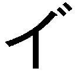
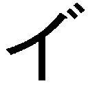
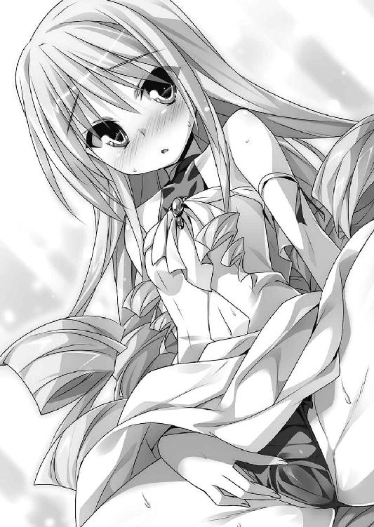

| Ｈ＋Ｐ13 －ひめぱら－ (富士見ファンタジア文庫) | |
| 風見 周 | |
| (2012) | |

Ｈ＋Ｐ⑬
─ひめぱら─
風見 周

富士見ファンタジア文庫
本作品の全部または一部を無断で複製、転載、配信、送信したり、ホームページ上に転載することを禁止します。また、本作品の内容を無断で改変、改ざん等を行うことも禁止します。
本作品購入時にご承諾いただいた規約により、有償・無償にかかわらず本作品を第三者に譲渡することはできません。
本作品を示すサムネイルなどのイメージ画像は、再ダウンロード時に予告なく変更される場合があります。
本作品は縦書きでレイアウトされています。
また、ご覧になるリーディングシステムにより、表示の差が認められることがあります。
口絵・本文イラスト ひなた睦月
プロローグ
「フンッ！ フンッ！ フンッ！ フンッ！」
朝。トレクワーズ王国。後宮の裏庭。
目映い旭光を浴びながら、神来恭太郎は一心不乱に木刀の素振りをしていた。
朱塗りの愛刀で澄み切った朝の空気を切り裂く。
太刀筋が乱れぬよう魂を込めて刀を振るい続けていると、次第に自分の腕が──いや、恭太郎そのものが一振りの太刀になったかのような心境に達する。刀を意のままに操れるようになるのだ。
この感覚を会得するのに、恭太郎は一〇年以上もの月日を要した。
幼い頃から毎日数千回という素振りを続けた末に身につけたものである。
剣の道を究めた達人に比べれば、恭太郎の腕などまだまだ未熟だ。だが、若輩ながらも剣士であると名乗っても恥ずかしくない程度の腕前を身につけることができたのは、姉である桜子のおかげだと信じている。
剣士にとって必要なことの全てを、姉上は教えてくれた。
その修行は厳しく、時には命に関わるような危険な目に遭わされた。
日本に生息する凶暴な生物（ヒグマ、鮫、ハブ、スズメバチなど）とは一通り対戦したし、各地にある危険地帯の大半に足を踏み入れている。日本全土にある活火山と名瀑は一通り回ったんじゃないかな。
修行をやめたい──そう思ったことは一度や二度ではない。
『姉上はどうして俺をイジメるのだろう？』と嘆いて、幼い頃の恭太郎は枕を濡らしたことさえあった。
だが、これだけは間違いない。
自分が強くなれたのは、桜子のおかげだ。
姉上が教えてくれた剣技によって、恭太郎はユフィナたちを救うことができたのである。
（姉上、感謝してもしきれません。親代わりとして、俺を育て上げてくれたこと......。剣術の師匠として、俺を強くしてくれたことを......）
「フンッ！ フンッ！ フンッ！ タァ──ッ!!」
恭太郎は裂帛の気合いと共に、最後の一太刀を振り抜いた。
汗が飛び散り陽光に煌めく。
日課としている朝の素振りを終えたのだ。
大きな庭石に腰掛け、道着の袖口で額の汗を拭おうとしたとき。
すぐ近くから控えめな拍手の音が聞こえてきた。
「精が出ますね、恭太郎さま」
第二王女のレイシア・ラトゥーイン・トレクワーズが春の木漏れ日のような笑顔を浮かべ、こちらを見つめて──んんっ!?
恭太郎は思わず、お姫さまの姿を二度見してしまった。
「どうしたんだよ、その格好!?」
レイシアは水色のジャージに身を包んでいたのだ。
首からホイッスルを下げており、小脇にはタオルやドリンクを抱えてる。袖がちょっぴりあまり気味なのが可愛らしい。
ズボンははいておらず、上着の裾から紺色のブルマがちらりと覗いていた。むっちりとしたふとももが盛大に露出している。どうやらジャージの下には体操服を着ているようだ。
「恭太郎さまの朝のお稽古を拝見しようとこちらに向かっている途中で、ピコルさまにご助言いただいたのです。スポーツをする男の子を応援するときは、この格好が正装だとのことで......」
なるほど。服装のコンセプトがわかった。
これはたぶん、『運動部のマネージャー』の格好なんだな。
タオルやドリンクを胸の前で抱えて、レイシアは恥ずかしそうにうつむく。
「おかしいでしょうか......？」
「いや、ぜんぜん変じゃないよ。レイシアはどんな服装でも似合うと思う」
レイシアがマネージャーになったら、どんな部活動の選手でも張りきってしまうだろう。
花が咲くように、王女さまの表情が明るくなった。
「私にはもったいないお言葉です。頑張る恭太郎さまを、私も全力でサポートさせていただきますねっ。どうぞ、お飲みください」
レイシアは恭太郎に駆け寄ってきて、ボトルを差し出した。
「ありがとう。喉が渇いていたから助かるよ」
中に入っているのは、ほどよく冷えた蜂蜜水。柔らかな甘みが疲れた身体に染み渡っていく。
「汗を拭かせていただきますね」
恭太郎の前で中腰になり、タオルで顔の汗を優しく拭ってくれた。
「まあ、すごい汗です。恭太郎さま、どうかご無理はなさらないでくださいましね......」
「そうも言ってられないよ。なにせ俺は、あの姉上と果たし合いをしなくちゃいけないんだからな。気合いも入るさ」
神来桜子にはウィッチェリア大陸において最大の軍事力を誇るカルタギア軍の精鋭も、世界を滅ぼしかけた怪物《サキュバスの女王・レネゲイド》ですらも敵わなかった。
まさに《地上最強の姉》である。
そんな姉上に、恭太郎は決闘を申し込んだ。
剣術の師でもある姉を乗り越えねばならないのだ。
勝負の期限は、六日後。
「恭太郎さまなら、きっと勝利なさると信じています」
首筋の汗を拭ってくれたレイシアは、ちょっぴり躊躇いがちに言葉を続けた。
「あ、あの......お身体の汗も拭いて差し上げたいので、お着物をはだけていただけますか？」
いや、身体はいいよ！ 自分でできるって！──トレクワーズ王国に召喚されたばかりの恭太郎なら、そう叫んでいたところだろう。
だが、今は違う。
恭太郎はレイシアが大好きなのだ。好きな女の子に触れられることに、なんの躊躇いもない。むしろ、うれしかった。
「ああ、よろしく頼むよ」
道着をはだけさせ、恭太郎は諸肌を脱いだ。
朝の冷たい空気が汗に濡れた背中を撫でる。
男のハダカなんて、見る機会はまったくないからだろう。
ぼゎゎゎんっ！──そんな音が出そうな勢いでレイシアの顔が真っ赤になった。
「し、失礼します......」
恭太郎の背中側に周り、おずおずと手を伸ばしてくる。
「まあ、お背中にもたくさん汗をかいてらっしゃいますね。びっしょりです」
「素振りの前に走り込みもしたから、余計に汗だくなのかもしれないな。汗臭かったらすまん」
「いいえ！ 臭いだなんて、とんでもありません！」
大人しいレイシアにしては珍しく、強い声音が返ってきた。
うなじの辺りに気配を感じる。肩の辺りに顔を寄せて、レイシアが子犬のようにくんくんと鼻を鳴らしていた。
「恭太郎さまの身体からは、とってもいい香りがしますよ」
「いい香りなんてするかな......？」
自分の二の腕辺りに鼻を寄せてみるが、恭太郎にはあまり匂いは感じられなかった。ちょっぴり汗の匂いがする程度だ。
「とっても素敵な香りです......♡」
恭太郎の耳の後ろに鼻を近づけて、レイシアは匂いをめいっぱい楽しむ。
「『恭太郎さまの匂い』を詰め込んだ香水があったらいいのに......。もしも発売されたなら、トレクワーズ王家の予算を注ぎ込んででも買い占めてしまいますよ」
「俺の匂いがする香水なんて売れないよ。というか、仮に発売されたとしても、そんなことで使い込みなんてしちゃダメだって」
レイシアは女王陛下を手伝って、国政の一部を担っている。国家予算を自由にできる立場にあるのだ。さっきの発言はシャレにならないよ。
「今度は前の方を失礼しますね」
レイシアは再び恭太郎の前に跪いた。胸元の汗を拭いてくれる。
ハダカの胸元にタオルを這わせつつ王女さまは顔を近づけてくる。
すんすん。すんすん。すんすんすんっ。
小鼻を膨らませ、思い切り息を吸い込んだ。
「はふぅ、恭太郎さまはやっぱりいい匂いです。ずっと嗅いでいたくなっちゃいます......」
王女さまの瞳が潤んだ。うっとりとしたような表情だ。
「俺にはあんまり感じないんだが......どんな匂いがするんだ？」
「なんだか胸がドキドキする香りです。頭がぽーっとしちゃいます。つまり、その......なんていうか......いえ、なんでもありません」
「途中で言いかけてやめないでくれよ。どんな匂いなんだ？」
レイシアは視線を逸らした。耳の先まで真っ赤に染めて、消え入りそうなほどの小声で付け加えた。
「......えっちな気分になってしまう香りがいたします♡」
「なっ......！」
運動をやめた後だってのに、変な汗が噴き出してしまった。
レイシアは真面目でおしとやかな王女さまだ。
そんなお姫さまが自分の体臭を嗅いで『えっちな気分になっちゃう♡』なんて言い出したら、健全な青少年なら誰だって動揺するだろう!? 将来を誓い合っている仲とはいえ、破壊力が大きすぎる！
顔を真っ赤に染めて、レイシアは首を横に振った。
「か、勘違いしないでくださいましね。レイシアは殿方の匂いを嗅ぐだけで変な気分になってしまうような、そんなふしだらな王女ではありません。恭太郎さまの匂いを嗅いでドキドキしてしまうのには、理由があるのですっ」
「理由？」
「はい。ピコルさまに教えていただきました。恋をする乙女にとって、大好きな殿方の匂いは、なによりも効き目がある媚薬なのだ、と」
恭太郎を上目遣いに見つめ、大きな胸の前でタオルを抱きしめて。
「レイシアは恭太郎さまをお慕い申し上げています。だからこそ、恭太郎さまの汗をいい香りだと感じているのですっ！」
そんなことを真顔で力説されたら、照れくさいって......。
顔が熱くなる。拭いてもらったはずの背中にも汗が噴き出してきた。
──と、そのときだ。
「............!!」
凄まじい殺気を感じた。
恭太郎たちのいる位置から、五メートルほど離れた木の陰。
般若のような形相をした軍服姿の桜子が、こちらを睨み付けていた。桜柄の染め抜かれたマントや、長い黒髪が風もないのにのたくっている。
バサバサ。うねうね。ゴゴゴゴゴ。
怒るのも無理ない。
姉上はとてつもなく厳格な人なのだ。
これまでも恭太郎がみだらな行為に及ぼうとしたら、容赦なく鉄槌を加えてきた。
人気のない裏庭で婦女子と二人きりでいるなんて。
上半身ハダカとなって、寄り添っているなんて。
桜子の逆鱗に触れる──どころか、逆鱗を握りしめてグリグリ引っ張り回したも同然の状況だ。
『うわああ！ 違うんです、姉上！ これは汗を拭いてもらっていただけなんです！ 疚しい気持ちなんて、これっぽっちもありません！ ごめんなさい許してください修行だけは勘弁してくれええええ!!』
そんな風に叫んで、フライング土下座を敢行したくなる気持ちに駆られてしまう。
だが、沸き上がる恐怖を堪えて、恭太郎は姉の存在をスルーした。
頬を染めて寄り添うレイシアに意識を集中させる。
「へ、へえ、そうなのか。知らなかったよ。好きな人の匂いを嗅ぐとドキドキしちゃうものなんだな」
跪いている王女さまの腕を引き、優しく立ち上がらせた。
「レイシア。ちょっと、こっちにおいで」
「きゃっ」
膝の上にのせるようにして、レイシアを抱き寄せる。バストはボリューミーなのに、ウエストは細っこい。女の子らしい感触がジャージの布地越しに伝わってきて、それだけでドキドキしてしまう。
「ななな、なにをなさるおつもりですか？」
目を白黒させている王女さまの首元に、恭太郎は顔を近づけた。
「レイシアの匂いも嗅いでみようと思ってさ」
「い、いけませんっ。嗅がないでください。朝起きてから、まだシャワーを浴びていないんですっ。香水もつけてませんし......せめてお風呂に行かせてくださいましっ」
「ダメだ。さっきレイシアだって、さんざん俺の匂いを嗅いだろ？」
レイシアの細い首筋に鼻先を近づけ、思い切り息を吸い込んでみる。
シャンプーのフローラルな香りに加えて、女の子っぽい甘いような匂いが鼻孔をくすぐった。
気が遠くなりそうなぐらいにいい匂いだと思った。
「すごく素敵な香りだよ」
「は......恥ずかしいです......」
「よし。もっと嗅いじゃおう」
レイシアのジャージの前を開いた。
──たゆゆゆんっ♡
体操服に包まれた、はち切れそうなほどに巨大なバストが恭太郎の前で揺れる。
二つの柔らかなふくらみに顔を近づけて、くんくんと鼻を鳴らす。
「やあっ、そんなとこ嗅いじゃダメぇ。絶対に臭いですっ。くんくんしないでくださいましっ」
恥ずかしくて堪らないんだろう。レイシアは身をよじって、逃げだそうとする。胸元まで赤くなってしまっていた。
「こら、逃げるな。これでも嗅いで我慢していてくれ」
タオルを持つレイシアの手をつかんだ。王女さまの鼻の辺りにタオルを押し当てる。
恭太郎の汗がたっぷりと染みこんだタオルだ。

「はぁんっ♡ 恭太郎さまの匂いがするぅ♡♡♡」
たちまちレイシアの身体から力が抜けてしまった。瞳を潤ませ、ふとももをもじもじとしはじめる。
抵抗がゆるんだ隙を突いて恭太郎は王女さまの身体に鼻を近づけた。
体操服からは石けんの香り。それにくわえて、もっと強いレイシアの匂いを感じた。頭の芯がしびれるような甘い香りだ。
「ピコル師匠の言葉は本当みたいだな。レイシアはとってもいい匂いがするよ」
「本当ですか？」
「ああ。......男にとっても、好きな女の子の匂いは堪らないものみたいだ」
「......すごくうれしいですっ」
恭太郎の膝に乗っかったまま、レイシアは抱きついてきた。
──もにゅにょんっ♡
ハダカの胸元に、レイシアの柔らかすぎるふくらみが押し当てられる。
「もっともっとレイシアの匂いを嗅いでください。いっぱいレイシアを感じてくださいましっ」
二人で裏庭で抱きあって、匂いの嗅ぎ合いっこをしてしまった。
匂いだけじゃない。感触も体温も。発される言葉も。
レイシアの全てが恭太郎にとっては愛おしいものに感じられた。
くんくん。くんくん。すんすんすんすんっ。
恭太郎の香りをたっぷりと楽しんだ後で。
「はぁはぁ......。昼も夜も......ずっと恭太郎さまの香りに包まれていたいです......」
トリップしてしまったような瞳で、レイシアは恭太郎を見つめてきた。
「恭太郎さまのタオルをいただけませんか？ イイ夢が見られそうな気がするんです......♡」
眠る前に、俺の汗が染みこんだタオルを嗅いでどうする気だよ!?
おしとやかなお姫さまの爆弾発言に動悸が止まらない恭太郎なのだった。
恭太郎とレイシアがいちゃいちゃしている間、桜子は大木の陰に隠れてこちらを見つめていた。
怒りを抑えきれないのだろう。身体がわなわなと震えている。憤怒のオーラによって周囲の空気が歪んで見えるほどだった。
メギメギメギっ!!──木の幹に指がめり込んで、恐ろしい音を立てている。
だが、怒鳴り声をあげることも、伝家の宝刀で斬りかかってくることもなかった。
恭太郎たちの行為を、ただ黙って見ていたのだ。
なぜ、桜子が破廉恥なマネをする恭太郎を叱責しないのか？
なぜ、桜子が見ていることを知りながら、恭太郎はえっちぃ行為に及んだのか......？
それらの理由を知るためには、少しばかり時を遡る必要があるだろう。
第一話 宣戦布告！
「姉上！──いや、神来桜子!! 俺はあなたに決闘を申し込む!!」
恭太郎が桜子に決闘を挑んだのは、和平条約の調印式典が行われた直後のことだった。
トレクワーズ王国。王宮。応接室。
ソファに座っていた軍服姿の桜子は訝しげに顔を上げる。
「なにを言っているのですか、恭太郎？ 悪い冗談はやめなさい」
「そうだぞ、きょーたろ。くだらないことを言っていないで、そこに座るのだ」
桜子の隣に座っているカリギュラは女帝の証である錫杖でソファを指し示して。
「今はとっても大事なお話をしているのだからな。ようやく和平条約の調印が終わり、きょーたろを連れてカルタギアへと戻れるのだ。今後の綿密なスケジュールを立てねばならぬ」
カリギュラは黒いドレスを身に着けている。
ここ最近、カリギュラは姉上に剣術の稽古をつけてもらうため、黒い剣術着をまとっていることが多かった。髪を短くしたことも相まって、凜々しい美少女剣士風の格好がとても似合っていたのだが......うん。やっぱり、カリギュラにはドレスが似合うよな。九歳の女の子とは思えないような風格を感じる。って、見惚れてる場合じゃなくて!!
「......桜子どの。妾は帰国次第、一刻も早くきょーたろと結ばれることを発表したいのだ。帝国臣民もきっと喜ぶに違いない」
「慶事というのは、日取りが大事です。大安を選んで発表しましょう」
「むむ？ タイアンとはなんだ？ さては、甘くて美味しい食べ物か!?」
二人の会話を断ち切るように──バシン!!
恭太郎はテーブルを平手で叩いた。
「俺は冗談を言ってるつもりはないよ！ 本気で姉上に果たし合いを申し込んでるんだ！」
カリギュラは怪訝そうに眉をひそめた。
「本気で言っているとしたら、ますますくだらない発言だぞ？ 果たし合いとは闘って決着をつけることを言うのだろう？ 桜子どのに勝てる者など、この世にはおらぬ。勝負を挑んでも結果は一つしかないのだぞ」
「ああ。俺もそれはわかっている。承知の上で姉上に挑ませてもらいたい」
懐から果たし状を取り出し、桜子に突きつけた。
姉上の瞳が鋭く尖る。それだけで背筋が凍り付き足が震えそうになった。
「......恭太郎。落ちぶれはしましたが、私たちは武家の人間です。それを受け取ってしまっては笑ってすませることはできなくなりますよ？」
「構わない。姉上と本気で戦いたいんだ。ちっちゃい頃にやった紙風船を叩き割るようなゲームじゃない。真剣勝負をさせてくれ」
恐怖を堪えて、桜子の瞳を真っ直ぐに見つめた。
たった一人の弟として真摯な想いをぶつける。
「俺はカルタギアへは行けない。トレクワーズ王国に愛する人がいるんだ!!」
「ま、待つのだ。貴様は妾を妻とすると決めたはずではないか！」
「すまない、カリギュラ。急場をしのぐために、本意ではないことを口走ったんだ」
「きょーたろは妾と結ばれるのではないのか......？ 妾のことが嫌いなのか......？」
カリギュラの黒い瞳にじんわりと涙の雫が浮かんでいく。
慌てて恭太郎はフォローを入れた。
「ままま、まさか!! カーリーのことが嫌いなわけじゃないよ！ 友だちとして、大好きだ。ただ、きみ以上に好きな人がいるんだ」
「うぐっ、ひぐっ......きょーたろは、いったい誰が好きなのだ？」
「答えなさい。あなたが心に決めた相手というのは誰なのです？ あの赤毛の王女ですか？ それとも胸の大きな姫ですか？ 妙に居丈高な金髪の姫？ メガネの王女？......よもや、年端もいかぬ末姫ではないでしょうね？ 倫理的に問題がありますよ、それは」
......というか、姉上はメルルちゃんよりチビっこいカリギュラと俺をくっつけようとしてるじゃないか。
心の中でツッコミを入れつつも、恭太郎は大きく胸を張った。きっぱりと言い切る。
「五人、全員です。ユフィナも、レイシアも、エリスも、アルトも、メルルちゃんも──《トレクワーズの五美姫》のことが、俺は心の底から大好きなんです！」
「五人の少女を......同時に愛していると言うの......？」
「はい。誰か一人には決められません。五人とも等しく大好きなんです。俺は彼女たちと結ばれたい。カルタギアに行くわけにはいかないんだ!!」
「言い残すことは、それだけですか？」
──チャキっ。
姉上はソファから腰を浮かせ、伝家の宝刀《神斬り》の鯉口を切った。
鈍色に光る刃が鞘からのぞく。
《神斬り》は破邪の力を持つと言われる刀。
ほとばしる霊気のせいなのか、わずかに鞘から抜いただけで周囲の気温が下がったような気がした。
「いいでしょう。望み通り、あなたの邪な心を叩き斬ってあげます。そこに直りなさい!!」
「待ってください、姉上！ 落ち着いて！ 刀を鞘に戻して！」
「これが落ち着いていられますか！ 神来家の嫡男が人倫にもとる行為をしているのに！」
「もちろん、五人の女の子を同時に好きになるなんて許されることじゃありません。それについては俺も悩みました。でも、偽りようのない本心なんです！ この想いは本物なんだ！」
再び、恭太郎は桜子に果たし状を突き出した。
「だから、勝負を挑ませてください。もしも俺が姉上に勝てたら、トレクワーズに残ることを許して欲しいのです。勝負の委細は果たし状に書いてあります」
姉上は刀を鞘へ戻し、恭太郎の手からひったくるようにして果たし状を受け取った。
書状の内容を検めて、「今すぐに決闘するわけではないのですか......？」と疑問を口にする。
果たし状には、次のような条件を記してある。
一、果たし合いの舞台は、クミト湖にある月影島とする。
一、果たし合いは一対一。木剣による一本勝負。助っ人は一切認めない。
一、期日は一週間後の夕刻。五時開始とする。試合時間に遅れた場合、遅刻したものは即座に負けとなる。
一、果たし合いまでの期間を、神来恭太郎は修行にあてる。恭太郎の修行内容について、神来桜子は一切の手出しを厳禁とする。
「王都トレクロの近郊に、剣士の決闘に相応しい巌流島のような島があるんです。湖の中ほどにある島なんですが......そこを果たし合いの舞台とさせてください」
「決闘の場所などどこでも構いません。木刀による一対一の一本勝負というのも異存はありませんよ。決闘に遅刻したら即座に負けとなるという決まりも、私の好みです。......けれど、七日もの修行期間を設けるというのはどういうことです？」
「残念ながら、俺の腕前では姉上には敵いません。しかし、敵わないまでもギリギリまであがいておきたいのです」
「修行の期間は手出し無用というのは？」
「俺にもウィッチェリア大陸で得たものがあります。姉上に教わったのとは別の方法で、俺も強くなったということを証明したい。成長した姿を姉上にお見せしようと思います」
「............」
恭太郎の心の奥を見透かすように、桜子はじっとこちらを見つめてきた。
長い静寂の後で、そっと果たし状を閉じる。
「わかりました。この勝負、お受けしましょう」
書状を懐にしまおうとして──軍服を身に纏っていたことに気付き、ポケットの中にしまった。
「うぐっ......ひぐっ......」
カリギュラは瞳をうるうるさせて、恭太郎を恨めしそうに睨んでくる。
「うう......きょーたろめ......。またもや、妾ではなくユフィナたちを選ぼうと言うのか......。妾は、こんなにもきょーたろが好きなのに......。くすんくすん......」
女帝の黒髪を、姉上は優しく撫でた。
「案ずることはありませんよ。私が恭太郎に負けることは万に一つもありません。必ずカルタギアへ連れてゆきます」
「うわ～～～んっ！ 桜子どの～～～っ!!」
もぎゅ～～～っと桜子の腕に抱きつき、カリギュラは子猫が匂いつけをするようにおでこをこすりつける。
姉上はそっと親指の腹で涙を拭ってあげた後で、コホンと咳払い。
「人前で抱きついてはなりません。あなたも剣士を目指すなら、しゃきっとなさい！」
「す、すみませんっ！ 桜子どの！」
起き上がりこぼしのように、再び女帝は背筋を伸ばした。
「カリギュラ。あなたは先に帝国へ戻り、婚約発表の準備を進めなさい。私も恭太郎との決闘が終わったら、この愚かな弟を連れてカルタギアへと戻ります」
「畏まりましたのだ！」
にっこりと微笑んで女帝は敬礼をする。姉上が負けることなど微塵も想定していないのが彼女の雰囲気でわかった。
ギロリと桜子は恭太郎を睨め付けて。
「恭太郎。果たし合いで私が勝ったら、言うことを聞いてもらいます。武士に二言はありませんね？」
「姉さまこそ、果たし合いの条件をきちんと守ってくださいよ」
「無論です。神来家のご先祖さまに誓って、約束を違えたりはしません。......かくなる上は、あなたを完膚無きまでに叩きのめすとしましょう。カルタギアへ戻ったら、修行のやり直しですよ」
「覚悟の上です」
神妙な面持ちで、恭太郎は大きく頷くのだった──。
果たし合いを申し込み終えた恭太郎は一礼をして王宮の応接室を出た。
ピンと背筋を伸ばしたまま廊下を歩く。渡り廊下から後宮へと入り、『教官室』というプレートの掛かった部屋にノックもそこそこに飛び込んで──
「だああああああああ......」
ドアに背中をもたれるようにして、その場にへたり込んだ。
目眩がする。呼吸がうまくできない。心臓が爆発しそうなぐらいに高鳴っている。人喰い熊と素手で戦わされたときだって、こんなに身体が震えたりしなかったのに。
「大丈夫、恭太郎!?」
第一王女のユフィナ・アストリア・トレクワーズが駆け寄ってきた。
恭太郎の手を優しく握ってくれる。
「......ああ。問題ないよ」
そっとユフィナの手を握り返して立ち上がった。愛する王女の手のぬくもりを感じたら、恐慌状態を脱することができた。
「ふふふっ、恭太郎って敵と向かい合うときはいつも堂々としてるのに、お姉さんが相手になるとてんでダメなのね」
「仕方ないだろ。姉上に対する畏れみたいなもんが、俺の骨身に染みてるんだ。恥ずかしいけど、ずっと足が震えてたよ。途中で何度も逃げ出したくなった......」
「でも、立ち向かうって決めてくれたのよね。ありがと」
「礼には及ばないさ。これは俺のためでもあるんだ」
この部屋の主──後宮の教育係であるピコルが声を掛けてきた。
「それで？ 首尾はどうだったのじゃ？ 無事に果たし合いは申し込めたかの？」
ユフィナと手を繋ぎ合ったままで、恭太郎は返事をする。
「はい。果たし合いに関する全ての条件も飲んでくれました」
「ふぅ、それはよかったのじゃ。これで第一関門突破じゃな......」
ピコル師匠は安堵の息を漏らす。
桜子に決闘を申し込むこと──これは恭太郎たちが立案した作戦の端緒であった。
恭太郎とユフィナたち五人のお姫さまが結ばれることを桜子に認めさせる。
言葉にすれば簡単だが、実際は無理難題である。
姉上はとにかくお堅い人なのだ。
『男女七歳にして席を同じくせずですよ！』
『運命の相手と一生を添い遂げることこそ、本懐というものです！』
『ふしだらなことをしたら許しませんよ、恭太郎ッ!!』
なぁんて言葉を耳元で怒鳴られながら育てられてきた。
そんなカタブツな桜子を説得できる唯一の可能性こそが、果たし合いなのである。
姉上は剣士だ。しかも、自らの腕に絶対の自信を持っている。真剣勝負を挑んで勝利することができれば、こちらの言い分を認めてくれるかもしれない。
だが、桜子と決闘をして勝利するというのも、ハッキリ言って不可能。相手は『地上最強の姉』なのだ。ウィッチェリア大陸にいる全ての王女たちが力を結集しても、姉上には敵うまい。
そこで、桜子を倒すために、恭太郎たちは策を弄することにした。
ヒントとなったのは、ガイルーンのアドバイス。
恭太郎の前に突如現れた伝説の魔法使いの言葉──それを元にしてピコル師匠や《トレクワーズの五美姫》とも相談をし、神来桜子攻略作戦を立案した。
教鞭を振り回し、ピコル師匠は鼻息を荒くする。
「題して、『桜子姉さんを倒せ！ ドキドキ♡あまあま♡ラブラブ♡いちゃいちゃ♡アツアツ♡トキメキ♡ちゅっちゅー♡いんぐりもぐり♡ドリーミングなアバンチュールが──」
「いや、作戦名が長いですって。覚えられませんよ」
「最後だから気合いが入ってるのじゃよ。だが、作戦名が長すぎて支障が出ても困るのじゃ。別名をつけるのじゃ。コホン！ 題して、『愛の後宮大作戦』なのじゃ～～～っ!!」
「今度はえらく短くなりましたね」
「うむ。『シンプル イズ ベスト』というヤツじゃな。恭太郎。そして、ユフィナさま。作戦の第二段階に移って欲しいのですじゃ」
「後宮の中で......なんていうか、その......恭太郎といちゃいちゃすればいいのよね？」
「左様ですじゃ。今夜から恭太郎には、毎晩一人ずつ、お姫さまたちと夜伽をしてもらいますのじゃ。我が国の後宮の原点に立ち返り、お姫さまがたが王仕さまの元を訪れる形でお願いしますのじゃ。元々、恭太郎は王仕さまとして、トレクワーズの後宮に召喚されましたからのぅ。姫さまがたは恭太郎とラブラブな一夜を過ごしてくだされ。そのようすを桜子殿に存分に見せつけるのですじゃ！」
ピコルの考えでは、恭太郎とお姫さまたちのアツアツな姿を見せつけることこそが姉上の打倒に繋がるらしい。
「『お世継ぎづくり』はしない方がいいんですか？ 手を出さずにいられる自信がないんですが......」
恭太郎は、もう心を決めている。
ユフィナたちを愛しているんだ。彼女たちにお世継ぎづくりを求められたら断れる気がしない。きっとケダモノと化して襲ってしまう。
「よもや、このカタブツ男から、そんな発言が飛び出るとはのぅ......。教育者冥利に尽きるというものじゃ......」
感動したようにそっと袖口で涙を拭いつつ、ピコル師匠は続ける。
「今回の主目的はアツアツな姿を見せつけることなのじゃ。吾は姉上のことが片付いてからゆっくりとえっちをすればいいと思うのじゃ」
「おおっ、師匠にしては珍しい発言ですね」
「恭太郎がユフィナさまがたを愛していることは吾も理解しておるのじゃ。お世継ぎづくりに前向きになってくれてることもな。おぬしを焚きつけて、さっさとコトに及ばせようというつもりはない。王国の未来のために存分に愛し合って元気な御子をつくって欲しいのじゃ。それにはまず、おぬしの姉上をどうにかせねばなるまいて」
「......ユフィナ。きみはどう思う？」
「ちょっと、恭太郎っ。そんな恥ずかしいこと聞かないでよね」
プイッと横を向くユフィナ。王女さまの頬がほんのりピンクに染まっていた。
「え、えっちしたいかどうかなんて......女の子が答えられるはずないじゃない。んもうっ、デリカシーってものがないんだから」
「そ、そうだよな。すまん」
視線を逸らしながらも、第一王女は恭太郎の手を離さなかった。ぎゅっと握り合う手に力を込めて。
「そこんとこは......恭太郎が決めてちょうだい」
悩んだ末に、恭太郎は決断を下した。
「わかった。今回の作戦では、お世継ぎづくりはしないことにしよう。俺がユフィナたちと結ばれる上で、姉上は最大の障害だ。でも、俺のたった一人の肉親であることには変わりないからな。姉上にも納得してもらった上で、みんなと結ばれたいと思う。男のケジメってヤツだよ」
「とかなんとか言っちゃって、レイシアとかエリスとかとえっちしちゃったら、私は怒るからねっ。平等じゃなきゃダメよ！」
左手でバシバシと恭太郎の二の腕を叩きつつ、王女さまは小声で付け加える。
「ほ、本当は独り占めしたい気持ちを堪えてるんだからね......」
「ん？ なんだって？」
「な、なんでもないってば！ 独り言よ！」
「ふゥはははー！ 手を繋ぎながらケンカとは、いきなりアツアツなところを見せつけてくれますのじゃ！ その調子、その調子！」
ピコル師匠は繋ぎ合ったままの二人の手を教鞭で指し示し、からかうように笑った。
「今回はルールとして、『挿入は禁止』を付け加えるのじゃ」
「師匠、単語が生々しいです！」
「他に言いようがあるまい。桜子殿に『恭太郎は五美姫を等しく愛している』と印象づけるためにも、一人にだけ手を出すようなマネはダメじゃぞ」
「わかりました」
「しかしながら、挿入以外の行為なら、どんないちゃいちゃラブラブなことでもして構わぬ。我が国が誇る後宮で、しっぽりと触れ合うがよいのじゃ！」
「姉上に俺たちがどれだけ愛し合ってるかわかってもらおう」
「うん......」
「そして、必ず姉上を倒すんだ」
恭太郎とユフィナは顔を見合わせ、小さく頷き合った。
「ではでは、気合いを入れていくのじゃ！」
ピコル師匠は教鞭を振り回し、大声で宣言をする。
「『愛の後宮大作戦』、第二段階に突入なのじゃ～～～～～～～～っっっ!!」
ハーレム講座☆ピコルの穴！ その１！
ピコル（以下、ピ）「ピコル師匠プレゼンツ☆ハーレム講座！ 題して、ピコルの穴！ 今回は最終回スペシャルなのじゃー！」
アレスタ（以下、ア）「こんにちわー！ 生徒役のアレスタでーす！ って、ピコル師匠！ 僕は忙しいんですよ！ 手短にお願いします！」
ピ「なんじゃなんじゃ。最終回も間近じゃというのにつれないのぅ......」
ア「僕は愛するミルンといちゃいちゃするのに忙しいんですよ！ はぁ、ミルン～♡ 今日も可愛いよ～ハァハァハァハァぺろぺろぺろぺろ」
ピ「やれやれ......『ペット☆ヒューマナイザーＥＸ』を貸してやってからというもの、ミルンとすっかりラブラブじゃなあ」
ア「だって、あんなに素敵な女の子だとは思わなかったんですもん。擬人化アイテムの持続時間が短いのが玉に瑕ですけどね」
ピ「アレは一日一回、長くとも三〇分しか持たぬからのぅ。......うむ。よかろう。最後のピコルの穴を無事に勤め上げたら、吾が『ペット☆ヒューマナイザーＥＸ』を改造して持続時間を延ばしてやるのじゃ」
ア「ほ、本当ですか!? 僕、頑張ります！ さあさあ、ピコル師匠！ 張り切ってピコルの穴を放送しましょう！ 最終回はなにをするんです!? みなさんからの質問に答えちゃいますか!?」
ピ「まったく、現金なヤツじゃ......。さてさて、今回は最終回スペシャルということで、『あの人はいま』という企画をやりたいのじゃ」
ア「あの人はいま？ どういうことです？」
ピ「うむ。チョイ役で登場した人たちが、幸せに暮らしているかどうか、吾の情報網で調査してみようと思ったのじゃよ」
ア「それはいいアイデアですね。僕だけが幸せになっちゃったら、なんだか申し訳ないですもん。みんなが幸せになってたらうれしいですよ」
ピ「さりげなくノロケおって。まあよい。......コホンコホン。それでは早速、最初の調査結果を報告するのじゃ！ あの人はいま──一人目はグリアネラさーん!!」
ア「わーい！ グリアネラさんだー！ ......って、誰ですか、それ？」
ピ「カルタギア帝国の飛竜騎士団の団長さんじゃ。恭太郎を召喚した直後に姫さまがたを襲撃したが、ユフィナさまによって撃退されてしまったのじゃよ。女帝の怒りを買って、カエルに姿を変えられてしまったのじゃ」
ア「うわあ......。カエルですか。トビカピバラに変化させられた僕よりもひどいですね」
ピ「吾の調査によれば、グリアネラさんに掛けられた変化の魔法は一週間後には解けたそうじゃ。飛竜騎士団に復帰して、魔物の討伐などで戦功を上げたそうじゃよ」
ア「すごいや！ 大活躍じゃないですか！」
ピ「うむ。失敗はあったが、その後の功績を認められて、副将軍の地位に就くかもしれないそうじゃ」
ア「軍人さんとして、幸せに暮らしているんですね」
ピ「後宮のヌシとしては、女の幸せも掴んで欲しいんじゃがのぅ。それでは、二つめの調査報告！ あの人はいま──二人目はデボラさんじゃー！」
ア「わーい！ デボラさんだー！......って、誰ですか、それ？」
ピ「ユフィナさまが利用していた情報屋じゃよ。実はカルタギアの二重スパイとして、大結界の内側に潜り込んでいたんじゃがな」
ア「ほえー。そんな人がいたんですか......。大結界がなくなった今となっては、スパイなんて意味がないですね」
ピ「そうじゃな。桜子殿がカルタギア帝国の将軍である限り、侵略戦争は許さぬじゃろう。もはや戦争は起こらぬ。スパイも不要じゃ」
ア「それじゃ、デボラさんはクビになっちゃったんですか？」
ピ「吾の調べによれば、トレクロ潜伏中にクロワッサン屋台を経営している夫婦の一人息子と恋に落ち、そのまま駆け落ちしちゃったそうなのじゃ」
ア「ひゅー、ドラマチックー！ ロマンチックー！ エキゾチックー！」
ピ「今は港町ナトリアで、ダーリンと幸せに暮らしておるそうじゃ。なんでも、クロワッサン屋台を引いておるそうじゃぞ」
ア「ほえー、屋台の女将さんですか。スパイとは大違いのお仕事ですねえ」
ピ「じゃが、調査員の報告によれば、デボラさんは幸せそうじゃったとのことじゃ。二重スパイ生活もスリリングじゃろうが、こぢんまりとした生活の方が落ち着けるのかもしれぬなあ」
ア「それはわかる気がします。僕が女官のお姉さんの着替えとか、近衛騎士団のお風呂とかをノゾいて暮らしていたときもスリリングで楽しかったですけど......ミルンとラブラブしている今の方が幸せですもん」
ピ「それとこれとは違う気がするが......。ではでは、三つ目の調査報告！ あの人はいま──三人目はステンシルさんじゃー！」
ア「わーい！ ステンシルさんだー！......って、誰ですか、それ？」
ピ「ステンシルさんは、アレスタにゆかりのある人じゃぞ」
ア「僕に？」
ピ「うむ。カルタギア帝国の地下牢の看守をしているお姉さんじゃ。サキュバスの攻撃を受けて崩壊する黒炎城から一緒に脱出したじゃろ？」
ア「あー！ あのゴリラ似のお姉さんかー！ あの人、ステンシルさんって言うんですね。名前を初めて知りましたよ」
ピ「これこれ、ゴリラ似とはひどい言い草じゃのぅ。ステンシルさんの現況を調査したところによれば、アレスタと手に手を取って脱出したあのスペクタクル以来、彼女はすっかりトビカピバラ大好きっこになってしまったようじゃぞ？ 最近の趣味はカピバラグッズの収集じゃそうじゃ」
ア「そうなんですか？ えへへ、モテる男は辛いなぁ。ゴリラ似のお姉さんに好かれてもあんまりうれしくないけど」
ピ「あんまりひどいことを言うもんじゃないのじゃ。本人に聞かれたら大変じゃぞ」
ア「まあ、確かにひどいこと言っちゃいましたよ。でも、ステンシルさんはカルタギアの地下牢で看守をしてるんです。聞かれるはずないじゃないですか」
ピ「ところがどっこい！ 最終回スペシャルの特別ゲストとして、今日はステンシルさんをお呼びしているのじゃー！ ステンシルさん、どうぞお入りくださいなのじゃー！」
ア「なんですとー!?」
ステンシル（以下、ス）「こんにち！ 地下牢のヴィーナスこど、ステンシル軍曹でずっ！ チャームポインドはダミ声でず！」
ピ「むむぅ。すごい声なのじゃ......」
ア「お、お久しぶりです、ステンシルさん......」
ス「ちょっどー、アレスタぐーん！ 聞いてたわよー！ ゴリラ似なんてひどいじゃ ーい！ あんなに愛し合った仲なのー！ でも、久しぶりに会ったらやっぱりカワイ～～～♡」
ーい！ あんなに愛し合った仲なのー！ でも、久しぶりに会ったらやっぱりカワイ～～～♡」
ア「ぎゃー！ ごめんなさいごめんなさい！ 抱きしめないで耳を引っ張らないでギブギブ！ 死んじゃう死んじゃう！」
ス「死ぬほど私が好きってこど？ いやー！ 照れちゃゔ～～～♡」
ア「もぎゃーす！ キスは勘弁して！ 僕には心に決めた相手がいるんだよぅ！ んぶ～～～っ!?（無理矢理キスされる）」
ピ「おやおや、お熱いことじゃなあ。恭太郎だけじゃなく、おぬしまでいろんな女性とラブラブすることになるとは......今回は本当にアツアツな展開ばかりなのじゃ」
ア「ちょっと、師匠！ どこがラブラブに見えるんですか!? 僕は襲われてるんですよ！ あっ、やめて！ いろんなとこをまさぐらないで!?」
ス「いいじゃないの～、減るもんじゃなじ～」
ア「痛い痛い！ そんなに撫で回されたら減っちゃう！ 僕の身体がすり減っちゃう！ 助けてくださいよ、師匠～っ！」
ピ「女性に悪口を言った罰じゃ。そのままラブラブするがいいのじゃ」
ス「アレスタぐ～♡♡♡」
ア「いや～～～～っ!! 堪忍してぇ～～～～っ!!」
ピ「ピコルの穴、その１はここまでじゃ！ 次が正真正銘の最終回！」
ア「その２をお楽しみにね！ もぎゅらばっ!?」
第二話 愛の後宮大作戦！ ─ぜんはん─
第一夜──第三王女 エリス・レムリス・トレクワーズ
さて。
ここで今一度、トレクワーズ王国における『後宮』の生活について再確認してみよう。
後宮は国を治める王家のために作られたお世継ぎづくりのための施設である。
後宮には王国全土から美貌、知性、教養、家柄、そしてなにより魔力に優れた少年たちが集められる。彼らは《王仕さま》となって、次代の女王となる権利を持つお姫さまたちのお相手をしお世継ぎをつくるのだ。
恭太郎がトレクワーズ王国に召還されたときには、既に王仕さま候補の少年たちはカルタギア帝国によって拉致された後だった。
本来であれば二〇〇〇人もの美少年たちが王仕さまとして後宮で暮らす予定だったのだそうだ。
後宮において王仕さまからお姫さまにアプローチすることは基本的に許されていない。王仕さまにできることは、お姫さまからの『お声掛かり』を待つことだけである。
歌舞音曲を嗜んだり、礼儀作法を学んだり、格闘技術を高めたり──自分磨きをすることで魅力を高め、王女さまに見初められるよう努力するのだ。
お世継ぎづくりへと至る段取りについては、恭太郎が知識として知っている普通の後宮（江戸時代の大奥とか）と変わらないと思う。
お姫さまが今宵の夜伽の相手を務めさせる王仕さまの部屋を訪ね、お世継ぎづくりに励むのだ。
王仕の部屋で王女さまとお世継ぎづくりをすることもあれば、後宮内にあるさまざまな施設でえっちをする場合もある。『明るく楽しくえっちをした方が、生まれてくるお世継ぎの魔力が高まる！』というピコル師匠の房中術理論に従い、楽しくえっちをするためのプレイルームが完備されているのだ。どんな性癖を持つ王女さまにも対応できると師匠は豪語していた。なお、どんな内容のプレイであろうと王仕さまに拒否権はない。王女の命令には絶対服従が原則である。
「......まあ、王女さまの命令に従った回数の方が、俺の場合は少なそうだが」
トレクワーズ王国の後宮。夕刻。恭太郎の部屋。
ベッドに寝ころんだ恭太郎は、頭上に設置された天蓋を見上げた。
「今回の作戦では、彼女たちの言うことを全部聞いてあげなきゃいけないんだよな......」
『愛の後宮大作戦』を進めるにあたり、ピコル師匠から『後宮のあり方の原点に立ち返るのじゃ。王女さまたちのお声掛かりを待つのじゃぞ！』と申しつけられている。
毎晩一人ずつ王女さまからお誘いを受け、王仕である恭太郎がそれに従う形で夜を共にするのだ。
そんなルール設定をしたのは、師匠によれば二つの理由がある。
まず一つめは、《トレクワーズの五美姫》を平等に愛していると姉上に理解してもらうため。
一人に一晩ずつの時間を与えて、五人全員と等しくアツアツカップルになっていることを印象づける狙いがあるそうだ。
そして、もう一つの理由が──考え得る最高のいちゃいちゃっぷりを見せつけるため。
いくら愛し合っているとはいえ、恭太郎は元はカタブツ少年だ。自分が主導権を握ってしまうと、知らず知らずのうちに理性がブレーキを掛けてしまうかもしれない。
限界突破したラブラブモードに突入するために、お姫さまたちに主導権をとってもらおうと師匠は考えたようである。
なるほど。確かに一理あるなと思った。
両手を枕にしてベッドに寝転がったまま、恭太郎は呟く。
「誰が最初に来るんだろう？ どんなことをするつもりかな？......不安が半分。楽しみが半分って感じだよ」
以前の恭太郎だったら、こんな事態に陥れば楽しさなんて感じられなかっただろう。不安度一〇〇〇％だったはずだ。
でも、今はちょっぴり楽しみな自分がいる。胸がドキドキしていた。
そのとき──バンっ!!
ノックもなくドアが開け放たれた。
「お────────っほっほっほっほっほっ!!」
高笑いが部屋中に響き渡る。鼓膜に突き刺さるような笑い声が、恭太郎にとってはなぜか心地よかった。
身体を起こして恭太郎はベッドに腰掛ける。
「やあ、エリス。トップバッターはきみか」
第三王女のエリス・レムリス・トレクワーズが、腰に手を当てて仁王立ちしていた。
ドリル状の豪奢な縦ロール。人形のように整った顔立ち。つり目がちな瞳。両肩の露出した派手なドレスがよく似合ってる。
「ええ。この私が自ら足を運んで差し上げたのですわ。這いつくばって感謝して欲しいものですわね」
思わず微笑んでしまった。偉そうな物言いにも、どことなく可愛らしさを感じた。出逢った当初は、なんて高飛車な女の子だろうと呆れたものだったが......『あばたもえくぼ』というのは真実のようだ。
「なにを笑ってるんですの？」
「いや、エリスが来てくれたのがうれしくてさ」
ポッと頬を染めて、エリスは顔を背けた。ゴニョゴニョと小さな声で呟く。
「あなたが望むなら、毎晩だって来て差し上げますのに......」
「ん？ なんだって？」
「な、なんでもありませんわ。こちらの話ですの」
「そうか。ならいいんだが......」
エリスは恭太郎の前まで歩み寄ってきた。こちらを見下ろして、フンと鼻を鳴らす。
「今晩、私はあなたを指名いたしますわ。......と言っても、後宮には恭太郎しか王仕さまがいないのですけれど。今夜、恭太郎はこのエリス・レムリス・トレクワーズの所有物ですのよ。いいこと？ 命令には絶対服従してもらいますからね！」
「ああ、わかってる。きみの頼みは全部聞くつもりだ」
「では、這いつくばって私の靴をお舐めなさい」
「いや、でも、そういうのはちょっと......」
「ふふふ、冗談ですわ。あなたを屈服させたいと思っていたこともありましたけど、今はもう諦めましたの。そのナマイキさも恭太郎のよいところですものね」
エリスは恭太郎の隣に腰掛けた。ベッドが微かに軋む。
「ふぅ、よかったよ。それで？ これからなにしようか？ 後宮の施設を使ってみるか？」
「いいえ、この部屋で結構よ。まずは......」
エリスは可愛らしく唇を尖らせた。
キスして欲しいってことだろう。
恭太郎は王女さまの唇に唇を近づけていく。互いの唇が触れ合う直前に──ふいっ──軌道を逸らして、ほっぺにキスをした。
「ほっぺではなくて！ 他に口づける場所があるでしょう」
「すまんすまん」
謝りながらもう一度唇を近づけていく。唇同士が触れ合う──かに見せて、またもや直前で動きを変えた。額に優しくキスをする。
「おでこでもなくて！ 恭太郎っ。なぜ唇に口づけてくれないんですの？」
「『でこちゅー』されるの、好きなんだろ？」
「確かに、でこちゅーは偉大なる行為ですわ。時と場合によっては、唇を重ね合わせるよりも価値がありますの。でも──」
微かに頬を膨らませて、エリスが恨みがましい声で言った。
「今は唇がいいんですのっ」
「わかってる。冗談だよ。さっきの仕返しだ」
「んもうっ、恭太郎はやっぱりナマイキですわ。こうなったら、あなたを厳罰に処してあげますの！」
「どんな刑が俺を待ってるんだ......？」
エリスは恭太郎に唇を寄せてきた。
「一〇〇万回のキスの刑に処しますわ」
そっと唇を重ね合わせる。二度、三度。小鳥がえさをついばむような優しいキスを繰り返した。
「恭太郎......」
なにかを求めるように、エリスがわずかに唇を開く。
小さく頷き返して、恭太郎は王女さまの頭を抱えるようにうなじの辺りに手を添えた。
エリスの唇から舌を侵入させる。柔らかな部分をまさぐるように王女さまの口中を堪能した。
恭太郎の舌を懸命に受け入れようと、不器用に王女さまも舌を動かす。両手をギュッと握りしめて、身体を強ばらせているのが愛らしくて堪らない。もっと荒々しく責め立てたくなる。
「ん......♡ あふぅ......♡」
舌を絡め合わせられ、エリスの唇から熱い吐息が漏れ出す。
十分に愛する少女の唇を味わい尽くした後で、恭太郎はそっと唇を離した。
混じり合った二人の唾液が唇に銀色の橋を架ける。
親指でそっとエリスの唇を拭った。王女さまは放心状態のように瞳をトロンとさせている。
「でこちゅーは素晴らしいものですわ。......けれど、『れろちゅー』には敵いませんの」
「れろちゅー？」
「メルルに聞きましたわ。こういう激しいキスのことを、れろちゅーというのでしょう？ 舌を絡め合わせるなんて汚らしいことなのに......恭太郎とのれろちゅーは心地よいですわ。ずっとずっとしていたくなりますの」
「俺も同感だよ。キスってこんなに気持ちが良いものなんだな」
「ねえ、恭太郎......」
ドレスシャツの袖口をつんつんと引っ張ってくる。
「もう一度キスをなさい」
「......いいよ」
再び唇を近づけようとした、そのときだ。
──ピシぃッ!!
耳障りな高い音が響いた。弾かれたように音の出所を振り向いた恭太郎は、そのままショック死するかと思った。
「きょ～お～た～ろ～おぉぉぉぉおおおお～～～............」
中庭に面した窓にひびが入っていた。蜘蛛の巣状にひび割れたガラス窓の向こう側、空中に桜子が浮かんでいたのだ。
怒りのためか身体の周囲にはドス黒いようなオーラが漂い、桜柄のマントを不気味に揺らめかせている。
慌てて、窓辺に駆け寄った。
「姉上っ!? どうやって宙に浮かんでいるんですか!?」
「あなたのようすを眺めたいと願っていたら、自然と身体が浮き上がったのです」
エリスも恭太郎の隣へと駆け寄ってきて。
「これは【浮揚】の魔法ですわ。姉上さまは女性ですから、魔法が使えてもおかしくはないのですけれど......呪文詠唱の訓練もせずに使えるようになるなんて、常軌を逸してますの。【浮揚】は上級魔法ですのよ？」
なんと姉上は無意識のうちに魔法まで使えるようになってしまったらしい。常識外れにもほどがあるだろ。
「細かいことはどうでもいいのです......」
姉上は空中で《神斬り》を抜いた。切っ先を恭太郎へと突きつけて。
「決戦の日まで修行をするというから、どんな訓練をしているかと思えば......ふ、婦女子と、せ、せ、せせせ、接吻をしているなんて!!」
桜子の顔が微かに朱に染まる。
「しかも、あんなに激しい口づけを......！ 不埒な真似は許しません！ そこへ直りなさい！ 即刻叩き斬ってあげます！」
......よし。思い通りの展開だな。
恭太郎は大きく深呼吸をした。キモを据えて、できるだけ落ち着いた口調で語りかける。
「姉上、忘れたのですか？ 果たし状にはこう書かれていたはずですよ」
一、果たし合いまでの期間を、神来恭太郎は修行にあてる。恭太郎の修行内容について、神来桜子は一切の手出しを厳禁とする。
「エリスとのふれあいは俺にとっては修行の一環なのです。姉上は手出し無用でお願いします」
「そんな屁理屈が通るものですか！」
「これが俺の見出した、この世界での修行法なんです。姉上は黙って見ていてください。......それとも姉上は、約束を破るつもりですか？ 『武士に二言無し』といつも言っている姉上が......」
果たし合いの申し込みをするとき、決めごとについては守るように念を押した。
姉上は約束を破ることが大嫌いだ。言い返すことができず、一瞬だけ「し、しかし......」と言葉を詰まらせた。
すかさず、恭太郎は畳み掛ける。
「姉上がなんと言おうと約束は約束。守ってもらいますよ」
問答を終わらせるため、恭太郎は遮光カーテンを引いた。──姉上が覗き見できるよう、ほんの数センチほどの隙間は開けておく。
「恭太郎！ 恭太郎ッ!!」
怒鳴り声が響いてくるが、エリスの手を引いてベッドへと戻った。
ベッドに座った王女さまが心配そうに手を握り返してくる。
「恭太郎。手が震えていますわ」
「すまん。姉上に怒鳴られるのは怖くてさ。格好悪ぃな」
「姉とはいえ、サキュバスの女王を一撃で屠る女傑ですもの。怖がるのも無理はありませんわ。......そうですわ。怖さがなくなるおまじないをしてあげますの」
手を握り合ったまま──ちゅっ。
エリスは恭太郎のおでこにキスをしてきた。
「不思議だな。本当に怖さが和らいだよ」
「うふふ、やはり『でこちゅー』は偉大ですわね」
姉上の存在をできるだけ考えないよう、心の隅へと追いやりつつ──恭太郎はエリスに問いかける。
「それじゃ、続きをしようか。今夜はどんなことしたい？ なんつーか、その......お世継ぎづくりの一番最後まではやらないって決まりにしてあるから、それは無理だけど」
平たく言うと、『入れちゃダメ』ってことだな。
「それ以外のことならなんでも付き合うぞ」
「あなたとなにをするのか、もう決めてありますの」
コホンと咳払いをして、エリスは続ける。
「『なにもしない』をしますわ」
「『なにもしない』をする？」
エリスは天蓋付きのベッドを見回して。
「あなたが後宮に来た日のこと、覚えているかしら？ 私は誰よりも早くお世継ぎがつくりたくて、この部屋を訪ねたのですわ」
「覚えてるよ。きみは同じベッドに座りさえすれば、赤ちゃんができると思ってたんだよな」
「ところが、あなたに房中術理論の本を見せてもらって、真実を知った私は卒倒してしまったんですのよ」
ドレスの胸元を探る。ポケットなんてないように見えるのだが、エリスはメモ帳を取り出した。次から次へとメモ帳をベッドの上へと積んでいき──って、どんだけ出てくるんだよ？ 一〇冊以上ものメモ帳をドレスから取り出した。
「これは《エリスさまのマル秘メモ》ですわ。お世継ぎづくりの秘訣を書き付けていたんですのよ。一三冊目にして、ようやく完結致しましたの。お世継ぎづくりにおいて、最も重要な秘密を知ることもできましたしね」
「へえ、すごいな......」
感心しつつ⑬と書かれたマル秘メモを手に取ろうとして、ぴしゃりと手の甲を叩かれた。
「なにをしていますの！ あなたには見せられませんわ！」
一三冊のメモ帳を恭太郎の手からひったくるようにしてかき集め、エリスはベッドサイドのテーブルに積み上げた。
「メモを残してきた甲斐あって、私はお世継ぎづくりについてとても詳しくなりましたの。今では出逢った頃のような勘違いはしませんわ。全てを理解した上で、敢えてあなたとベッドの上で『なにもしない』をしたいんですの」
ベッドの上に膝立ちになったエリスは恭太郎の手を引っ張った。二人並んでベッドに横たわる。
「世の恋人たちは、特に目的もなくベッドでゴロゴロするそうですのよ。愛し合っている二人でないと間が持たないらしいですわ」
そんなこんなで。
恭太郎とエリスはベッドでゴロゴロすることにした。『これのどこが修行だ！』と姉上が怒鳴るのも無理はない行動だと我ながら思う。
ただ寝転がってるだけなんてヒマをもてあましてしまいそうな気もするが、さにあらず。
お喋りをして、ときおりキスをして、くだらない会話をして、またキスをして。
喋っている内容も子どもの頃の話とか、学校に通っていた頃のクラスメイトのこととか──そんな他愛もない会話をしていただけなのに、とても楽しかった。あっという間に時間が過ぎてしまう。
気がつけば、窓の外は暗くなっていた。日が暮れてしまったようだ。
「もうこんな時間ですわね」
エリスは指を鳴らして魔法灯に光をともした。
「ただ横たわってお喋りしているだけなのに、とても幸せですわ」
「俺もだよ。ちょっと驚いてる。......でも、ちょっぴりオナカが空いてきたな。食事をしに行こうか？」
「ここへ持ってきてもらいましょう。ごはんを食べたら、またゴロゴロするんですの」
「それじゃあ、女官を呼ぼう」
「でも、その前に......もう一回だけ」
エリスは上半身を起こして、恭太郎の方に顔を近づけてきた。
またキスをおねだりしているのだ。
縦ロールの金髪を優しく撫でながら、恭太郎はエリスに口づけをする。
初めは優しく。次第に深く。
存分に王女さまの唇を堪能した後で、恭太郎は唇を横にズラした。
口角から、首筋へ。ゆっくりと唇を這わせていく。
「んぅっ♡」
エリスは可愛らしい吐息を漏らして、背筋を震わせた。
「わ、私は首筋が弱いんですの......」
「知ってるよ。ここを責められると、気持ちよくなっちゃうんだろう？」
ちょっぴり舌を出して、王女さまの首筋を舐めあげる。
「ひゃんっ♡」
──ぴくぴくんっ♡
甘い悲鳴をあげて、エリスが恭太郎にしがみついてくる。
「......なあ、エリス」
「な、なにかしら......？」
「一緒にゴロゴロしていたせいか......きみに触れたくて堪らない気分なんだ。もう少し続けていいか？」
「わ、私も同じですわ......」
耳の先まで真っ赤に染めたエリスは、恭太郎の胸の中で恥ずかしそうに囁く。
「あなたとお喋りしながらも......キス以上のことをして欲しいとずっと願ってましたの。いっぱい触ってちょうだい」
首筋に唇を這わせつつ恭太郎はエリスの身体を抱き寄せた。
横たわったまま鎖骨が描く優美な曲線を指先でなぞる。滑らかで手に吸い付くような肌触りだ。
ゆっくりと手をおろしていく。
──ふにんっ♡
指先に可愛らしい膨らみが触れた。
「......んっ♡」
背中に腕を回して、ドレスのファスナーを少しだけおろす。
エリスが着ているのは大きく胸の開いたドレスだ。ファスナーをおろすだけでドレスの胸元がはだけそうになる。
肩を抱くようにしてエリスは二つの膨らみを隠そうとした。
「む、胸はダメですわ。あまり大きくないから恥ずかしいですの......」
「そんなことないよ。エリスはとても綺麗だ。隠さないで、よく見せてくれ」
「うぅ......」
王女さまの手に手のひらを重ねた。
「恭太郎。姉上だけでなく、あなたももう魔法を使いこなせますのね......」
「俺が魔法を？ 意識的には使えないと思うが......？」
「あなたの言葉には【魅了】の魔法効果があるとしか考えられませんわ。恭太郎になら、全てを見られてもいいという気分になってしまいますの......」
そっとエリスの手を持ち上げる。彼女は抗うことなく恭太郎に従ってくれた。
ドレスを少しだけ、下へとずり下ろす。
黒いブラに包まれた二つの膨らみが恭太郎の前で揺れた。控えめではあるけれど美乳だと思う。
「すごく綺麗だよ、エリス」
レース素材の下着の上から優しく胸を揉んでみた。
──ふにゅんっ♡
小ぶりでも触り心地は抜群だ。手のひらサイズなのにプニプニ柔らかい。
恭太郎の指が動くたびにエリスは切なそうに身をよじる。その姿が可愛くて、えっちくて。夢中で胸を揉みしだいてしまった。
「んんっ♡ あんっ♡ ダメですわ、恭太郎......胸ばかりではなくて脚にも触れてくださらない？ 私は脚の方が自信がありますの......」
微かに息を荒らげながら、エリスはロングスカートをまくり上げる。
ガーターベルトをつけた美脚が露わとなった。
自信があるというだけあってエリスの脚線美は見事だ。こんなに美しい曲線を持つ物体なんて、この世には他にないんじゃないかな。
内ももに手を這わせる。見た目だけでなく感触も弾力も素晴らしい。女の子の肌というのは、どうしてこんなにも滑らかなのだろう。
と、エリスが恭太郎の耳元で躊躇いがちに囁いた。
「......もう少し上の方も触って欲しいですわ」
「もう少し上って......」
もう片方の手で、スカートをさらにたくし上げる。
黒いレース地のぱんつがチラ見えした。
ふとももに指先を滑らせて、ちょっとずつ上の方へと撫で上げていく。
「......ひゃぅっ♡ 触り方がえっちぃですわ！ どこで覚えましたの!?」
「きみと同じだよ。俺も勉強したんだ。......させられたって方が正しいけど」
ピコル師匠に本やらなにやらを読まされて、最低限の知識は身に着けている。
恭太郎はエリスに口づけをした。唇を唇でふさぎながら──優しく黒いレースのぱんつに触れた。
「んんっ♡ あふんっ♡」
恭太郎の指がビンカンな部分をまさぐるたびに、びくんびくんっと肩を震わせる。
「恭太郎......んぅっ、気持ちいいですわ......♡ んゅっ♡ んちゅっ♡」
エリスも恭太郎の唇へと舌を絡ませてくる。
キスをしながら、身体中を愛撫しまくるなんて......興奮するなって方が無理だ。恭太郎の心臓が痛いくらいに拍動する。鼻血が出そうだ。
まるで恭太郎の心を読み取ったかのように、エリスが唇を離した。
「恭太郎......」
「エリス......」
ハァハァと荒い息を漏らしつつ、潤んだ瞳で恭太郎を見つめる。身体が火照っているのか、胸元のあたりまで上気していた。
「今日は......『なにもしない』をするつもりでしたの......」
エリスは身体を起こして、両膝を立ててベッドに座った。いわゆるＭ字開脚のポーズだ。
スカートはまくれあがり、ガーターベルトをつけた美脚だけでなく黒いぱんつが恭太郎の眼前に晒された。
「でも、無理ですわ。『なにもしない』なんて、切なすぎますの......」
エリスはおへその下あたりへと手を伸ばし、ゆっくりと下着の中に右手を差し入れる。
レース地の生地を通して、指の動きがわかる。股布の下でＶサインを作るように指を動かした。

──くぱあっ♡
そんな、音が聞こえた気がした。
恥ずかしすぎて死んでしまいそうなくらいに、王女さまの顔が真っ赤だった。
「王位を得たいとか......。姉上さまに認めてもらいたいとか......。そんなもの抜きで、ただの女の子としてお願いしますわ」
下着越しに、エリスは指を広げて。
恥ずかしい部分を恭太郎に見せつけるようなポーズで、おねだりをしてくる。
「恭太郎とえっちがしたいんですの......♡」
たぶん、恭太郎の頭からは湯気が立ち上っていたと思う。ぷしゅ～～～～っという音が聞こえてきそうだ。
可愛すぎる。そして、えろすぎる。
脳内の景色が春のお花畑のようになった。あまりの色っぽさに気が遠くなる。
ただただ無我夢中でエリスの身体を押し倒してしまった
他のお姫さまたちを裏切るわけにはいかない。残されたわずかばかりの理性を総動員して、最後の一線は越えなかったものの......恭太郎とエリスは寝食を忘れて二人で愛し合ってしまった。
ちなみに、これは翌朝の出来事なのだが。
エリスと共にベッドで一夜を明かした恭太郎は、彼女よりも早く目を覚ました。キスのしすぎなのか、唇が乾いている。
「くー......すー......」
可愛らしい寝息を立てているエリスを起こしてしまわないよう気をつけながら、水でも飲もうかとベッドから立ち上がりかけた。
そのとき、ベッドサイドのテーブルに積まれていた《エリスさまのマル秘メモ》が崩れて、床に落ちていることに気付いた。
拾い上げて元に戻そうとした拍子に、恭太郎はうっかり中を見てしまった。
マル秘メモの⑬──最後の一冊。
その最終ページには、こんなことが書かれていた。
私は恭太郎が大好きですわ♡
この一文がピンク色の文字で書かれ、重要だと示すように花丸で囲われている。
「これがエリスが辿り着いたお世継ぎづくりの極意ってわけか......？」
照れくさいけれど、すごくうれしかった。
バレないようにメモ帳をテーブルの上に片付けておく。
王女さまは気持ちよさそうに眠っていた。
恭太郎の使っていた枕を抱きしめて、幸せそうに頬ずりしてる。
「ずっと一緒ですわよ、恭太郎♡」
──俺も大好きだよ、エリス。
寝顔に向かって、心の中で語りかけた。
ずっと一緒にいるために、必ずや姉上に仲を認めてもらわないといけないな。
恭太郎は誓いを新たにするのだった。
×××
第二夜──第四王女 アルト・ファローズ・トレクワーズ
（......ここが、ダンスホールか？）
二日目の夕刻。恭太郎は後宮の一角で、大きなドアを見上げていた。扉には精緻な金細工によって、トレクワーズの紋章が刻まれている。ドアの横には女官が控えていた。
何故、こんな場所へ来たのかというと、女官から「ダンスホールにて、お姫さまがお待ちです」と伝言があったためだ。
正装をするよう命じられ、女官の女の子たちに寄ってたかって着替えをさせられた。髪も爪も整えられ、甘ったるい匂いのする香水を振りまかれた。ドーランも塗られそうになったのだが、化粧だけはやめてもらった。
で、半ば強制的にここまで連れてこられた次第である。
扉の金具部分を鏡代わりにして、自らの姿を眺める。
綺麗に撫でつけられた髪は似合ってないと思うし、黒い蝶ネクタイはやや滑稽だが......ふむ。全体的にはなかなか悪くない。社交界デビューをする貴族のお坊ちゃまみたいだ。馬子にも衣装とはよく言ったものである。
（正装してダンスホールに呼び出されるなんて......今夜の相手は誰なんだろう？ ちょっと緊張しちゃうな......）
慣れない衣装に戸惑いを感じつつ、恭太郎は女官に声を掛けた。
「ドアを開けてもいいですか？」
すると、女官が近づいてきて、恭しく扉を開けてくれた。
魔法仕掛けになっているのか巨大なドアが音もなく開いていく。
ドアの向こうから目映い光が漏れてきて──恭太郎は言葉を失った。
白大理石張りの床。高い天井にはクリスタルでできたシャンデリアが輝いている。
金細工の施された壁面。後宮の施設らしく色っぽい半裸の女神像などが飾られていてゴージャスな雰囲気だった。
恭太郎をなにより驚かせたのは、ダンスホールの中心に立っていた王女さまの存在だ。
純白のロングドレスを身に纏った美少女が、こちらを静かに見つめている。
肩が露出しており、鎖骨や深い胸の谷間がセクシーである。
ショートカットの黒髪にはティアラが目映い光を放っていた。だが、王女さまの美しさの前には王冠の輝きも色あせてしまう。それほどに綺麗な少女だった。
言葉も忘れて立ち尽くす恭太郎を睨み付けるように、白いドレスの王女さまは目を細めた。
「はゎゎ、やっぱりメガネが無いとなにも見えませんね」
わたわたと慌てたように、少女はメガネを掛けた。
そこでようやく、恭太郎は我に返ることができた。
「アルトちゃんだったのか......気付かなかったよ」
第四王女のアルト・ファローズ・トレクワーズだ。彼女は普段、灰色の質素な服を着ていることが多い。こんなに派手な格好をしているのは珍しいから、すぐには彼女だとわからなかった。
申し訳なさそうに王女さまは項垂れた。白い手袋をつけた人差し指を突き合わせて。
「こ、こんな格好、似合わないですよね......。自分でもわかってるんです......」
「そんなことないよ。すごく綺麗だったから、びっくりしちゃっただけだ」
「き、綺麗ですか？ 本当に!?」
「もちろん。そんなウソは言うもんか」
「えへへ、うれしいですぅ」
アルトは照れくさそうに頬を染めた。
「あのっ、そのっ......恭太郎さまもとってもカッコイイと思いますぅ......」
「そう言ってもらえると、俺もうれしいよ。蝶ネクタイなんてめったにつけないから、笑われたらどうしようかと思った」
王女さまの目の前に歩み寄った。
「今夜の俺のお相手はアルトちゃんなんだな」
「は、はいっ」
両手を組み合わせて、アルトは恭太郎を見上げた。
「わ、私は魔力が弱いですから、お世継ぎづくりには参加できませんし......今回の作戦でもお役に立てないと思ってたんですが、ピコルさまが参加してもいいって言ってくれたんですっ」
「もちろんだよ。参加してもらわなきゃ困る。俺はアルトちゃんのことが大好きだ。姉上にも、そのことをわかってもらわなきゃな」
「はゎゎゎ......こんな私を大好きだなんて......もったいないお言葉ですぅ」
申し訳なさそうに、アルトちゃんはうつむいてしまう。
「わ、わわわわわ、私も恭太郎さまが......」
手をわたわたさせて、なにかを言おうとするけれど──
「な、なんでもありません......」
口をつぐんでしまった。王女さまなのに、相変わらずの引っ込み思案っぷりだな。そこがまた、アルトちゃんの可愛いところだと思うんだけど。
アルトちゃんの頬を指先で撫でつつ、恭太郎は尋ねた。
「それで......どうしてダンスホールに呼び出したんだい？」
「今夜は恭太郎さまをお誘いして、自分の好きなように一夜を過ごしていいって言われまして......どんな風に過ごそうって、いっぱいいっぱい考えた末に『お姫さまっぽく』過ごしたいなって結論に......あぅあぅ」
「お姫さまっぽく......？」
「は、はいっ。お姫さまっぽい華やかな雰囲気にほんのちょっぴり憧れてまして......。王女さまとして、王仕さまである恭太郎さまと接したいんです。魔力の低い私にはお姫さまらしさなんてカケラもないかもしれませんけど......」
「わかった。王仕さまとして、精一杯お相手させていただくよ」
「ありがとうございますっ」
「王女さまはお礼なんて言ったりしないだろ」
「はゎゎ、そうですね。すみませんごめんなさいっ」
簡単に謝ったりもしないと思うけどな。
心の中で苦笑しつつ、恭太郎は尋ねる。
「さて、まずはなにからはじめようか？」
「恭太郎さまとダンスがしたいです。王女さまは気に入った王仕さまとペアを組んで、パーティでダンスをするんですよ」
恭太郎も以前、ユフィナと一緒に踊ったことがある。少しだけステップを教えてもらったのだ。
「俺、あんまり踊れないけど......それでもいいか？」
「構いませんっ。私はダンス自体ほとんどやったことありませんし」
「そうなのか？」
「パーティみたいな華やかな雰囲気は苦手でして......。舞踏会が開かれたときは、大広間の隅っこでドリンクを飲んでることが多いです」
アルトちゃんらしい──と言ったら失礼かな。いわゆる『壁の花』になっている王女さまの姿が目に浮かぶようだ。
「今日はアルトちゃんが主役だよ。エスコートができて光栄だ」
「今夜のために、ステップを一つだけ覚えてきたんです。頑張りますっ」
アルトの手を取ってダンスホールの中央へと歩み出て、王女さまの腰に手を回した。
ダンスホールにゆったりとしたワルツが流れ出す。
ユフィナに教えてもらったダンスの作法を思い出しつつ、恭太郎は曲に合わせてステップを踏んだ。
「はゎゎゎゎ、あゎゎゎゎゎゎ......」
アルトちゃんはたどたどしい足取りで恭太郎についてくる。今にも転んでしまいそうだ。
「慌てなくてもいいよ。俺たち二人しかいないんだ。ゆったり楽しもう」
「は、はいっ」
慣れないヒールを履いているせいか、アルトちゃんの足下はおぼつかなかった。ロングスカートの裾を踏んでしまいそうだ。
「こ、転んじゃいそうですぅ」
「ごめんな。俺がしっかりリードしてやれればいいんだが......。もしも転びそうになっても大丈夫だ。俺が絶対に支えてやるから」
「恭太郎さま......」
「俺に身をゆだねてくれ。こっちをちゃんと見て」
足下ばかり見ていたアルトちゃんが恭太郎を見上げた。
二人で見つめ合いながら、三拍子のリズムを刻んでステップを踏む。次第に呼吸が合いはじめ、初心者ながらも曲に合わせて踊れるようになった。
「わ、私、ちゃんと踊れてますか？」
「うん。これが舞踏会だったら、きっと注目の的だと思うぜ」
「注目されちゃうのは困りますが......私もお姫さまみたいになれたならうれしいです」
『お姫さまみたいに』というが──ダンスをしながら、アルトの姿を眺めやる。
アルトちゃんはどこからどう見ても立派なお姫さまだよ。一緒にダンスができて光栄だとすら思う。
そう言ってやろうと思ったけれど恭太郎は言葉を飲み込む。アルトちゃんは、あまりに褒めすぎると恐縮してしまうのだ。
ほどなく一曲目が終わった。
「もう一曲、踊ろうか？」
「いえ、もう大丈夫です。普段からあまり運動をしないので、息が上がってしまいそうですし」
恭太郎から身体を離し、アルトは幾度も頭を下げた。大きな胸元がたふんたふんと揺れる。
「ありがとうございました。良い思い出になりますぅ」
「お姫さまらしくするんだろ？ そんなにペコペコしないでくれよ」
「はゎゎ、そうでしたっ。つい、いつものクセで......」
「それじゃ、ダンスの次はなにをしようか？」
「えっと、次はですね......」
ぽんぽんっ──アルトちゃんは手袋をつけた手を打ち合わせた。
ダンスホールの床に微かな振動が走る。ホールの壁際。女神と王仕さまが絡み合う石像の前の床が開き、下からキングサイズのベッドが出現した。
びっくりしたが、同時に『さもありなん』とも思う。後宮の施設には、大抵の場合、お姫さまとえっちをするためのベッドが用意されている。気分が高まったら、すぐさまベッドインできるのだ。
「あのっ、そのっ......」
大きな胸の前で両手の人差し指を突き合わせて、恥ずかしそうに呟く。
「お姫さまっぽくベッドまで連れて行ってくださるとうれしいです......」
恭太郎は黙って頷いた。
お姫さまっぽく女の子をベッドに連れて行く方法なんて一つしかないよな。
「失礼するよ」
アルトの身体を横抱きにした。いわゆる『お姫さま抱っこ』というヤツだ。
アルトは恭太郎の首におずおずと手を回して。
「重たくないですか？」
「むしろ、軽いぐらいだよ。それにアルトちゃんをこうして抱っこするのは初めてじゃないしな」
「覚えていてくださったんですね......」
アレは恭太郎が召喚された直後のこと。カルタギア軍の攻撃を避けるためにアルトちゃんをお姫さま抱っこして森の中を逃げ回ったことがある。
レンズの下の瞳を泳がせて、王女さまは照れくさそうに口を開いた。
「じ、じじじ、実は私......あの瞬間に恭太郎さまを好きになってしまったんですよ......。なんて素敵な男性なんだろうって、胸がときめいてしまって......。私の初恋だったんですぅ......。ご、ご迷惑ですよね？」
「迷惑なもんか。ありがとう。うれしいよ」
躊躇いがちに恭太郎の首に回した手にアルトは力を込める。首の辺りにギュッと抱きついて、小声で囁いた。
「私なんか、恭太郎さまと結ばれるはずがないって思っていたから......こうして一緒にいられるなんて夢みたいですぅ......」
恭太郎はアルトをお姫さま抱っこしてベッドまで連れて行った。
大切な宝物を扱うように、優しくマットレスの上に王女さまを寝かせる。ベッドサイドに跪きヒールを脱がせてあげた。
ベッドに横たわった王女さまは恥ずかしそうに頬を染めて。
「えっと、つ、次は......王仕さまとして、私に、その......ご奉仕して欲しいですぅ」
お世継ぎづくりの一環として、王女さまに『ご奉仕』をし、気持ちよくなってもらうのも王仕さまの大事な役目だ。ピコル師匠に無理矢理に教本を読まされたせいで、王仕さまのご奉仕テクニックについて恭太郎にも最低限の知識はあった。
（まさか、実践する日が来るとは思わなかったけどな......）
恭太郎は靴を脱いでベッドにあがった。
「わかった。王仕さまとして、精一杯のご奉仕をするよ」
アルトの傍らに座り身に着けているティアラや首飾りを外す。ベッドサイドのテーブルに置いた。
ついでに身に纏っていたタキシードの上着を脱ぎ捨てる。
「メガネはどうする？」
「着けていてもいいですか？ 恭太郎さまの顔が見えなくなっちゃいますし......。邪魔かもしれませんが......あぅあぅ」
恭太郎は横たわったままのアルトの髪を撫でて、優しく唇にキスをした。
「もちろん構わないよ。ちっとも邪魔じゃない。こうしてキスもできるし」
「はゎゎ......はゎゎゎゎゎ......」
唇を軽く触れ合わせるキスだけで動揺してしまったようだ。アルトは真っ赤になってしまう。微かに肩を震わせ、身体を強ばらせていた。
「そんなに緊張しなくていいよ」
「す、すみません。恭太郎さまとこーゆーことするの、ずっと夢見ていたはずなのに......いざとなると怖じ気づいちゃって......。私って、いっつもこうなんです......」
「それじゃ、落ち着くまでこうしていよう」
恭太郎はアルトの上半身を抱き起こし、そっとハグをした。
「ピコル師匠にもらった教本に書かれてたんだよ。お姫さまの緊張をほぐすには抱きしめてあげるのがいいそうだ。しばらく、ギュッとしていていいかな？」
「は、はいっ......」
アルトちゃんが恭太郎の腕の中でコクコクと頷いた。ガチガチに身体を強ばらせつつ恭太郎の胸におでこをつけた。
ドキドキ。ドキドキ。ドキドキ──
お互いの鼓動が解け合っていくような気がした。
しばらくベッドの上で抱きしめていると、次第にアルトちゃんの身体から力が抜けてくる。少しだけ落ち着いたようだ。
もう一度、優しく髪を撫でて、恭太郎はアルトの顎に指を添えそっと上を向かせた。
唇を押し当て今度は深いキスをする。歯列を割って舌を滑り込ませ柔らかい部分を絡め合わせた。
「んぅっ♡ はぅっ♡」
注射を我慢する子どもみたいに両手を胸の前にグーにしつつ、アルトちゃんも必死に恭太郎の舌の動きに応えてくれた。
くちゅくちゅと音を立てて、たっぷりと深いキスをする。
長い長いキスを終えると、アルトちゃんは酔っぱらったみたいに瞳を潤ませていた。
「とっても不思議ですぅ......」
「なにが不思議なんだい？」
「キスしてるだけなのに......なんだかすごく気持ちよくって......頭がぽーっとしてしまいました......はふぅ♡」
お姫さまの唇から垂れた雫をそっと指先で拭ってやりつつ恭太郎は微笑みかけた。
「うまくできるかわからないけど......もっと気持ちよくさせてあげるからね」
昔の自分だったら考えられない歯の浮くセリフだと思う。だが、今の恭太郎は自然と口にできた。愛する女の子に触れたいと──気持ちよくなって欲しいと考えるのは男にとって自然なことなのだろう。
「ドレスを脱がせるよ。いいね？」
「はゎゎゎゎ......」
唇を震わせたけれどアルトは嫌がらなかった。
背中に手を回してジッパーをゆっくりと降ろしていく。
アルトは肩の露出したドレスを着ている。ジッパーを降ろすだけで簡単に胸元をはだけさせることができた。
──ぽよよよよんっ♡
肩紐のない白いレース地のブラに包まれた大きな胸が露わとなる。ただベッドに座っているだけなのに、ぷるるんっと柔らかく揺れていた。
アルトちゃんはダボっとした服装で隠しているけれど実はかなりの巨乳だ。
レイシアほどではないが、ド迫力のバスト。ユフィナよりも大きいんじゃないかな。
「は、恥ずかしいですぅ......」
腕を組むようにして胸元を隠そうとするアルトちゃん。
首筋や鎖骨の辺りにキスをしながら恭太郎は耳元で囁いた。
「すごく綺麗だよ。お願いだから隠さないでくれ」
「綺麗......ですか？」
「ああ。アルトちゃんはすごく綺麗な身体をしてると思う。もっと見せて」
「こんなの、ちっとも綺麗じゃないと思いますケド......」
「ううん。綺麗だよ。しかも、とっても色っぽいよ。興奮してドキドキが止まらない」
「本当ですか......？」
恭太郎はアルトの手を取って、ドレスシャツの上から胸に押し当てた。
「わっ、恭太郎さまの心臓がバクバクしてますぅ」
「な？ わかったろ？ アルトちゃんが綺麗だから、胸が高鳴っちゃってるんだ。もっと見せて欲しい」
「はぅぅぅ......」
恥ずかしそうに王女さまはもう片方の腕を降ろした。
柔らかそうな胸に恭太郎はそっと指を這わせる。
「はぅんっ♡」
優しく撫でただけで王女さまは小さく声を漏らした。
ピコル師匠に教えてもらったご奉仕の技法を思い返しつつ、ブラの上から優しくアルトちゃんの胸を揉みしだく。
「......っ♡ んっ♡」
小さく唇を噛んで、必死に声が漏れないように我慢しているようだった。
「声を出してもいいよ？」
「恥ずかしいですぅ......」
「二人しかいないんだから平気だよ。可愛い声を聞かせてくれ」
恭太郎はブラの中に指を滑り込ませた。
──ふにょにゅんっ♡
ナマ乳の滑らかな感触に指先が包まれる。ブラのカップの中で指を動かし、王女さまの膨らみを弄んだ。ビンカンな先端部分を指で転がす。
「あっ♡ あんっ♡ でもでも、ここは広いですし、とっても明るいですし......。二人っきりって感じがしなくて......恥ずかしいですよぅ。はぅぅ～、せっかく修理したんですが、別のお部屋にすればよかったですぅ」
「修理？ なにかしたのかい？」
恭太郎が尋ねると、アルトちゃんはちょっぴり誇らしげな顔になった。
「実はこのベッド、壊れていたので修理したんですよっ。少ない魔力でベッドがせり上がるようにモーター部分を改造しました」
「おお、さすがはアルトちゃんだな」
恭太郎が頭を撫でると、もっと褒めてと言いたげに王女さまは微笑んだ。
ところが、である。
「......って、ふゎあああああああああ～～～～～っっっ!?」
突然、アルトちゃんが絶叫した。
「ど、どうしたんだ!?」
「たたた、大変です！ 裏門の跳ね橋の修理をお願いされていたのをすっかり忘れていました！ 魔導機関が壊れちゃってて！ 私が特別な改造を施してるから私にしか直せなくて！ このままじゃ跳ね橋を通れなくてみんなが困っちゃいますぅ......バカっ！ 私のバカっ！」
どうしよう？──そう尋ねるようにアルトは恭太郎を見上げてくる。レンズの下の瞳は迷子の子犬みたいに揺れていた。
恭太郎はジッパーを戻してドレスを着せてあげる。
「工房へ戻ろう。俺も一緒に行くよ」
「いいんですか？ 私たちの未来にも関わる大事な作戦の最中でもあるのに......」
「気持ち良さそうな顔をしてるアルトちゃんも可愛いと思う。だけど、俺は機械いじりをしている時のきみの顔も好きなんだ」
アルトの工房で恭太郎は何度も彼女とお喋りをした。メカを修理しているときの王女さまの顔は生き生きと輝いていたのだ。
照れくさそうに王女さまは微笑んだ。
「ではでは、一緒に工房へ行きましょうっ」
恭太郎とアルトは手を取り合ってダンスホールを後にした。
「ふぅ......ただいま戻りました」
アルトちゃんの作業が終わって工房に戻ってきたのは三時間後。すっかり夜になってからのことだった。
工房で跳ね橋を動かすための魔法駆動のエンジンを直し、取り付け工事を終えたアルトちゃんは満足げな表情をしている。
「おつかれさま」
お茶くみ人形のペトロシュカが煎れてくれた紅茶をアルトの前に置いてやりながら、恭太郎はねぎらいの言葉を掛けた。
工房でエンジンの修理をするアルトちゃんのようすはずっと見学していたが、裏門でのエンジン取り付け作業は見られなかった（一般人が通行可能な場所には、王仕さまは許可なく立ち入れないのだ）。
「取り付け作業は無事に終わった？」
「はいっ。王宮に出入りする業者の方も女官の方たちも、とっても喜んでくれました。特に裏門の警護に当たってる近衛騎士さんは少ない魔力でも跳ね橋が動かせるようになって大助かりだって言ってくれて......えへへ」
お城の裏門は食料品などの資材搬入に使われているらしい。
一瞬だけ微笑んでいたけれど、すぐにその表情が曇ってしまった。
「すみません、恭太郎さま。せっかく一緒にいられる日だったのに、こんなことに時間を使ってしまって......」
申し訳なさそうにペコペコと頭を下げる。
「やっぱり私は恭太郎さまといちゃいちゃするなんて向いてないんですね......。派手な白いドレスも似合いません。地味な服を着て、オイルとホコリに塗れてるのがお似合いなんですぅ......」
アルトちゃんは童話に出てくる魔女が着るような灰色のローブを着ている。華奢な白い手も、オイルで汚れてしまっていた。
「さきほどはありがとうございました。一緒にダンスができて幸せです。桜子さまにラブラブなところがあまり見せられなかったのが心残りですが......」
「なにを言ってるんだよ、アルトちゃん」
王女さまの目の前に歩み寄った。
「夜はこれからだろう？ まだまだいっぱい愛し合えるぜ」
「で、でも......こんなに薄汚れちゃってますし......」
「汚くなんかないさ」
恭太郎はアルトの前に跪いた。オイルに塗れた手の甲に恭しく口づけをした。
「恭太郎さま......？」
「王女さまらしい、綺麗な手だ。国民のためを思って働いてるお姫さまの手だよ」
魔力が低い人でも快適に暮らせるようにするというのがアルトのテーマだ。
現代日本における電気と同じように、トレクワーズ王国で生きる人たちの生活を魔法が支えている。魔法によって豊かな暮らしをしているのだ。だが、魔力というのは生来の才能であり万人が魔法を使いこなせるわけではない。大多数の女性はわずかな魔力しか持っていないし、男はそもそも魔法を使うことすらできないのだ。
そんな人たちでも快適な暮らしを享受できるよう、アルトちゃんはメカの研究を続けて来た。今や彼女の開発した水車や跳ね橋がトレクロの至る所に設置されている。彼女が開発した魔導アーマーも建設機械としての実用化が研究されてるそうだ。
確かに、アルトちゃんは魔力が低い。戦闘能力は乏しかった。
だが、トレクワーズ王国のお姫さまとして国民のために親身になって働いている。
ティアラや白いドレスよりも、このオイルまみれの手は王女さまらしいと思えた。
「アルトちゃんがなんと言おうと俺はきみと一晩過ごすよ」
「でもでもっ、こんな状態じゃ恭太郎さままで汚れてしまいますし......」
「よし。それじゃ一緒にお風呂に行こう。ご奉仕の続きをさせてくれないか？」
「ええっ、お風呂ですかっ？」
アルトちゃんはメガネの下の瞳をグルグルさせる。両手をわたわたと動かして、なおも言い訳をしそうになったので。
「ほら、後宮へと戻るぞ」
「きゃんっ」
恭太郎はお姫さま抱っこをして、アルトを後宮の浴室へと連れて行った。
──ブクブクブクブブク。
後宮の露天風呂。白いビキニを着けたアルトちゃんが鼻の辺りまで乳白色の湯につかって、ブクブクと息を吐き出した。顔が真っ赤に染まっている。
「そんなに照れることないだろ？ 一緒にお風呂に入ったのははじめてじゃないし」
湯船から顔をあげて恥ずかしそうな声で呟く。
「背中を流してもらったのははじめてですから......動揺しちゃったんです」
「俺はきみが望むなら、全身洗ってあげてもよかったんだぞ」
「無理無理無理です絶対無理」
アルトちゃんは首を横に振った。ショートカットの髪から水滴が飛ぶ。
後宮のダンスホールじゃ、もっとすごいことをしそうになってたんだけどな──という言葉を飲み込む。あまり過激な発言をしたらアルトちゃんは頭に血が上ってのぼせてしまいそうだ。
小さく息を吐いて、アルトちゃんはお湯から腕を出した。
「でも、おかげさまでオイルの汚れは綺麗になりました。ありがとうございますぅ」
「どういたしまして」
微笑み掛けつつ、恭太郎は肩までミルク色の湯につかった。つい先ほどまで腰に巻いていたタオルは頭の上に載せているから恭太郎は全裸である。お風呂の中なら当たり前のことだが。
しばらくお湯に入っていたら、アルトちゃんも落ち着いて来たんだろう。こちらが気になって仕方がないらしく、チラチラと視線を向けてきた。
「なんだい、アルトちゃん」
「あ、あのっ、もう少し近くに行ってもいいですか？」
「もちろん、構わないよ」
「し、失礼しますぅ」
アルトは恭太郎の隣に座った。しばらく膝を抱えて黙り込んでいたけれど躊躇いがちに口を開く。
「あ、あのっ、さっきのお言葉......すごくうれしかったです」
「さっきの言葉？」
「王女さまらしい綺麗な手だって言ってくださったことです」
曇ってしまったメガネを拭いてかけ直しつつ、アルトは満面の笑みを浮かべた。
「未だに不安になるんです。私って、いらないコなんじゃないかなって......。こんなダメダメな私は王女さま失格じゃないのかなって......。でも、恭太郎さまと一緒にいると、私はここにいても良いんだって思えるんです」
「アルトちゃん。きみは間違ってるよ。──ほっ」
恭太郎はお湯の中で、アルトの腰に手を回した。半ば強引にアルトを膝の上に乗っける。王女さまはビキニ姿だから、お互いの肌が盛大に触れあってしまった。
「『ここにいてもいい』じゃない。きみは『ここにいなきゃダメ』なんだ。俺のそばにずっといなきゃダメなんだよ」
「恭太郎さま......♡」
「いらないコでも王女失格でもないぜ？ 俺の愛する王女さまなんだ」
「うれしいですぅ......」
王女さまの瞳が嬉し涙に潤む。
その涙をそっと親指で拭ってやった。そのまま頬を撫で、首筋を辿り、鎖骨に指を滑らせて──指を下へとおろしていく。
背中の方へ手を回して、ビキニの結び目に手を掛けた。
「アルトちゃん、水着を脱がしてもいいかな？」
「えっ、それは......」
「お湯がミルク色だから、湯船の中なら見えないよ」
迷った末に、アルトは小さく頷いた。
恭太郎はビキニの結び目を解く。
──ぷるるるるんっ♡
大きな二つの膨らみがお湯の中で震えた。湯船からは上チチ部分しか出ていないが......その優美な丸みを見ただけで恭太郎の心拍数が跳ね上がる。かなりの大きさだ。
アルトちゃんはもぞもぞとお湯の中で手を動かした。
「はゎゎ、下も脱いじゃいました......」
王女さまの手に小さく丸めた水着が握られていた。露天風呂の岩の上にビキニを置いておく。
これで恭太郎もアルトも全裸になってしまったわけだ。恭太郎のふとももの上に王女さまの生尻の感触があった。プニプニとした弾力が堪らない。
早くものぼせそうになってしまいつつ、恭太郎はアルトを抱きしめた。深いキスをしながら、胸を優しく揉みしだく。
「はむっ♡ はぅっ♡ 恭太郎さまぁ......♡」
アルトも懸命に舌を絡ませてきた。
恭太郎の愛撫が気持ちいいのか熱い吐息と一緒に甘い声を漏らしている。
「あんっ♡ すごいですぅっ♡ 気持ちいい♡」
「もっと感じて。声を出してもいいよ」
「は、はいっ。あっ！ 気持ちいいですっ♡ 恭太郎さま......好きぃ♡ 大好きぃ♡」
「俺もアルトちゃんが大好きだ。愛しているよ」
すっかり高まってしまったアルトちゃんは、おしりを恭太郎のふとももに押しつけて。
「恭太郎さま......あ、あのっ、そのっ......」
「なんだい？ どうしたの？」
「恭太郎さまの固いのが、私のおしりに当たってますぅ」
「......固くなっちゃうのは仕方ないよ。お湯の中だから見えないけど、大好きな女の子とハダカでくっついてるんだから」
唇を震わせながら、アルトちゃんは小声で囁く。
「あのっ......ピコルさまに聞いたんです。今夜はえっちはしちゃダメだって......」
「うん。それがルールなんだ。本当は俺もしたくて堪らないけど我慢してるよ」
アルトはぐにぐにとおしりをさらに押しつけた。
「んぅっ♡」
気持ちよさそうに眉根を寄せた後で、続ける。
「わ、私は......おしりを触られると気持ちよくなってしまうんですぅ......」
「知ってるよ。何度も触っちゃったもんな」
「恭太郎さまの指の感触が忘れられなくて、じ、じじじ、自分でも時々触っちゃってて......あぅあぅ」
実を言えば。
恭太郎はアルトちゃんの一人えっちのシーンを覗き見してしまったこともある。だから、アルトちゃんがそーゆーことに耽っていることは知っていた。
だけど、おしりを触ってるなんて初耳だぞ、おい......。
「おしりでするのが、すっかりクセになっちゃってるんですぅ......」
な、なんだって!? それはとんでもない爆弾発言なんじゃないか？
トロンと潤んだ瞳で恭太郎を見つめ首元にしなだれかかってくる。
「えっちはしちゃダメって言われましたが......なんていうか、その......別の方法なら問題ない気がするっていうか......あぅあぅ」
耳の先まで真っ赤に染め、恥ずかしそうに全身を震わせつつ。
プニプニしたおしりを恭太郎に押しつけて、王女さまは懇願してくる。
「おしりでして欲しいですぅ......♡」
「────!!」
大人しくて引っ込み思案なアルトちゃんの大胆発言に、恭太郎は興奮してしまって呼吸をすることすらできなくなってしまった。
ちなみに。
もちろん、おしりでそーゆーコトもしなかった。さすがに、それもルール的にアウトだと思ったからな。
その代わりと言ってはなんだけど。
ベッドに場所を移し、一晩中アルトちゃんのヒップをたっぷりと撫で回してしまった。いつも声が小さなお姫さまが、大きな声を出していたのが印象的だった。
×××
第三夜──第五王女 メルル・シュシュリン・トレクワーズ
「さあさあ！ 恭太郎おにいちゃん！ こっちだよ～♪」
トレクワーズ王国。後宮。午後四時過ぎ。
第五王女のメルルちゃんに手を引かれて、恭太郎は廊下を歩いていた。
今日はメルルちゃんのお相手をする日のようだ。日が傾き掛けるなり王女さまは恭太郎の部屋へと乗り込んできたのである。
「ど、どこへ行くんだい、メルルちゃん」
声を上ずらせつつ、恭太郎は尋ねた。
「いいからいいから！ 黙ってついてきてよ！」
「あ、あんまりアグレッシブなことは勘弁してくれよ？」
ついつい、カタブツ少年だった頃のような発言が口から飛び出してしまう。
というのも──ギロリ。
後宮の廊下にあるニッチ（花瓶などを置くための壁の凹み）に隠れて、姉上がこちらを窺っていたのだ。瞳は赤黒い光を放ち黒髪は蛇のようにうねっている。頬は引きつり、額には大量の血管が浮かび上がっていて......怒ってる。間違いなく怒ってるよ、アレは！
桜子は、この二日間に渡って恭太郎を監視し続けている。エリスとアルト、二人の王女さまとのラブラブえっちを目撃しているのだ。
神来家の嫡男に相応しい謹厳実直な男に育て上げてきたはずが、複数の女の子に手を出すような不貞の輩と成り下がったとなれば怒るのも無理はないと思う。
そのうえ、今日のお相手はメルルちゃんだ。
恭太郎は隣にいる第五王女の姿を眺めた。
フリルとリボンに飾られたミニスカートのドレスを身に着けた王女さま。足取りに合わせ、ツインテールの髪が軽やかに揺れている。華奢な手足やつるぺたーんとした体型も相まって、とてもじゃないが一三歳とは思えないほどに幼く見えた。「メルルは小学五年生だよ～！ きゃは☆」なんて自己紹介されたら信じて疑わないレベル。
姉上はメルルちゃんを『年端もいかない女の子』だと認識しているようだ。今のところ約束を守って恭太郎がなにをしようとも手出しをしないでいてくれているが......メルルちゃんにえっちなことをしたら、さすがに姉上もブチ切れて天誅を喰らわされるかもしれない。そう考えると恭太郎は怖くて堪らないのだ。
恭太郎の顔を見上げたメルルちゃんは、にひひーっとイタズラっコのような笑みを浮かべた。
「今夜、恭太郎おにいちゃんはメルルのものなの。メルルの言うこと、ぜ～んぶ聞いてもらうよっ！ 逆らっちゃ、めっ、だからね♪」
「いや、でも、ほら、姉上が見てるし......」
すると、メルルちゃんが小声で言い返してくる。
「ラブラブでアッツアツなところを見せつけちゃうのが今回の作戦なんでしょ？ いっぱい見てもらおうよっ。もしも桜子おねえちゃんが怒っちゃっても大丈夫っ！ メルルがなんとかしてあげるよっ！」
ポンと薄っぺらな胸を叩いて、メルルちゃんは再び歩き出した。
不安はあったけれど......うん。彼女の言う通りだ。メルルちゃんのことも他のお姫さまたち同様に愛していると姉上にわかってもらう必要がある。そのためにもしっかりといちゃいちゃせねばならないのだ。
一抹の不安を抱えつつも、恭太郎は意を決してメルルちゃんの後を歩いていった。
連れて行かれたのは、後宮の一室だった。扉には『後宮スタジオ』と記された銅製のプレートが掛かっている。
「なんだ、この部屋は？」
「えへへ～、入ってみればわかるよん」
後宮スタジオに足を踏み入れる。部屋の中央にキングサイズのベッド。その周囲に柱が立っており魔法灯の灯りが明るく照らしている。
ベッドサイドにはモアイのような謎の石像。それから、ベッドの上には箱形のマジックアイテムが置かれていた。箱の側面には大きな瞳がついている。
アイテム類はなにに使うのかわからないが、スタジオという名前と照明器具から察するに──。
「ここは撮影スタジオなのか？」
「ぴんぽーんっ！ 大正解～！......ほら、こっちにおいでっ」
ベッドの上に声を掛けると、瞳のついた四角い箱がメルルちゃんの手元まで飛んできた。空中でぴたりと止まる。
「このカメラを使って撮影するんだよっ」
「へえ、これがカメラなのか......」
空中に目がついた箱が浮かんでいるさまは、ちょっと不気味でもある。
「このコ、すごく便利なんだよ。支えが無くても宙に浮いててくれるし」
メルルちゃんはカメラを手に取って横にズラした。カメラは再び空中で停止する。どうやら三脚がなくても魔法の力で空中に固定されるようだ。
カメラの上にあるスイッチを押す。
──パシャリ☆
シャッター音と同時に、カメラについた瞳が大きく瞬きをした。
「こんな風にシャッターを押しても撮影できるけど──えいっ」
メルルちゃんはカメラから手を離して、指をパチンと鳴らす。
その音に反応したように、再びカメラが瞬きをした。シャッターが切られる。
「指を鳴らすだけでも写真が撮れちゃうんだよ。しかもしかも、撮ってすぐにあそこにある印刷像から写真が出てくるの！」
ベッドサイドに置かれた謎のモアイ像。その口から写真が吐き出され、ベッドの上にヒラヒラと舞い落ちた。
「へえ、これはすごいアイテムだな」
「でしょでしょ？ 素敵な写真が撮り放題なんだよ！」
「それで、今日はどんな写真を撮るつもりなんだ？」
「そんなの、決まってるでしょ！ メルルが大好きなものを撮影するんだよっ！」
メルルちゃんはミニスカートの裾を翻して、スタジオの隅っこへと駆けていった。
スタジオの端にハンガーに掛かったコスプレ衣装が並んでいた。メルルちゃんが大好きなアニメ《禁呪詠唱☆ガイルーン》の登場キャラのコスチュームをはじめ、ウィッチェリア大陸にある国々の民族衣装や、メイドさんやナース服といったさまざまな職業の制服などなど。よりどりみどりだ。
「これまた、すごい数の衣装だね」
メルルちゃんは現代日本で言うところのアニメオタクだ。コスプレをするのも大好きで、しょっちゅう自分で衣装を作ってる。
「今日は、恭太郎おにいちゃんと一緒にコスプレ撮影会をしようと思いまーす！」
恭太郎は心の中で安堵の息を漏らした。メルルちゃんはチビっこい外見に似合わず、えっちなことに積極的なんだ。どんなえろっちぃことを要求してくるかとヒヤヒヤしていたのだが、撮影会なら健全だ。姉上も激怒することはあるまい。
「何度も着替えるのはめんどーくさいよね。だから、ししょーにこれを借りてきたよん」
メルルちゃんは金色に輝く布を取り出した。これは見たことがある。
「えーっと、《早着替え風呂敷》だっけ？」
この風呂敷を被るとマジックショーの早着替えのように、一瞬で服を着替えることができる。カルタギア帝国に拉致された恭太郎を救うために、ピコル師匠が用意したアイテムの一つだ。
「そっ。これを使って、いろんな衣装に着替えちゃお。もちろん、恭太郎おにいちゃんもだよ？」
「俺もかよ！」
「当たり前じゃない？ メルルだけお着替えしてもつまんないもん。二人でいっぱいコスプレして楽しんじゃお～～～っ♪」
と言いつつ、メルルちゃんはベッドの上にぴょんと飛び乗った。どうやらベッドの上で着せ替えをして遊ぶみたいだ。
恭太郎も靴を脱いでベッドにあがる。すぐさま頭の上から金色の風呂敷を掛けられた。
「まずは定番のこの衣装からだよね～！」
着用していたドレスシャツやスラックスがマットレスの上に落ちる。恭太郎の身体が淡く光り輝き──半瞬後、メルルちゃんが風呂敷を払いのけると、恭太郎は青いローブを纏っていた。
「青いローブと言えば、ガイルーンの格好だな」
先日、本物のガイルーンに会った。彼が纏っている青いローブとは微妙に形が異なるようだ。たぶん、これはアニメに出てくるガイルーンの衣装だろう。
「うんっ。恭太郎おにいちゃん、青いローブが似合うよねっ。わりと顔立ちもガイルーンさまに似てると思うよ！ カッコイイ！」
恭太郎を褒め称えつつ、メルルちゃんは自分の身体にも風呂敷を掛けた。パサリとミニスカートのドレスが脱げる。
風呂敷の下から出てきたメルルちゃんは人魚になっていた。下半身は魚の着ぐるみ。胸元は貝殻のビキニで覆っている。おへそや肩が盛大に露出していて、恭太郎はドキッとしてしまった。
「じゃじゃーん♪ メルルもガイルーンの登場人物にしてみたよ。マリネルの格好なの。人魚の国のお姫さまなんだよ。どうどう？ 似合ってる？」
「うん。すごく可愛いよ。元気な人魚姫って感じだ」
「えへへ、ありがと。さっそく二人で写真撮ろうよ！」
尾びれで器用に飛び跳ねて、メルルちゃんは恭太郎の隣へとやってきた。恭太郎の腕にしがみつくようにして腕を絡めてくる。
メルルちゃんはつるぺたーんとした体型だが、女の子らしい柔らかさが皆無かと言ったら、そんなことはない。ホタテ形のビキニの脇からはみ出したほんのりとした胸の膨らみが二の腕に触れて、恭太郎の心臓がバクバクと音を立てだした。
「恭太郎おにいちゃん、カメラよろしくね」
「俺が撮るのか？」
「もっちろん。恭太郎おにいちゃんのお好みのポーズで撮影していいんだよ？」
大きな目のついた箱を持ち上げた。瞳をこちらに向けて空中で手を離すとカメラがその場に静止する。三脚いらないなんて、すごく便利なアイテムだな、これは。
「それじゃ、まずは二人で一緒に写ろうか」
「ＯＫ～♪」
唇の横でピースサインを作って、可愛らしいポーズを取るメルルちゃん。
恭太郎が指を鳴らすと、数瞬遅れてシャッターが切られた。
ベッドサイドのモアイ像から、すぐさま写真が現像されて出てくる。
二人で頭を突き合わせるようにして写真を覗き込む。
さすがはコスプレが趣味のメルルちゃん。すごく可愛らしい表情で写っていた。撮られ慣れてるって感じ。
一方の恭太郎の姿はと言えば──
「にゃはははは！」
メルルちゃんは尾びれをピチピチさせて笑い転げた。
「おにいちゃん、顔が引きつりすぎだよ～！」
写真の中の恭太郎は顔を強ばらせており視線も定まっていなかった。頬も赤くなっている。
「仕方ないだろ。そんな格好したメルルちゃんにくっつかれたらドキドキしちゃうんだよ」
「おりょりょ？ 恭太郎おにいちゃんってばドキドキしちゃったんだ？ なんかうれしいかもー♡」
メルルちゃんは恭太郎の背中に飛びついて、猫が匂いつけをするみたいにオデコをこすりつけてくる。
「もっとドッキドキにさせちゃお♡ えいえいっ♡」
上半身は貝殻ビキニしか身に着けていない。ほぼ半裸の女の子にくっつかれて恭太郎はドギマギしてしまうのだった──。
その後も、いろいろなコスプレ写真を撮った。
ゆるキャラ風の着ぐるみだったり、オークやゴブリンなどの亜人類の鎧（モヒカンのヅラ＆トゲトゲ肩パット付き）だったり、藁とヤシの実で作られた遠い異国の民族衣装だったり、サーカスのピエロっぽかったり──メルルちゃんが選ぶコスプレはなぜかユーモラスかつユニークなものばかりだった。
最初は戸惑っていた恭太郎も奇妙なコスプレをして写真を撮ってるうちに楽しくなってきてしまった。笑いながら二人でポーズを取ってシャッターを切りまくる。ベッドの上には、笑顔のコスプレ写真がうずたかく積まれていった。
黄金色の全身タイツ姿＆ヘルメットという出で立ちのメルルちゃんが、二人で戦隊ヒーローのキメポーズを取っているという珍妙な写真を手にとって。
「にゃははは！ この写真はサイコーだね！」
銀色のボディスーツ＆ヘルメット姿の恭太郎も、写真を覗き込んで思わず噴き出してしまう。
「ははっ、これはひどいな。こんなに弱そうなヒーロー見たことない」
「《魔法戦隊☆サンダルフォン》って言って、カルタギア帝国では子どもに大人気の特撮ヒーローなんだよ。でも、メルルもおにいちゃんもぜーんぜん似合ってなさすぎ～！ にゃははは！」
「あはははは、写真をこっちに向けないでくれ。笑いすぎてオナカが痛い」
お笑い系のコスプレを続けてきたので、テンションが上がっていたんだろう。似合わない戦隊ヒーローの格好をして、真顔でキメポーズを取っているだけなのに、妙におかしかった。笑いが止まらない。
腹を抱えている恭太郎を見て、メルルは満足げに頷いた。
「えへへ、恭太郎おにいちゃん。ようやく明るい感じになってくれたねっ」
「......え？」
「コスプレをはじめる前は、叱られた子どもみたいな顔してたけど......今はとっても楽しそうだよ。コスプレの力は偉大だねっ！」
ああ、なるほど......。
メルルちゃんがユーモラスな衣装ばかり選んでいた理由が、ようやくわかった。
激怒する姉上に怯えていた俺を元気づけようとしてくれてたんだな。
そのために敢えて楽しい衣装を選んで雰囲気を明るくしてくれたんだ。
ちぃ姫さまはちょっぴり舌足らずな調子で一生懸命に続けた。
「んとね、恭太郎おにいちゃん。メルルはうまく言えないんだけどぉ......おにいちゃんに笑顔でいて欲しいって思ったの。二人でニコニコしている方が、桜子おねえちゃんにもラブラブな気持ちが伝わりやすいと思うしぃ......」
「メルルちゃん......」
「笑ってる恭太郎おにいちゃんを見たら、桜子おねえちゃんも怒りづらいと思うんだ。幸せそうな弟の顔を見たら、『コラー！』なんてきっと怒鳴れないもん。メルルにも四人もおねえちゃんがいるから、そう思うんだよ」
容赦なく厳しい姉とはいえ、血を分けた姉弟だ。恭太郎の幸せを壊そうとは姉上も決して考えてはいないだろう。誰よりも恭太郎の幸せを願ってくれてる。それだけは間違いない。
「それになによりね、メルルはおにいちゃんの笑ってる顔が一番好きなの。だから、スマイルスマイルだよ、おにいちゃん♡ ──きゃんっ？」
感激のあまり、恭太郎はメルルを抱き寄せてしまった。
ちぃ姫さまは《トレクワーズの五美姫》のムードメーカーだ。どんなに苦境に陥ったときでも、みんなを笑顔にしてくれる。このコの前向きな明るさに、どれだけ癒されて来ただろう。どれだけの笑顔をもらったろう。
恭太郎はメルルのそういう部分に惚れたのだ。
「ありがとう。きみのおかげで笑顔になれたよ」
「えへへ、どういたしましてっ。でもね、恭太郎おにいちゃん」
「うん？」
「ぎゅーってされるなら、こんな全身タイツじゃなくて、もっと可愛い格好がいいな～。さっきからお互いのヘルメットがコツコツ当たってるし」
「あははは、違いない。まだコスプレを続けるかい？」
「もっちろん！ 次からが本番だからね！ おにいちゃんが笑顔になったところで、お待ちかねの可愛くてえっちなコスプレのお時間だよ！ きゃっほーいっ♪」
メルルちゃんは《早着替え風呂敷》を恭太郎の頭に被せた。銀色の全身タイツが一瞬で脱げる。
直後、恭太郎が身に纏っていたものは──
「うわあああああ、この格好は勘弁してくれええええ!!」
いわゆるセーラー服だった。トレクワーズ王国には日本で言うところの高校に相当する、《高等学校》という教育施設がある。そこの制服だ。
頭には黒髪ロングのカツラ。胸には締め付けられるような感触がある。ご丁寧にブラまで着けられているようだ。
ニーソックスをはいているので脚は温かいのだが、ミニスカートが翻るたびに股ぐらがスースーして落ち着かない。
「わお。やっぱり恭太郎おにいちゃんって、女装が似合うよね。タロ子ちゃんって呼ぶべきかな？」
メルルちゃんは自分の頭の上にも金色の風呂敷を掛けた。彼女はブレザー形の女子制服に着替える。赤いチェックのミニスカート。金色のボタンがついた紺のブレザー。キュートな女子中学生って雰囲気で、メルルちゃんにはよく似合ってる。
「さあ、タロ子ちゃん。女の子二人で、えっちな写真をいっぱい撮ろうね♡」
「女装写真は勘弁してくれよ！ 姉上に見られたら殺されちゃうって！」
「大丈夫だよ、すっごく可愛いもん！ 桜子おねえちゃんもわかってくれるよ！」
「可愛いかどうかは問題じゃないだろ!?」
有無を言わさず、メルルちゃんはカメラを構えてシャッターを切りまくる。
「恭太郎おにいちゃ～ん、いいよいいよ～。もっとセクシーなポーズをとってみようか～」
エロカメラマンみたいな口調になってるし......！
恭太郎はベッドに膝立ちになっている。目の前に横たわるようにして、メルルちゃんはローアングルのショットを狙ってきた。
スカートの中を撮られてしまいそうだ。恥ずかしくなって、慌ててミニスカートの裾を手でおさえた。
「にゃはは、恥じらう仕草も可愛いね～。メルル、なんだかドキドキしてきちゃった」
「可愛いわけがあるか！ 俺が女装したって、気持ち悪いだけだろ！」
「そんなことないってば。これ見てよ」
メルルちゃんは次々と印刷されていく写真の一枚を恭太郎に突きつけた。
そこにはスカートの裾を懸命に手で押さえて頬を赤らめている、黒髪の美少女が写っていた。
あれ？......これが、俺？
確かに、悪くない。むしろ、かなり似合ってる気がする。
「タロ子ちゃん、本気で女装にハマっちゃいそうかな？」
「は、ハマるわけないだろ！ タロ子ちゃんと呼ばないでくれよ」
恭太郎は自分の頬を張った。
ダメだ！ 目を覚ませ、恭太郎！ 女装に目覚めちゃうなんて、さすがに人としてどうかと思うぞ！
と、メルルちゃんはカメラを恭太郎に渡してきた。
「メルルの方も撮影して欲しいな」
可愛らしくウインクをして、ちぃ姫さまはとんでもないことを言い出す。
「えっちなポーズでも構わないよん♪」
「ななな、なにを言ってるんだ!?」
「だって、今夜は一緒にラブラブするんでしょう？ ただのコスプレ撮影会じゃつまんないよ。えっちぃこともいっぱいしたいのっ」
ちょっぴり頬を染めて、メルルちゃんはおねだりしてくる。
「えっちなことして、そのようすもたっぷり写真に撮ろっ♡ ししょーに聞いたよ。そーゆーのって《ハメ撮──」
「わーわーわーわー!!」
メルルちゃんの発言を大声で掻き消した。女の子が発していい単語じゃないだろ！ 心臓が止まるかと思ったよ。
ロリっぽいルックスのメルルちゃんとえっちぃ行為をするってだけでも、犯罪ちっくな行為だ。トレクワーズ王国においては、彼女の年齢ならお世継ぎづくりをするのは普通のことだとはいえ......現代日本の価値観を持つ恭太郎にとってはちょっぴり抵抗感がある。
さらには恭太郎は女装をしていて。
ついでにプレイのようすを写真におさめちゃうなんて。
そんなのヤバいにもほどがある！ 完全にアウトだ！
こちらの心境を察したのか、メルルちゃんは悲しそうに眉をひそめた。唇に人差し指を当てて小さく首を傾げる。
「恭太郎おにいちゃんは、そんなことしたくないのかな？ 嫌ならやめてもいいよ？」
大きく息を吸って。吐いて。
恭太郎は気持ちを落ち着けた。
「......嫌じゃないよ。ちょっと驚いただけだ」
顔を近づけて──ちゅっ♡
そっとメルルちゃんにキスをした。
年下だけど、恭太郎はメルルちゃんが好きだ。その気持ちには偽りはない。大好きな女の子に、こんな可愛い頼み方をされたら......男なら断れるわけがないよな。
「えへへ、タロ子ちゃんにちゅーされちゃった♡ なんかヘンな気分だよぅ」
「タロ子ちゃん呼ばわりだけは勘弁してくださいお願いします」
頭を下げて頼みつつ、恭太郎はカメラを構えた。ベッドの上で膝立ちしているメルルちゃんを写真におさめる。
「可愛く撮ってね♪ いぇーい！」
口元でピースをしたり、可愛らしく敬礼したり。次々とキメポーズを繰り出すちぃ姫さま。出来上がった写真は永久保存したくなるほどキュートだった。アイドルのナマ写真として販売したら飛ぶように売れるだろう。
「次はベッドの上に座ってみてもらえるかな？」
「こんな感じかな？」
メルルちゃんはマットレスの上で体育座りで腰を下ろした。
揃えた脚の間から微かにスカートの中がチラ見えしてしまう。小さな赤いリボンがついたシンプルな綿のぱんつだ。
「この格好だと、ぱんつ見えちゃってない？」
「......ちょっとだけね」
「恭太郎おにいちゃんに見られるのはへーきだけどぉ......。うにゅ～～～、お写真撮られるのは恥ずかしいかもかも」
ちょっぴり頬を染めたメルルちゃんは膝を抱え込むようにして下着を隠そうとする。
──ぱしゃり☆
シャッターを切った。
すぐさま現像されて出てきた写真には、バッチリと白い三角形が写ってしまっていた。
「はゎ～、やっぱり写っちゃってるね。やんやんっ♡」
スカートを脚の間に挟むようにして、メルルちゃんは下着を隠した。
「恥ずかしいならやめるかい？」
「おにいちゃんは、もっとこーゆーメルルのえっちな写真......見たい？」
「そりゃあ、もちろん。見たいに決まってるよ」
恭太郎はメルルちゃんのことが大好きなのだ。愛する女の子のセクシーショットを見たくないなんてヤツがいたら、きっとそいつは大嘘つきだと思う。
「だったら、もっと撮って欲しいな♡ いっぱい撮影してください」
「わかった。それじゃ、スカートの裾を戻して」
脚の間に挟んでいたスカートの布地を綺麗に直して、メルルちゃんは座り直した。
「もう少し脚を開いてみようか？」
「こ、これでいい？」
両手で膝を抱えたまま、メルルちゃんはカカトの位置を広げた。
色白でほっそりとしたふとももや股布のぷっくりした膨らみが露わとなる。ただの白い布地なのに、どうしてこんなに興奮するんだろう。イケナイと思いつつも......不思議になってしまうぐらい、恭太郎のテンションは上がってしまった。
──ぱしゃり☆ ぱしゃり☆
体育座りでパンチラをするちぃ姫さまの姿を、何枚も撮影する。
「うにゅ～～～......っ」
メルルちゃんはほっぺをピンク色に染めて、唇をもにもにさせていた。おしっこを我慢しているみたいに、ふともももモジモジと動かしている。
「恭太郎おにいちゃん......メルル、なんだかコーフンしてきちゃったよぅ」
──ぱしゃり☆ ぱしゃり☆
シャッター音が鳴るたびに、華奢な肩を震わせた。
「お写真撮られてるだけなのに......まるで恭太郎おにいちゃんに身体中を触られてるみたいな気分なの......。ドッキドキだよぅ......」
「俺もだよ。さっきから心臓がバクバク言ってる」
潤んだ瞳でメルルちゃんはおねだりしてくる。
「恭太郎おにいちゃん......。もっとえっちなお写真撮って欲しいな♡」
「それじゃ次は四つん這いになってくれるかい？ おしりをこっちに向けて」
「......こ、こんな感じ？」
メルルちゃんは言われた通りにベッドの上に四つん這いになった。彼女はミニスカートを穿いているから、当然のように可愛らしいヒップが丸見えになる。
おしりに手を回して、メルルちゃんはぱんつを隠そうとした。
「この格好は恥ずかしいよぅ～」
「隠しちゃダメだ。手をどけて。もっとおしりを突き出すんだ」
「はぅぅぅ～～～......」
恥ずかしそうなうめき声を上げつつメルルちゃんはスカートの裾を抑えていた手を外した。恭太郎に下着がよく見えるよう、おしりをこちらに突き出す。
白い綿のぱんつに包まれた丸いおしりはとってもキュートだった。
ちぃ姫さまを責め立てるみたいに夢中でシャッターを切りまくる。
「メルルの恥ずかしいとこ......いっぱい撮られちゃってるよぅ......♡」
シーツをギュッと握って、メルルちゃんは羞恥心を堪えていた。ちょっぴり息が荒くなってる。
「ど、どうしよ～......メルル、ヘンになっちゃいそう......♡」
愛する王女さまをもっとドキドキさせたくて、恭太郎はさらにえっちな命令を出した。
「メルルちゃん、もっとよく見えるようにぱんつを食い込ませてごらん。可愛いおしりの写真をいっぱい撮ろう」
「食い込ませちゃうの？ こ、これでいいかな？」
四つん這いのまま下着に手を伸ばして、おしりの布地をギュッと握って引っ張り上げた。綿のぱんつがＴバック状態になる。
──ぷりりりりんっ♡
メルルちゃんのおしりが露わになる。同時に股布が大事なところに食い込んで膨らみがさらに強調された。
「すごく色っぽいよ、メルルちゃん」
再び、シャッターを切りまくった。
印刷機から写真が何枚も吐き出され、ベッドの上に舞い落ちる。
学校の制服で四つん這いとなり、自らの手でぱんつを食い込ませて──うっとりとした表情で腰を突き出しているちぃ姫さまの姿が写真にはバッチリ写っていた。
「はぁ......あンっ♡ あっあっ♡ 恭太郎おにいちゃぁん......♡」
シャッター音が鳴るたびに、可愛くおしりを振って身悶えていたメルルちゃん。ぱんつをおまたに食い込ませ、嬌声をあげる。
「手が止まらないよぅ......おにいちゃん、撮っちゃらめぇ......♡ あんっ♡」
それでもおかまいなしにシャッターを切り続けた。
耐えきれなくなったように、「うにゅ～～～っ」とヘンな声を出す。
「もうダメ～～～っ!!」
「うおわっ!?」
いきなり飛び起きて、恭太郎に飛びかかってくる。写真に埋もれたベッドの上に押し倒されてしまう。舞い落ちる枯れ葉のように写真がスタジオに散らばった。
「ど、どうしたんだよ、メルルちゃん」
恭太郎の上にのしかかったメルルちゃんは、「ハァハァ」と肩で息をしながら。
「メルルね、もう我慢できなくなっちゃったぁ......♡」
こちらに覆い被さるようにして、恭太郎の唇に唇を重ねてくる。
「はむっ、あむっ......」
ちっちゃな唇と舌で、ちぃ姫さまは一生懸命に深いキスをしてきた。健気なようすが愛らしくて愛おしくて。痛いくらいに恭太郎の胸が高鳴る。
たっぷりと柔らかい部分を絡め合った後で、メルルちゃんは唇を離した。
潤んだ瞳で恭太郎を見つめて、ちぃ姫さまはお願いをしてくる。
「えっちぃことしながら、お写真撮りたいな......♡」
恭太郎が身に着けているスカートの上で、もぞもぞと動く気配があった。メルルちゃんは腰の上にまたがっている。
えーっと。
ピコル師匠の教えによれば、この格好はいわゆる『騎乗位』というポーズに他ならない。
恭太郎のほっぺや額に何度もキスをしつつ、メルルちゃんは続ける。
「このまま二人ともぱんつを脱いじゃお♡ そしたら、するんって入っちゃう気がするの。にゅるんって！ すぽんって！ やってみちゃダメ？」
「擬音が卑猥すぎるよ、メルルちゃん!?」
興奮し切っている恭太郎にとっては魅力的な提案だけれど、首を横に振った。
「それはダメだ。みんなとの約束で、えっちはしないことになってるから......」
「ぶぇ～......」
メルルちゃんは唇を尖らせる。
「初めてだけど......今なら出来ちゃう気がしたのにな～」
「姉上に仲を認めてもらえたら、そのときは......お世継ぎつくろうな」
「はーい」
素直に返事をするメルルちゃん。聞き分けのいいコだ。
ところが、メルルちゃんは恭太郎の想像を絶する提案をしてきた。
「それじゃ、えっちのマネだけしてもいい？」
「えっちの......マネ......？」
メルルちゃんは上半身を起こした。恭太郎がはくスカートの上に座ったまま、馬に乗るみたいに腰を動かす。
「こうしてると、恭太郎おにいちゃんのが入ってるみたいでしょ♡」
「うわわわわわわ!!」
恭太郎は思わず悲鳴を上げてしまった。二人ともスカートをはいてるし、下着もつけている。服は一切脱いでいないのだが......格好だけ見たら完全に『これ入ってるよね？』状態だ。
し・か・も。
「あンっ♡ メルルね、ふとももの内側を触られるとすっごく気持ちよくなっちゃうんだよ......♡」
メルルちゃんの性感帯はうちももだ。そこを触られると身体に力が入らなくなってしまうらしい。
ちぃ姫さまは恭太郎の腰の上でおしりを振る。うちももの気持ちいい部分を恭太郎に押しつけて熱い吐息を漏らした。
「はぁん♡ これ、すっごく感じちゃうよぅ♡ 恭太郎おにいちゃん♡ あふっ♡」
一心不乱にメルルちゃんはうちももを恭太郎にこすりつけてくる。
瞳は蕩け、頬は上気して、唇は半開きで──王女さまとは思えないようなえっちな顔だ。
恭太郎も興奮度がＭＡＸになっていたらしい。自分でも思っても見なかったような発言が口を突いて出た。
「メルルちゃん──」
枕元に漂っていたカメラを手元に引き寄せて。
「はい、チーズ」
「ら、らめらよぅ！ 今はメルル、ヘンな顔になっちゃってるからぁ」
「こーゆーのしたかったんだろ？」
「そ、そうだけどぉ......やっぱり恥ずかしいよぅ♡ やんやんっ、腰止まんないぃっ♡」
恭太郎にまたがったまま、メルルちゃんは必死に表情を引き締めようとした。しかし、気持ちよすぎるのか、すぐに顔が蕩けてしまう。口元はゆるみ、ヨダレが垂れてしまっていた。
──ぱしゃぱしゃぱしゃ☆
メロメロになってしまっているメルルちゃんを何枚も連続で撮影する。
「やんっ、撮っちゃらめぇっ♡ あんっ♡ にゃんっ♡ えっちな顔撮らないでぇ！」
「ほらほら、ちゃんとカメラの方を見て。笑って笑って。可愛いポーズとるんだ」
「はぅ～、わかったよぅ......」
カメラに向かって、メルルちゃんは両手でピースをした。懸命に笑顔を作ろうとしたけれどすぐに快感に溺れてしまう。気持ちよさそうに顔を蕩けさせた。
「メルル......もうイッちゃいそう......♡」
「いいよ。可愛い顔を撮らせて」
腰をくねらせ、うちももを恭太郎にこすりつけて。
「あっ♡ あンっ♡ やっ♡ らめっ♡ イちゃうよぅ...っ♡」
両手でピースをしたまま、メルルちゃんは嬌声を上げた。
「ふにゃあああああああんっ♡」
──ぱしゃり☆
お姫さまが絶頂に達した瞬間を、恭太郎はカメラに収めた。
「うにゅぅぅぅ～～～？」
身体の力が抜けたみたいにメルルちゃんは倒れ込んできた。
恭太郎の胸元に頭をつけたままベッドを埋め尽くすほどに散らばっている写真の山へと手を伸ばす。
撮影されたばかりの写真を見て、メルルちゃんはプクッと頬を膨らませた。
「すっごくえっちな顔になっちゃってるしぃ～......。おにいちゃんのイジワルぅ」
「どれどれ？」
両手でピースをした写真の中のちぃ姫さまは、だらしなく蕩けた表情をしていた。制服はちゃんと着ているので、露出度は低いが......うん。これはとてつもなくエロい写真だと思う。
「こんなにえっちな写真を撮られちゃったら、メルルはもうお嫁にいけないよぅ」
「あはは、それは大丈夫だよ」
ツインテールの髪を優しく撫でて微笑み掛けた。
「俺がお嫁にもらうんだ。問題ない」
「えへへ、そうだったね」
メルルちゃんは恭太郎の頬にキスをして甘えるように頬ずりをする。
「おにいちゃんになら、どんなえっちな写真を撮られても平気だよ。持って帰ってもいいよ♪」
「うん。遠慮無くもらっていくよ」
そんなこんなで、メルルちゃんの一夜が終わった──。
恭太郎はそう思ったのだが。
「こっちおいでー」
恭太郎の上にまたがったまま、メルルちゃんはカメラを招き寄せた。
「はい。それじゃ、次は恭太郎おにいちゃんの番ね」
「俺の番？ どういう意味だ？」
「メルルの恥ずかしい写真をいっぱい撮られちゃったんだもん。次は恭太郎おにいちゃんのえっちな写真を撮らなきゃ！」
「ええっ!? 俺も撮るの？ 勘弁してくれよ！」
「こら、逃げちゃダメだよ！【麻痺】!!」
恭太郎の身体が動かなくなった。魔法の力で全身を麻痺させられたのだ。この魔法には毎度ひどい目に遭わされている。
メルルちゃんは恭太郎のはいているスカートに手を掛けて。
「恭太郎おにいちゃんは、どんなぱんつをはいてるのかな～？」
やめてー！ 堪忍してー！ お婿に行けなくなるー!?
恭太郎の声にならない叫びを聞き取ったかのように、メルルちゃんが答える。
「心配しなくてもいいよー。メルルがちゃーんとおにいちゃんの妻になってあげるからね～♪ おりょりょ、恭太郎おにいちゃん、ぱんつは男物だったんだね♡ 脱ぎ脱ぎしちゃおっか！」
うわあああああ!! トランクスを脱がさないでー！ やめて～～～っ!!
──ぱしゃり☆
間違いなく、これだけは断言ができる。
メルルちゃんは、《トレクワーズの五美姫》の中で一番えっちなお姫さまだ。
×××
後宮の一室。恭太郎が暮らしているのと同タイプの部屋。
軍服姿の神来桜子はソファに座って、受像器を睨み付けていた。クリスタルの塊のような外観のこのマジックアイテムは念波を受信して映像を映し出す効果がある。
受像器にはベッドでいちゃいちゃするメルルと恭太郎の姿が映っていた。
気分を落ち着けるように紅茶を一口すする。だが、桜子の怒りは収まらないようだった。
「なんという破廉恥な！ 複数の婦女子と同衾し、身体に触れるだなんて......絶対に許してはおけません！ しかも、こんな年端もいかぬ少女に手を出すなんて、言語道断！」
プルプルと手を震わせて、ティーカップをテーブルに置く。今にもカップを握りつぶしてしまいそうなほど手には力が入っていた。
「約束ですから、今は手出しはしません......。しかし、決闘が終わったら覚悟していなさい。必ずや、その腐りきった性根を叩き直してあげます。これまでの特訓の比ではありませんよ！」
受像器に映し出された映像。恭太郎はメルルを抱き寄せ、幾度も口づけをしていた。
ちゅっちゅっ♡──という音が後宮の部屋に響き渡る。
メルルと見つめ合い恭太郎は幸せそうに微笑んでいる。二人の熱い想いが映像からも伝わってきた。
桜子は視線を逸らした。頬が真っ赤に染まっている。
目眩を感じたように額を手で押さえて。
「くっ......恭太郎の悪しき気に当てられたようですね。頭がクラクラします......」
ソファに寄りかかり、桜子は深いため息を吐く。
熱っぽい吐息が後宮に漂うお香の煙を微かに揺らした──。
桜子のようすをドアの隙間から窺っていたピコルは含み笑いをしながら扉を閉めた。足音を忍ばせて、その場を離れる。
「しめしめじゃ......。効いておるようじゃな......」
ピコルは白いローブの袖口からハート形の小瓶を取り出した。
後宮のヌシとして王女さまたちのお世継ぎづくりを応援してきたピコルが腕にヨリをかけて特別に調合した惚れ薬だ。これを飲めば女神さまだって発情してしまうだろう。桜子に飲ませた紅茶には、この惚れ薬がたっぷりと混ぜてある。もちろん食事にも入れておいた。どんなに強い精神力を持つ桜子だって、ムラムラせずにはいられないだろう。
それだけではない。
修行のようすを観察する──という体裁で恭太郎と王女さまたちがラブラブしているようすを覗き見させるため、桜子には盗撮した映像を受像器で見てもらっているのだが、実は先ほどの部屋には催淫効果のあるお香が焚きしめてある。これまた強力なシロモノで、うっかり女官の娘がお香の煙を吸い込んで、その場で昇天＆失神してしまったほどだ。
さらにさらに。
桜子にはトレクワーズ滞在中の着替えとして、下着類を渡した。実はそのぱんつ＆ブラも特別製だ。えっちな気分になっちゃう魔法の布をつかった下着《堕天使のブラ＆ぱんつ》なのである。アレを着けていれば、女神聖教会の修道女だってエロエロになってしまうに違いない。
他にも、えっちな夢を見ちゃう枕だったり、身体を洗うと全身がビンカンになっちゃう石けんだったり。桜子に対して考え得る限りの催淫グッズを使用している。正気を保っているのが不思議なぐらいの状態だ。
「ふゥはははー！ 耐えていられるのも今のうちだけじゃ。恭太郎に輪を掛けたようなカタブツとて興奮せずにはいられないじゃろう。これぞトレクワーズ流のおもてなしじゃ！」
高笑いをしつつ、ピコルは心の中で続けた。
（恭太郎、ラブラブな姿を存分に姉に見せつけるのじゃ。そうすれば必ずや桜子どのも隙を見せるはずじゃ！）
トレクワーズ王国に仕える重臣として、魔力の高い王仕さまにお世継ぎを作って欲しい──その気持ちももちろんある。
だが、それ以上にピコルは愛し合う恭太郎とお姫さまたちに結ばれて欲しかった。
「愛の伝道師として我も全力で応援しているのじゃ。頑張るのじゃぞ、恭太郎よ！」
第三話 愛の後宮大作戦！ ─こうはん─
第四夜──第二王女 レイシア・ラトゥーイン・トレクワーズ
「くすん......くすん......申し訳ございません、恭太郎さま」
王宮。執務室。午後三時。
樫材の大きな執務机に向かっているレイシアは涙目でペンを走らせる。
机上だけでなく床にまで外交書簡が山積み。足の踏み場もない状態となっている。
「王国の未来にとって......いえ、私たちの将来にとって大事な時期ですのに、政務に忙殺されてしまうなんて。なんとお詫びしていいやらわかりません」
『愛の後宮大作戦』のため、レイシアともアツアツな一夜を過ごすこととなった。
だが、折り悪く大量の外交案件が舞い込んでしまったのだ。
トレクワーズ王国とカルタギア帝国が和平条約を結んだと聞きつけ、大陸中の国々が同様の条約を結びたいと考えた。
そこでトレクワーズ王国が帝国との仲介役を担うこととなったのである。カルタギア帝国に恭太郎が拉致された際、奪還のためにさまざまな国に協力を仰いだ。仲介役を引き受けるのは、そのお礼の意味もあるらしい。
「謝ることはないよ。これだって多くの人たちの未来がかかった大事な仕事だろ？」
侵略戦争を続けるカルタギア帝国は諸外国から恐れられてはいた。
しかし、決して併呑した国々に対して圧政を敷いていたわけではない。むしろ帝国の庇護下に入った小国は平和で豊かな暮らしが享受できている。
カリギュラは亡き母の遺志を継ぎ、ウィッチェリア大陸の武力統一を目論んできた。大陸中を一つの国にまとめ上げることで、戦争のない豊かな世界を築こうとしていたのだ。
姉上の進言により侵略戦争は中止することになったが、カーリーは『ウィッチェリア大陸を平和の楽土とする』という母親の野望自体は捨てていない。武力に頼らない方法で貧しい国々を助け、民を虐げる施政者がいるなら排斥しようと考えている。
さまざまな国の事情や思惑が複雑に絡み合って──結果、レイシアの元に大量の外交書簡が舞い込む事態に陥っているわけだ。
「俺にできることは少ないかもしれないけど手伝うよ。頑張って終わらせよう」
恭太郎はトレクワーズの文字を読むことができる。床に積まれた書類の束を整理して、裁可が必要なものだけをレイシアの机に置いてやる。
目尻に浮かんだ涙をそっと人差し指で拭いつつ、レイシアは頷いた。
「ありがとうございます。恭太郎さまがお手伝いくださるなら百人力です」
「早く終わらせて......なんつーか、その......いちゃいちゃしようぜ」
照れくささを堪えてそう告げると、レイシアはポッと頬を染めた。
「は、はいっ。頑張りますっ」
両肩の横で可愛らしくグーをつくって気合いを入れると、レイシアは真剣な表情でペンを走らせはじめた。
執務机に載っかってしまうぐらいに胸が膨らんでいるせいで書き物は苦手なようだ。真下が見えないために、ちょっぴり窮屈な姿勢になってしまうらしい。
だが、異国の言葉でスラスラと書簡をしたためていった。
（仕事中のレイシアって、やっぱりイイよな......）
書類整理の手を止めて、恭太郎は王女さまに見惚れた。
レイシアはとんでもない美少女である。ふんわりとした長い髪。優美な丸みを帯びた頬。ちょっぴり垂れ目がちの大きな瞳。気品や優雅さ、貞淑さみたいなものを感じさせる美貌の持ち主だ。
そんな美しいお姫さまが真剣な表情で世界の平和のために外交書簡を綴っている。恭太郎より一つ年下にもかかわらず、国家の運営に携わり政務を取り仕切っているのだ。
おしとやかな雰囲気に加えて、仕事中には真面目さや勤勉さ賢さなどが加味されて──才色兼備なレイシアらしさを感じさせる。
うん。仕事中のレイシアの姿は誰よりも綺麗だ。
書簡を書き終えたレイシアは文末にサインを書き、トレクワーズ王家の紋章が入った印を押した。
「ふぅ、これで一つの作業が終わりました」
「お疲れさま。書き終わったのは、こっちに避けておくよ」
恭太郎は書き終わった書簡を受け取った。インクが掠れたりしないよう細心の注意を払いつつ、国ごとにわけられた箱の中にしまう。この書簡は専門の女官によって外交書簡に相応しい形に装丁が施され諸国の王家へと送られるそうだ。
次の書簡に取りかかる──かと思いきや、レイシアはペンを置いて頼み事をしてきた。
「......恭太郎さまは、できる限りのお手伝いをしてくださるって言いましたよね？」
「ああ、もちろん。なんでもやるよ」
「では、その......一つお仕事を片付けるたびに、私にご褒美をくださいませんか？ そうしたら、やる気が満ちあふれてくるような気がするんですっ」
「ご褒美？ そりゃ構わんけど、大したものはあげられないぞ？」
レイシアは躊躇いがちに右頬を恭太郎に向けてきた。人差し指の先でトントンとホッペを叩いてアピールする。
この仕草は──つまり、そーゆーことだよな。
「それぐらいならおやすいご用だよ」
レイシアの横へ歩み寄り、華奢な肩にそっと手を置いて──ちゅっ♡
頬にキスをしてあげる。
幸せそうで蕩けてしまったかのように王女さまの頬が緩んだ。顔は上気し、ほっぺがピンク色に染まる。
「うふふ、ありがとうございます。次の書簡も頑張れそうですっ」
「............」
恭太郎は王女さまから目を逸らして、後頭部を掻いた。
真面目でおしとやかなレイシアが、ほっぺにちゅーをして欲しがるなんて。しかも、俺のキス一つでこんなに喜んじゃうなんて......ちくしょう。可愛すぎるだろ。
仕事なんかそっちのけで抱きしめたくなる衝動に駆られてしまう。
「次のが終わったら、またご褒美くださいましね」
再び、王女さまはペンを走らせた。緩みきっていた顔が仕事に取りかかるときりっと引き締まる。
その後も、一つの案件が終わるたびに恭太郎はレイシアにご褒美をあげていった。
次のご褒美は、軽いハグ。
その次のご褒美は、唇にキス。
そのまた次のご褒美は、舌を絡め合わせる熱い口づけ──。
深めのキスを終えて、恭太郎が顔を離すとレイシアは酔っぱらったみたいにポーッとしていた。高鳴りを押さえるように胸元を手で押さえ、こちらを上目遣いに見つめてくる。
「さあ、次の書簡も頑張ってくれよ」
「あ、あの......恭太郎さま......」
物欲しそうに恭太郎の唇に目をやる。コクリと細いノドが鳴るのがわかった。
「ん？ どうしたんだ、レイシア？」
「い、いえ、なんでもありません......」
ペチペチと頬を叩いて気合いを入れ直すと、レイシアはペンを握った。
仕事に取りかかれば再び元の真面目な王女さまに戻る。時折、相手国の情勢などを記した資料に目を通しつつ異国の文字を綴っていった。どの国宛の書簡なのかはわからないがトレクワーズの言葉に綴りが似ている。『和平条約』や『会談』などの文字が恭太郎にも見て取れた。和平条約に関して、諸国の代表を集めてトレクワーズで会議を行うらしいから、その招待状のようなものなのかもしれない。
素早く丁寧に書簡を書き上げたレイシアは、「ふぅ......」と一息ついた。
「少し急いで書いてしまいました」
「おいおい、大事な書類なんだろう？ 大丈夫か？」
「もちろんです。内容についてはなんの問題もありません。......ただ、時候のご挨拶などを、ちょっぴり使い回してしまったのです」
本来でしたら、その国にあった話題のご挨拶を書くべきなのですけれど──と事も無げに付け加える。こんなに大量の手紙を書いているのに一通ずつ挨拶を変えてたのか......。そのことにまず驚くよ。
ちろりと可愛らしく舌を出して、レイシアは申し訳なさそうに言った。
「ちょっぴりズルをしてしまいました。恭太郎さまのご褒美を早く頂きたくて......」
「そんなのはズルのうちには入らないよ。次はどんなご褒美が欲しい？」
「では、次は......肩を揉んでいただけますか？」
「喜んで」
レイシアが座る革張りの椅子の後ろに立ち肩を揉んであげた。マッサージは恭太郎の数少ない特技の一つだ。肩もみにはかなりの自信がある。
「レイシアはひどい肩凝り持ちだもんな。揉みがいがあるよ」
「特に書き物をするとひどくなってしまいまして」
たわわに実った大きな胸を肩越しに見下ろして、さもありなんと思う。こんなデカいものをぶら下げて机に向かい続けていたら......そりゃあ肩も凝るよ。
強ばった肩や背中をもみほぐし、凝りに効くつぼを的確に押してあげる。
「はぅっ、気持ちいいです......♡ 恭太郎さまは本当にお上手ですね」
「ありがとう。喜んでもらえると嬉しいよ」
凝り固まった肩をゆったりと揉みほぐしてあげていると、レイシアが躊躇いがちにお願いしてきた。
「あの......背中側だけではなくて、前の方もお願いします」
「............」
うーむ。この展開は以前に一度あった気がする。
気がつかないフリをしつつ恭太郎は背中側から手を伸ばした。鎖骨の下辺りを指で押す。この辺りにもツボがあるのだ。
「もう少し下の方が凝ってるんです......」
さらに下の方を指で押す。ピクンとレイシアの肩が震えた。
「その......もっともっと下の方です......」
鎖骨のさらに下にあるのは、二つの大きな膨らみだ。大きく胸の開いたドレスを着ているから、深い谷間が覗いている。
そうそう。以前、レイシアの肩を揉んであげたときもドサクサに紛れて胸を揉まされそうになったんだよな......。胸に手を押し当てられて、俺は悲鳴をあげて逃げ出したんだ。
郷愁のようなものを感じながら、恭太郎はレイシアの耳元で囁いた。
「......昔と違って、今の俺は躊躇わないぞ」
キッパリと言い切れる。恭太郎はレイシアのことが大好きだ。
大好きな女の子に触れて欲しいと言われたら躊躇う男なんていない。
「本当に触ってもいいのか？」
「か、構いません......」
頬を赤くして、レイシアはうつむいた。
「なんていうか、その......恭太郎さまと深いキスをしたら、身体が火照ってしまいまして......恭太郎さまに触れて頂きたくて仕方がないのです......あぅあぅ......」
「仕事中だってのに、そんなことを考えてたのか......」
「申し訳ございません。こんなにはしたないことをお願いしてしまって......」
「謝ることはないよ。俺も触れたくて堪らなかったからな」
背中側から、恭太郎はレイシアの胸元へと手を伸ばした。薄水色のドレスに包まれた大きな二つの膨らみに優しく触れる。
──ふにゅにょんっ♡
恐るべき柔らかさだった。両手の指がたやすく沈み込んでしまう。しかし、不思議な張りと弾力もあって......まさに、神の奇跡とも言うべき手触りだった。
レイシアの胸をこの両手で自由に弄べるなんて、恭太郎はなんて幸せな男なんだろうとつくづく思う。
両脇の方から、膨らみを持ち上げるように揉みしだいた。
「......んっ♡」
レイシアは微かな吐息を漏らす。
そのとき、気付いた。
「......あれ？ 今日も下着を着けていないのか？」
ドレスの布地越しに、直接胸の手触りを感じた。ノーブラ状態だ。
胸元にドレープがあるので気付かなかったが、よくよく見れば膨らみの先端辺りの布地にポツっと突起状のなにかが浮き立って見える。
ブラで支えていなくても、レイシアの爆乳は美しい形を保っていた。素晴らしい張りがある証拠だろう。
ますます顔を真っ赤に染めて、レイシアは頷いた。
「恭太郎さまと二人きりになれるときは、あらかじめ外しておくのです。ドレスの布地越しに恭太郎さまに触れられるのが、なんていうか......心地良くて......」
「お仕事をする前から、こーゆーことを期待しちゃってたってことなんだな？」
「うう、ごめんなさい。恭太郎さまに嫌われてしまうんじゃないかと心配です」
「嫌ったりしないさ。むしろ、レイシアのそーゆーところも可愛いと思う。大好きだよ」
レイシアは真面目でおしとやかで──そのうえ、実はちょっぴりえっちな女の子なんだよな。たぶん、《トレクワーズの五美姫》の中ではメルルちゃんの次ぐらいに、そーゆーことに積極的だ。
ギャップがあって、えっちなレイシアも本当に可愛いと思う。
「恭太郎さま......♡」
「お望み通り、服の上から触ってあげるよ」
薄水色のドレスの胸元に、そっと手を這わせた。大きな丸い膨らみを撫で回す。
「......んっ♡」
こそばゆそうに、レイシアは腰をモジモジさせた。
愛撫していると、次第に変化が現れる。ドレスの布地の上からでもハッキリわかるほどに、胸の先端にある突起がツンっと尖ったのだ。『早く触ってくださいましっ♡』とアピールしているかのように。
たっぷりと胸の柔らかさを堪能した後で、恭太郎はおもむろに固くしこった先端を指先で撫でた。触るか触らないか、ギリギリのソフトタッチだ。
「......あんっ♡ それっ♡」
レイシアは甘やかな嬌声を上げた。
「服の上から、そこを擦られるの......気持ちいいですっ」
「こんな風に？」
ドレスの布地越しに指先で突起を擦りあげる。恭太郎の指が触れるたびに、びくんびくんとレイシアは肩を震わせた。
「はぅっ♡ あんっ♡ もっと......もっとイジってくださいましっ」
恭太郎は服の上から胸をイジり回した。時に優しく、時にイジワルに。摘んで、こねて、さすって、引っ張って。
「はぁ......はぁ......♡」
ドレス越しに触っていただけなのに、レイシアはすっかり出来上がっていた。瞳は潤み、鎖骨の辺りまで上気してピンク色に染まってる。
「レイシアは胸が弱いんだよな......」
「恭太郎さまにそこを触られると、すぐにスイッチが入ってしまうんです......」
「スイッチ？」
「私の中にある、気持ちが良くなっちゃうスイッチです。はじめのうちは身体に触られてもこそばゆいだけなのに、ひとたびスイッチが入ると身体中どこを触られてもゾクゾクして気持ちがいいんです。恭太郎さまの御手は魔法みたいです......」
レイシアは肩越しに振り返って、微かに唇を尖らせた。
王女さまの求めに応じて、そっと唇を重ね合わせる。
深いキスを交わした後で王女さまはまたおねだりをしてきた。
「恭太郎さま......次は直接触ってくださいませんか？」
恭太郎の手を握り、自らの胸元へと導く。
「仕事に戻らなくていいのか？」
「はぅぅ、恭太郎さまのイジワル......。こんな状態ではお仕事なんてできませんっ」
真面目なレイシアの駄々っ子みたいなセリフに思わず微笑んでしまいつつ、恭太郎は冗談めかして耳打ちをした。
「まったく......レイシアは悪いお姫さまだ。オシオキが必要だな」
「まあ、オシオキですか......♡ ご無体はおやめください、恭太郎さま......♡」
とか言いつつ、ちょっぴりうれしそうに瞳を輝かせるレイシア。真面目でおしとやかで、ちょっぴりえっちな上に──このコはＭっ気があるんだよな。縛られたり、焦らされたり、羞恥心を煽られたり、そーゆーのが好きみたいだ。
そして、白状しよう。
レイシアと一緒にいるときは、恭太郎はＳっぽくなってしまう。王女さまの仕草が可愛すぎて、ついついイジワルをしたくなってしまうのだ。自分にそんな性癖が隠されているとは思いも寄らなかった。
大きく開いたドレスの襟ぐりからレイシアの胸元へと両手を滑り込ませた。二つの膨らみに直に手を触れる。
──ふにゅにょんにゅんっ♡♡♡
レイシアのナマ乳は、筆舌に尽くしがたい素晴らしい感触だった。手触りだけで気が遠くなってしまう。
お肌は滑らかで手に吸い付くよう。ひたすらに柔らかく、指がいくらでもめり込んでしまう気がする。
もにゅもにゅと両手でたっぷりとナマ乳の感触を楽しんでから、恭太郎は指を滑らせて固く尖った先端部分へと指を滑らせた。
──くにくにっ♡
「ひゃんっ♡」
レイシアは可愛らしい嬌声を上げる。
指で摘んだり、弾いたり、つまみ上げたり。
敏感な二つの突起を両手で愛撫し続けると、王女さまは激しく反応した。
「あっ♡ ダメですっ♡ 両方同時にイジるなんて......気持ちよすぎますぅっ♡」
表情は蕩け、唇の端からはヨダレが垂れそうだ。恭太郎の手に合わせて、椅子の上でモジモジと腰を動かしてる。
優等生的なルックスのレイシアが、こういうえっちな顔をしていると、すごく興奮してしまった。
人差し指を胸に押し込むようにして、先端部分をぐにぐに。むにむに。くりくり。
「あんっ♡ そんなにおっぱいをイジメられたら......♡ やっ、ダメっ♡ レイシアはヘンになってしまいますぅっ♡ あっ、このままじゃ、胸だけでイ...っ......」
レイシアが一際大きく肩を震わせたところで恭太郎はパッと手を離した。
「おしまい。さあ、お仕事に戻ろうか」
蕩けきっていたレイシアの瞳が大きく見開かれた。
「そ、そんなっ！ 私、あとちょっとで──」
「あとちょっとで......どうしたんだ？」
かああああああっ──そんな擬音をつけたくなる勢いでレイシアの顔が赤くなった。耳元まで朱に染まってしまう。
「な、なんでもありません......」
「そうか。それじゃ、仕事に戻っても平気だな」
恭太郎が執務机から離れようとすると、レイシアは大慌てで袖口を掴んできた。瞳をウルウルと潤ませて懇願してくる。
「お願いします、恭太郎さま。どんなことでも致しますから、お慈悲をくださいませ......」
「どんなことでも、する......だって？」
そのとき、執務室にノックの音が響いた。
「レイシアさま。失礼致します。ドレスナー公国より、書簡が届きましてございます」
扉の向こうから、女官の声が聞こえてくる。
どうしよう？──そう問いかけるように、レイシアがこちらを窺ってきた。女官を部屋に入れてもいいか、恭太郎の許可を取ろうとしたのだろう。彼女は王女さま。都合が悪ければ女官の入室を拒むことなど容易い。
深い考えもなく、恭太郎はしゃがみ込んだ。執務机の下に隠れる。
「きょ、恭太郎さま？」
椅子に腰掛けたまま、レイシアは戸惑いの表情を浮かべた。机の下で跪く恭太郎に驚いているようだ。
「俺はここに隠れているから、女官を呼んでもいいよ」
「は、はあ......」
ドアの向こう側にいる女官にレイシアは声を掛けた。
「どうぞ。お入りください」
「失礼します」
ドアを開く音が微かに響く。王国の女官は訓練が行き届いているので足音をほとんど立てないが、女官が執務机の前に立ったことが気配でわかった。
「ドレスナー公国より、書簡が参りました」
机に隠れている恭太郎の目の前には、レイシアの膝小僧がある。椅子に腰掛けなおしたレイシアは、王女さま然としたしっかりした口調で返事をした。
「使者の方は、どうなさっていますか？」
「レイシアさまのご指示通り、他国の使者と同様に王城にて待機をお願いしております。持参されました貢納物に関しましては、ユフィナさまが代表して受け取られました」
「わかりました。失礼の無いよう歓待してください。和平条約に関する合同会議への招待状を急いで書きますから」
「畏まりました」
その後、女官はレイシアのスケジュールの再確認をはじめた。会談の予定などが、いくつも入っているようだ。
真面目に女官の言葉に聞き入っているレイシアの脚に、恭太郎はそっと手を伸ばした。スカートの中に手を入れ、ふくらはぎの辺りを撫で上げる。
「ふあっ？」
「......どうかなさいましたか、レイシアさま」
「い、いえ、なんでもありません......」
レイシアは一瞬だけ視線を下へ向け、恭太郎の方を窺ってきた。
王女さまの綺麗なふくらはぎをもう一度撫でる。
......自分の行動に、我ながら驚いちゃうな。よもや、こんな大それたことをするとは。
真面目な話をしているときに、邪魔しちゃダメだ！──恭太郎の理性はそう叫んでいたのだが、恭太郎の中に巣くうドＳなケダモノは言うことを聞かなかった。
『触っていいかい？』と尋ねるつもりでウインクをする。
レイシアは困ったように眉根を寄せつつも、コクリと小さく頷いた。
恭太郎が触りやすいよう、椅子に浅めに腰掛け直す。彼女も続きをして欲しくて堪らないんだろう。
「失礼しました。ちゃんと聞いています。コホンコホン。報告を続けてください」
レイシアは幾度も咳払いをして平静を装った。再び女官の言葉に耳を傾けはじめる。
執務机の陰に隠れながら、恭太郎はゆっくりとレイシアのスカートをたくし上げた。女官に気付かれないよう、慎重に慎重にまくり上げていく。
可愛い膝小僧が顔を出し、続いてむっちりとした肉感的なふともも。最後に薄水色のぱんつが露わとなった。
「エルトリーゼ女王への謁見を求めている国があるようです。非公式な外交ルートを通じて、いくつかの打診があります」
女官は机の下で、レイシアが淫らな格好になっていることに気付いていないようだ。普通に話をしている。
「陛下への謁見は全て断ってください。ご病気が快方に向かわれてるとはいえ、まだ病床にありますからね。代わりに私がお会いします。ただし、会見のスケジュールは──」
レイシアのふとももを優しく撫でた。
「ひひゃうっ♡」
「......ひひゃう？」
「い、いえ、ひひゃうではなくて......そう！ 危急の用件以外は、この三日間は取り次がないようにしてください。恭太郎さまの大事な決闘が控えていますから」
「了解いたしました」
恭太郎はレイシアの膝に手を掛けて脚を開かせた。大きく脚を開いたはしたないポーズとなる。薄水色の下着が丸見えだ。
そっと手を伸ばし、水色のぱんつを指でなぞった。
「あっ♡ あぅっ♡」
「会う？ どなたかと謁見なさるのですか？」
「お、お会いしておいた方が......良い方はいらっしゃいますか？ 優先すべき会談相手というか......んっ♡」
「東方諸国連合を束ねるプリア姫が、連合を代表して会談をしたいそうです」
股布をスリスリと中指で擦り上げる。
ピコル師匠に読まされた房中術指南書の内容を必死に思い返し、気持ちのいいポイントを探った。お姫さまを喜ばせられる方法について、これでも一応学んできたのだ。
「あっ、それっ♡ すごいっ♡ いいっ♡ 自分でするのと全然違っ......」
「すごい、とはどういった意味でしょうか？」
恐る恐ると言った口調で、女官が疑問を口にする。
「いえ、すごくお会いしたいでっ......んんっ♡ あうぅっ♡」
気持ちよすぎて、腰が動いてしまうみたいだ。革張りの椅子に腰掛けたまま、下半身をくねらせている。微かに息が荒くなっているのが机の下に隠れる恭太郎からでもわかった。
そんな王女さまの姿は凄まじく色っぽくて、鼻の奥がツンと痛くなってしまった。鼻血を堪えつつ、夢中でレイシアの気持ちいい部分をまさぐる。
「わかりました。謁見の準備を進めさせて頂きます」
「あんっ、ダメっ♡ イってしまいそうです......♡」
「レイシアさまが、プリアさまに謁見にゆくという意味でしょうか？」
「ち、違います。プリアさまにトレクワーズ王国へ来てもらってくださ......あんっ♡ 来ちゃいます♡ しゅごいのが来ちゃいますうぅぅぅっ♡ らめえぇぇぇぇっ!!」
レイシアはビクンビクンと肩を震わせた。全身の力が抜けたように、背もたれに身体を預ける。
「なるほど......。プリアさまとの会談はそれほどに重要なのですね。準備を進めさせて頂きます。それ以外の謁見は三日後以降で調整を進めます」
「お、お願いします。少し、下がっていてもらえますか。重要な書類を書かなくてはならないので......」
「畏まりました。失礼します」
女官が去っていった。ドアの閉まる音を確認した後で、恭太郎は立ち上がる。
背もたれにくったりと倒れ込んでいるレイシアの頭を優しく撫でた。
「続きをしてもらえて、満足かい？」
「はぅぅ、恭太郎さまのイジワルぅ......。女官の方に、恥ずかしい顔を見られてしまいました......」
「気持ちよくなかった？」
レイシアは視線を逸らして、恥ずかしそうな声で白状した。
「それは、その......とっても気持ちよかったです♡ でも......」
王女さまはまくり上げられたままのスカートの裾を手で押さえた。
「気持ちよすぎて、もっともっとして欲しくなっちゃいました......」
熱い吐息を漏らしながら、両方の膝を椅子の手すりに掛ける。いわゆる、Ｍ字開脚状態だ。薄水色のぱんつが恭太郎の目に飛び込んでくる。心拍数が跳ね上がるのが、自分でもわかった。
「恭太郎さま......。ピコルさまにはダメだって言われてしまいましたが、もう我慢できません......」
レイシアは両手の指を下着へと伸ばした。股布の両側から、ぱんつの中へと指を滑り込ませる。
薄いシルクの布地越しに指の動きがわかった。
両側から指で引っ張って──
──くぱぁっ♡
ぱんつの中で、女の子の大事な部分を露わにしたんだ。
「恭太郎さまのお慈悲が欲しいです......♡」
やっぱりエリスとは双子なのか、アピールの方法がそっくりだった。
「俺もレイシアと同じ気持ちだよ。もう我慢できない」
他のお姫さまたちを裏切るわけにはいかないから、最後の一線は越えられない。しかし、レイシアへの想いはもはや抑えようがなかった。
レイシアに軽いキスをした後で、有無を言わさぬ口調で命じた。
「仕事の途中だけど......きみの部屋に行こう。ベッドの上で、レイシアと過ごしたいんだ」
「は、はいっ」
二人で手を取り合って、王宮内にあるレイシアの部屋へと向かった。
飾り気無い質素なベッドに王女さまを押し倒し、身体中にキスの雨を降らせる。
「レイシア、好きだよ。大好きだ」
「わ、私も......恭太郎さまをお慕い申しあげております......！」
レイシアと恭太郎は、無我夢中で愛を確かめ合った。
えっちはしなかったけれど、それ以外のことはほとんどした気がする。全力でいちゃいちゃしてしまった。
もちろん、大事な政務も忘れてはいない。たっぷりをいちゃついた後で、その分の遅れを取り戻すように二人で作業を続けた。
仕事をして、その合間にキスをして。
外交書簡を書いて、書き上がったら抱きしめて。
そんな風にして、恭太郎はレイシアとの一夜を過ごしたのだ──。
ちゅんちゅん。ちちちち──。
鳥の鳴き声を聞いて、恭太郎は目を覚ました。
部屋の中を見渡す。難しそうな政治や治水の本が並ぶ書棚。飾り気のないライティングデスク。
「ん......？ ここは......レイシアの部屋か......」
二人でいちゃいちゃしながら休憩をしているうちに、恭太郎は寝入ってしまったようだ。仮眠をするだけのつもりだったのに、なんてこった。失敗したな......。
ベッドには王女さまの姿はない。
レイシアの部屋を出て、執務室へと向かった。
「レイシア、いるのか？」
ノックをしても、返事がなかった。そっとドアを開いてみる。
執務室へと入った恭太郎は驚きのあまり固まってしまった。
山のように積まれていた書類の束が、綺麗さっぱり片付いていたのだ。レイシアは一人で起き出して作業を続け、全ての仕事を終わらせたらしい。
レイシアは真面目で責任感がある。素晴らしいお姫さまなのだ。
「う～ん、むにゅむにゅ......」
可愛らしい寝息が聞こえてくる。
王女さまは執務机に突っ伏して、居眠りをしていた。
ふんわりとした長い髪を、恭太郎は優しく撫でる。
「頑張ったな、レイシア......」
「恭太郎さま......♡」
どんな夢を見ているのだろう。優美な丸みを帯びた頬が、微かに緩んだ。幸せそうな笑みを浮かべる。
レイシアの笑顔を見つめているうちに、恭太郎の胸に熱い想いがこみ上げてきた。
政治については、恭太郎には手伝えることは少ない。
だけど、彼女を幸せにするために、できる限りのことをしよう。
全身全霊を掛けて、この素晴らしいお姫さまを守り抜こう。
恭太郎は王女さまの笑顔に、そう誓うのだった──。
×××
第五夜──第一王女 ユフィナ・アストリア・トレクワーズ
その施設の雰囲気を端的にあらわすとしたら、『ＲＰＧのラストダンジョン』という感じだろうか。
白い花崗岩でできた長い回廊。左右にはドラゴンの彫像が並んでいる。天井を支えているのはギリシャの神殿を思わせるような円柱の柱だ。ラスボスが鎮座ましましていそうな荘厳な雰囲気が漂っている。
「後宮の中とは思えないわね......」
恭太郎の隣を歩いているユフィナが高い天井を見上げて呟いた。
第一王女は赤い鎧をつけ、手にはサーベルを装備している。彼女の固有武器【烈炎神剣】ではない。樹脂のような謎の素材で作られた剣だ。魔法が掛けられているのか、刃はほんのりと赤い光を放っている。
「そうだな。この迷宮は、明らかに後宮よりも広すぎる。魔法の力で幻覚かなにかを見せられてるんだとは思うんだが......」
白い鎧を装備した恭太郎は手にした樹脂製の剣でドラゴンの像を突っついた。コツコツと高い音が響く。幻覚とは思えないほどの存在感だった。
「幻覚じゃないと思うわ。あまりにもリアルすぎるもの。後宮の地下深くに、実際に存在しているのかもしれないわね......」
ユフィナが太い円柱を撫でた──そのとき。
恭太郎たちの目の前に雷が落ちた。目映い閃光と共に、廊下に怪物が出現する。
炎を帯びた人型の巨石──ファイアゴーレムだ。しかも、二体。
重たい足音を響かせ、恭太郎たちの方へと迫ってくる。地響きと共に熱波が襲ってきた。
ゴーレムの腕は天井を支える円柱よりも太い。殴られればケガじゃ済まないだろう。
だが、お姫さまは不敵に笑った。
「恭太郎はどっちがいい？ 右？ 左？」
「両方とも俺が退治してもいいぜ」
「それはダメよ。私の分も残しておいてくれなきゃ──ねッ！」
ユフィナは床を蹴り、右側のゴーレムへと斬りかかった。
よしっ。それなら俺は左だ！
「でゃああああああああああっ!!」
気合いと共に、ファイアゴーレムに突撃する。
巨大なハンマーのような腕の攻撃をかいくぐり、胴を横薙ぎ。
──ＧＵＯＯＯＯＯＯＯＯ!!
プラスチックのオモチャみたいな樹脂製の剣だが、このダンジョンの怪物には効果があるようだ。
ファイアゴーレムの巨体が揺らぐ。
胴体に亀裂が入り、炎が噴き出した。
ユフィナを横目で見やる。
さすが近衛騎士団の団長も務めているだけのことはあるな。
ユフィナの剣技は素晴らしかった。
ゴーレムの懐に入り込み、暴風の如き剣撃を放ち続けている。
「見てなさい！ 私の方が先に倒しちゃうから！」
「ははっ、負けないぞ！ うおおおっ!!」
恭太郎も再びゴーレムに斬りかかった。振り回された腕の上に飛び乗り、敵の頭に向かって駆け上がる。
「どりゃ──ッ!!」「ハ──っ!!」
恭太郎とユフィナの裂帛の気合いが重なった。
二体のファイアゴーレムの足下に魔法陣が出現し、光の粒となって飲み込まれていく。召喚された魔物が元の世界に還ったのだ。
「あんたより先に倒してやろうと思ったのに。同時だったわね」
ユフィナは手を挙げて、恭太郎に手のひらを向けた。
「ははは、魔法を抜きにした剣技では俺だって負けないよ。ともあれ、お互いケガがなくてなによりだ」
恭太郎はハイタッチを返す。
このダンジョンは後宮内にある『模擬戦闘迷宮』という施設だ。
ピコル師匠によれば、ここは『白馬の王女さまゴッコ』をするための場所らしい。
『白馬の王子さま』というのは、恭太郎も聞いたことがある。女の子の元へと颯爽と駆けつけてくれる理想の男子のことを、そう呼ぶな。
だが、ウィッチェリア大陸においては、男女が逆。男の子の元へ戦うお姫さまが颯爽と駆けつけてくるのだ。
このダンジョンでは王仕さまを守ってお姫さまが魔物と戦う──そんなシチュエーションを楽しめるらしい。
五日目の夕刻。恭太郎と一緒に過ごすことになったユフィナに誘われて、『模擬戦闘迷宮』へとやって来た。
ラブラブかつアツアツな雰囲気を姉上に見せなきゃいけないのだが、こんな場所でそーゆーシチュエーションになるのかな？ という疑問もなくもない。だが、今回の作戦では王女さまのお誘いを断れないので従っている次第である。
ちなみに。
装備している鎧や剣は、入り口でピコル師匠から与えられたものだ。
このダンジョンに入る場合には、指定された鎧をつけるのが決まりらしい。鎧の素材も見た目は重厚な鋼鉄製のプレートアーマーのようだが、触ってみると樹脂のようなものだとわかる。軽くて動きやすい。なかなか高性能だった。
迷宮の奥へと歩きつつ第一王女は肩を竦めた。
「う～ん......。恭太郎も一緒になって戦っちゃうから、『白馬の王女さまゴッコ』にはならないわね」
「当然だろ。俺は女の子に守られるなんてまっぴらだからな」
「......この世界じゃ、そんなこと言う男の子なんて存在しないわ。やっぱりあんたって、変わってると思う。今さらだけど」
「召喚された当初は、『なんで俺がこんな目に......』って運命を呪ったりもしたけど、今となっては女神に感謝してるよ。ユフィナのピンチを何度も救えたからな」
照れくさそうにぷいっと横を向きつつ、ユフィナは小さく頷いた。
「......そうね。私も女神さまに感謝してるわ。『お世継ぎづくりに最も適した王仕さま』を召喚したんだけど、まさにその通りの男の子が来てくれたんだもん」
そっと手を伸ばして、ユフィナは恭太郎の手を握ってきた。
お互いが装着している手甲が触れあって、硬質な音が響く。
「......こうしてると、ちょっとデートっぽくない？」
「このデートコース、怪物が出てくるけどな」
「あははは、その方が私たちらしいわ。世界でたった一人の戦う王仕さまと、一騎当千の《烈火の王女》が一緒にいるんだからね」
その後も次々と怪物が恭太郎たちの行く手を阻もうとした。
炎の盾を装備したスケルトンナイト、ヒュドラ、ヘルハウンド、ウィル・オ・ウィスプ、果てはサラマンダーやイフリートなどの巨大なモンスターまで現れた。
だが、二人は易々と敵を倒していく。恭太郎もユフィナも一流の剣士なのだ。
魔物といえど命を奪うのは躊躇われるが、ここのモンスターは倒しても元の世界に還るだけのようだ。それならば存分に剣を振るえる。
隣で戦うユフィナの姿を見て、恭太郎はとても綺麗だと思った。
深紅のポニーテイルを揺らして魔物を倒していくさまは《烈火の王女》の二つ名に相応しい。
恭太郎はふと、出会った直後のことを思い出していた。
カルタギア帝国の兵士に襲われていたところをユフィナによって救われたんだ。
【烈炎神剣】を振るうユフィナの姿はあまりにも美しくて。
（俺は思わず見惚れちゃったんだよな......）
やがて、恭太郎たちはダンジョンの最深部へと辿り着くことができた。傷を負うどころか、息が上がってすらいない。
ユフィナは王国の紋章が刻まれた巨大な扉を見上げて。
「もうゴールみたいね。あんまり手応えなかったかも」
「そりゃそうさ。ココって本来は、戦闘能力のない王仕さまと一緒に来るんだろ？」
魔物の多くは、恭太郎を集中的に攻撃してきていた。王仕さまを人質に取るように命令されているんだろう。
「あはは、足手まといになるはずの王仕さまが、敵を倒しちゃってるんだもんね。簡単なはずだわ」
「俺は結構楽しかったけどな。ユフィナと一緒に戦う機会なんて、めったにないし」
「イイ運動にもなったわね。訓練の息抜きにたまになら挑戦してもいいわ」
「......そうだな。また来よう。姉上とのことが全て片付いたら」
二人で見つめ合って、頷きあった。
「さあ、最後のバトルよ。ちゃちゃっとやっつけましょ！」
ユフィナは紋章に手を翳した。重々しい軋みを立てて扉が開いていく。
後宮内とは思えないほどに、広大な空間が広がっていた。ドーム球場ぐらいの広さはあるだろうか。いくつもの円柱に囲まれた神殿のような大広間だ。
そこに待ちかまえていた最後の魔物を見て、ユフィナは呆然と呟いた。
「前言撤回するわ。ちゃちゃっと倒すなんて......無理かもしれないわね」
赤い鱗。深紅の翼。牙の並ぶ口元からは、炎のブレスが漏れている。
「あれは──レッドドラゴン。大陸に生息する竜種の中では、最強と呼ばれているわ」
最も攻撃力が高いのはブラックドラゴンだが、大陸には存在しないらしい。
野生のドラゴンで最も強いのがレッドドラゴンなのだそうだ。
寝そべっているその巨体は、広間の三分の一ほどを占めている。あまりにも巨大だった。
「こんなのがいるなんて......反則だわ......」
ドラゴンが恭太郎たちに気付いた。
眠っていたレッドドラゴンが、ゆっくりとまぶたを開く。
長い首をもたげて、こちらを睨み付けてくる。凄まじい威圧感だ。足が竦む。身体が強ばる。身体が本能的な恐怖を感じていた。
牙の並ぶ顎を開いた。テレパシーのように脳に直接、声が響いてくる。
（こんばんわ。あなたたちが、王女さまと王仕さまね）
見た目とは裏腹に優しそうな年配の女性の声だった。
「しゃ、喋った!?」
「竜種は知能が高いから会話ができるものが多いわ。こんなに友好的なのは珍しいけど......」
（ピコルさんと私は仲がいいのです。三〇〇年ほど前にお産を手伝ってもらって以来、懇意にさせてもらっているんですよ......）
なんと、このドラゴンはピコル師匠の旧知だったようだ。
ドラゴンの出産（産卵か？）にも立ち会うとは。さすがはウィッチェリア大陸を代表する房中術理論の研究者というか、なんというか......。呆気に取られてものが言えないよ......。
優しそうな女性の声で、ドラゴンは続ける。
（ピコルさんには、我が子を救って頂きました。その恩返しとして、時々ここで王女さまたちと手合わせをしているのです......。そなたらの名はなんと申すのです？）
「ユフィナ・アストリア・トレクワーズです」
「俺は神来恭太郎です」
（ユフィナと恭太郎ですか......。どうしますか？ 余興として、私と戦ってみますか？）
「も、もちろんやります！ ここまで来て引き下がれません！」
恭太郎の隣に立つユフィナの肩が震えていた。怖がっているのかと思ったら、その顔は興奮のために赤らんでいた。鼻息がちょっぴり荒くなっている。
「何度も竜種とは戦ったけど、レッドドラゴンは初めてよ。腕が鳴るわね......」
「やる気満々だな、ユフィナ」
「『レッドドラゴンが王国領内に攻め込んできた！』なぁんて事態だったら困るけど......こうして腕試しをしてくれるのは望むところよ。恭太郎はそうは思わない？」
「......確かに、そうだな」
剣士として、胸が高鳴るシチュエーションだ。
だが、恭太郎は心の中で続ける。
──ユフィナがケガしないか。それだけは心配だけどな。
ここは後宮内の施設だ。王女さまがケガをするような、めったなことは起こらないと思うが......。
レッドドラゴンが再び脳内に語りかけてくる。
（そなたらの装備では、私には傷を与えられません。その剣で、私の胴に一太刀でも浴びせられたら、そなたらの勝ちとしましょう。そなたらの剣が消滅したら、私の勝ちです。よろしいですね？）
剣が消滅？ どういう意味だ？
（では、参ります──!!）
ドラゴンは大きく息を吸い込んで。
──ＧＯＯＯＯＯＯＯＯＯＯＯＯＯＯＯ!!
ファイアブレスを放ってきた。大広間を埋め尽くすほどの爆炎だ。
恭太郎は片腕でユフィナを抱いて横っ飛びした。
「ユフィナ、無事か!?」
「私は大丈夫！......あ、恭太郎！ あんたの剣が！」
見れば、もう片方の手に握っていた樹脂製の剣がわずかに溶けて短くなっていた。どうやら炎がかすめたようだ。
なるほど。この剣は熱に弱いんだな......。
思えば、模擬戦闘迷宮に出てきたモンスターは炎を纏ったヤツらばかりだった。ほぼ一撃でしとめて来たから気付かなかったが、手こずっていたら剣が溶け落ちて戦闘不能に陥っていたのだろう。
「剣が溶けてなくなる前に攻撃を当てろってことね。面白いじゃない！」
立ち上がったユフィナは片手に剣を持ち、水平に構えた。
恭太郎も剣を正眼に構える。
「行くぞ！」「うんっ！」
二人は同時に駆けだした。恭太郎は左、ユフィナは右へと散開する。示し合わせたように息の合った動作だった。
二手に分かれれば、ファイアブレスも狙いづらくなるだろう──そう思ったのだが、甘かった。
レッドドラゴンは天井に向けて顎を開き、火球をまき散らした。
直径一メートルはあろうかという炎の塊が火山弾のように頭上から降り注いだ。
避けるので精一杯。レッドドラゴンに近寄ることすらできない。
「炎なら負けないんだから～～～っ!!」
ユフィナは剣を突き出し、呪文を詠唱する。
「【火竜演舞】!!」
刀身から炎が吹き出した。【烈炎神剣】を装備しているときほどの威力はない。だが、火球を跳ね返すには十分なパワーを持っていた。
「もらったぁっ!!」
レッドドラゴンの懐に潜り込み、剣で一撃を加えようとする。
しかし、すぐさまドラゴンは反応した。身体を素早く反転させて、シッポで攻撃してきたのだ。
レッドドラゴンの尾は巨樹の幹のような太さがある。
ユフィナは咄嗟にガードしたが、五メートルほど吹っ飛ばされてしまった。
「きゃんっ！」
倒れたユフィナに向けて、ドラゴンはファイアブレスを吐きかける。
「ユフィナ！ 危ない！」
床を蹴って、恭太郎は王女さまの上に覆い被さった。ユフィナを庇うように抱きしめる。
直後、恭太郎の身体を爆炎が包み込んだ──。
業火がその身を焼き尽くす、かと思いきや。
あれ？ 熱......くない？
確かに熱を帯びた風が背中に当たった。だが、熱さに耐えられないほどじゃない。ドライヤーの温風を当てられたような感じだ。
「恭太郎、無事なの？」
「ああ。なんともないよ......」
ユフィナを抱き起こしてあげた。
「って、恭太郎!? 鎧が溶けてるわ！」
背中に手を回してみる。鎧が溶けて蒸発し、大穴が開いていた。
と、レッドドラゴンが補足をするように語りかけてきた。
（このダンジョンでは、炎の攻撃を受けてもダメージを負いませんよ。王女さまや王仕さまが火傷をしては困りますからね。装備品が溶けてしまうだけです）
安心すると同時に、恭太郎は思わず遠い目をしてしまった。
溶ける鎧、か......。実にトレクワーズの後宮らしい仕掛けだなあ......。
と、レッドドラゴンは恐ろしい風貌に似つかわしくない楽しげな笑い声をあげた。
（うふふふ。そうとは知らずに、王仕さまは王女さまを庇ったのですね。身を挺して王女さまを救うなんて、お熱いこと。見ているだけで顔が赤くなってしまいそうだわ......）
いやいや、レッドドラゴンさん。もともと、あなたは全身が赤いですけどね──と脳内でツッコミを入れる恭太郎。
（その勇敢さは、若い頃のダーリンを見ているようだわ。今じゃすっかり中年太りしちゃって、冒険者を追い払う仕事も億劫そうだけど......）
どうやらレッドドラゴンにもいろいろと悩みがあるらしい。竜種では最強とも言われてるんだから、あんまり所帯じみた話題は出さないで欲しいなあと思わなくもない。
（まだ戦いますか？）
「もちろんよ！ ケガする心配がないなら、思い切りやれるわ！ 行くわよ、恭太郎！」
「お、おうっ！」
今さら断るわけにもいかないので、恭太郎は躊躇いつつも頷いた。
再びレッドドラゴンに攻撃を仕掛ける。
大広間全体を焼き焦がすようなファイアブレス。降り注ぐ火球の雨──炎による攻撃はかわすだけで精一杯。
それに加えて、レッドドラゴンは太いシッポと鋭い爪を持っている。炎をかいくぐっても、物理攻撃が飛んでくる。
さらにやっかいなのが、大きな翼だ。恭太郎たちが近づこうとすると翼をはためかせて強風を起こすのである。
刃の届く距離に近づくことすらできなかった。
炎の攻撃を全て回避することができず、徐々に鎧や剣が溶かされていく。
「きゃんっ!!」
と、爪の攻撃を避けてバックステップしたユフィナに向けて、ファイアブレスが放たれた。虚を突かれ、王女さまは炎の直撃を受けてしまう。
「ユフィナ!!」
「大丈夫！ 剣は庇ったわ！」
剣が溶けきったら、その時点で敗退だ。身体を盾にしてユフィナは剣を守ったようだ。
しかしながら。
「ゆ、ユフィナ！ な、なんだよ、それ!?」
上半身の鎧がほとんど溶け去り、白い肌が露出していたのだが──王女さまのバストトップには小さなハート形のシールが貼られていたのだ。肝心な部分は隠されているが、大きな胸の膨らみは完全に見えてしまっている。シールの中心部にはポツっとなにかが浮いていて......目のやり場に困りすぎる。
「あ、あんまりこっち見ないでよ！ ピコルが下着の代わりにコレを着けろって言ってたの！ 防御の魔法が掛けられてるからって！ たぶん、このシールに【耐火】の魔法が掛かってるのね。恭太郎も同じでしょ？」
「確かに似たようなシール貼られたけど......」
恭太郎は自分の身体を見下ろした。ファイアブレスを受けて、恭太郎の鎧も大半が溶け出していた。肩の辺りが露出している。
「俺はぱんつの上から貼られたぞ？」
「うそっ!? 私はぱんつもはいてないんだけど!?」
腰の辺りを覆うプレートをユフィナは手で覆った。下半身の鎧は辛うじて残っている。もしも、それが溶かされてしまったら......。
恭太郎は思わず生唾を飲んでしまった。
「こ、これ以上、鎧が溶かされたらマズイわ......。さっさと片を付けましょう！」
「そうだな。それがいいと思う」
剣を構えて恭太郎とユフィナはレッドドラゴンと対峙する。
二人の装備している剣。長剣だったはずが、今やナイフほどのサイズだ。もう一度炎を浴びてしまえば、溶けて消えるだろう。
「ユフィナ。一か八か突っ込もう。ファイアブレスは俺が防ぐ」
「......わかった。信じるわ」
同時に床を蹴った。
「うおおおおおおおおおおっ!!」「たああああああああああああっ!!」
気合いと共に、レッドドラゴンに向けて突進する。
人語を解する賢い竜には、それが最後の突撃であることがわかったのだろう。
もはや小細工はしてこなかった。
ただ、大きく息を吸い込んで。
──ＧＯＯＯＯＯＯＯＯＯＯＯＯＯＯＯＯＯＯＯＯＯＯＯＯ!!
大広間全体を焼き尽くすほどの、巨大な火柱を放ってきた。
二人の身体が炎の奔流に飲み込まれる。
「──神来流剣術奥義」
恭太郎はユフィナの盾となるように、空中へと身を躍らせて。
「《二の太刀──瞬影》!!」
迫り狂う炎に向けて超高速の連撃を放つ。
幾度も空気を斬り裂くことにより、炎の壁をわずかに押し返すことができた。
火柱の中に生まれた、一瞬の間隙。
その小さな隙間へとユフィナは滑り込む。
「ハ────ッ!!」
五センチほどとなった剣で、ドラゴンの腹部に突きを入れた。
「やった!!」
刃が鱗に触れた瞬間、ジュッと音を立てて剣が溶けて消える。
レッドドラゴンの優しい声が降ってきた。
（──おみごとです。私に攻撃を当てることができたのは、この三〇〇年でそなたらが初めてですよ。ああ、私のダーリンも昔は恭太郎と同じぐらい勇敢であったのに。今やすっかりグータラなオッサンになってしまって......あの頃はもう戻らないのかしら）
ブツブツと文句を言うレッドドラゴン。ため息と一緒に炎のブレスが漏れていた。
（って、そなたらに愚痴っても仕方がありませんね。ユフィナ、そして恭太郎。そなたら二人は素晴らしい夫婦になると私が保証しましょう。共に手を取り合い、天下万民の平和のために頑張るのですよ）
「はいっ。ありがとうございます!!」
きらきらと瞳を輝かせて、ユフィナはお礼を言った。伝説のモンスターに褒められて喜んでいるのかもしれない。
（いつまでもラブラブでいるのですよ。私のような倦怠期カップルになってしまわないよう、気をつけなさい。それでは......）
イマイチ威厳に欠けることを言うレッドドラゴン。
足下に純白に輝く魔法陣が出現し、その巨体が吸い込まれていった。
これで『模擬戦闘迷宮』はクリアってことになるのかな？
恭太郎がそう口にしようとしたとき。
ぱかっ!!──床に穴が開いた。
「きゃあああああ!?」「うおおおおおおっ!?」
穴の下にはスロープが続いていた。恭太郎とユフィナは為す術なくパイプ状の滑り台を滑っていく。
途中、何か所も炎のリングが設置されていた。
【耐火】の魔法のおかげで熱くも何ともないが、火の輪を連続でくぐらされるのは、さしもの恭太郎でも怖い。
「きゃああああ!! ふにゃああああああ!! うわあああああんっ!!」
勇敢な第一王女もカーブを曲がるたびに、涙声で悲鳴をあげている。
たっぷり三〇秒ほど滑り台を滑らされた後で、恭太郎たちは柔らかいものの上に投げ出された。
燃えるような赤いシーツの敷かれたキングサイズのベッドだ。部屋にはベッドと枕以外になにもない。
「んもうっ、すっごい怖かったわ！ なんなの？ なにが起こったの？」
涙目でユフィナはベッドにヘタり込んでいる。
恭太郎は慌てて叫んだ。
「うわわ、ユフィナ！ 身体を隠してくれ！」
王女さまの纏っていた鎧は全て溶けてなくなっていた。
大きな胸の膨らみ。そして、おへその下というか、おまたというか──女の子の大事な部分。その三か所にハート形のシールが貼られていた。身につけているものはそれだけだ。
胸のシールにはポツっとなにかが浮いているし......。おまたのシールは辛うじて大事な部分を覆ってるだけだし......。ハダカよりもえっちぃ格好になってしまっていた。
スロープで火の輪くぐりをさせられたのは、溶け残った鎧を全て消し去るためだったんだろう。
恭太郎の鎧も消え失せており、トランクス一枚となっている。【耐火】のシールを下着の上から貼ってくれたのは、本当にありがたかった。
「きゃあんっ！」
ユフィナは悲鳴を上げて、三か所のシールを腕と手で隠した。耳の先まで真っ赤になってしまっている。
と、恭太郎はふと思い出して枕元を探ってみた。
「......やはり、そうか。思った通りだ」
枕の横に小さなメッセージカードが残されていた。
ふゥははははー！ ここに辿り着いたということは、レッドドラゴンを倒したということじゃな？ 素晴らしいぞ、恭太郎！
『模擬戦闘迷宮』は、海洋ダンジョンである『バーソロミュー洞窟』の姉妹版じゃ。別名『炎の迷宮』とも呼ばれておる。
戦闘を続けるうちに、お姫さまの鎧も溶けちゃって、みるみるえっちな格好になっちゃうのじゃよ♡ 身も心もアツアツになっちゃうダンジョンなのじゃ！
どうじゃ？ 恭太郎のアレもホットになっちゃったじゃろう？
さあ、戦闘の興奮でドキドキしているユフィナさまを押し倒すがいいのじゃ！ 火照った身体をさらに熱くしちゃうのじゃ～～～っ！
サインの代わりに、ピの文字が○で囲まれていた。ピコル師匠のメッセージだ。
「なるほど。またこのパターンか......」
恭太郎は以前、レイシア＆エリスと一緒に水着で洞窟探検をしたことがある。
実はバーソロミュー洞窟は『なかなかその気にならない王仕を、その気にさせるために作られたアミューズメント施設』で、恭太郎はえっちな仕掛けにさんざん困らされたのだ。
この『模擬戦闘迷宮』は、炎バージョンってとこなのだろう。
「ちょっと、恭太郎。その発言は聞き捨てならないわよ」
ユフィナの冷たい声が背中に突き刺さった。
「『またこのパターンか』ってどういう意味よ。誰かと同じような目に遭ってるの？」
「ほら、キュアナって保養地に行ったときのことだよ。レイシアが熱を出して倒れちゃったことがあったろ？ あのとき、ピコル師匠に同じような施設に挑戦させられたんだ」
「そのときもハダカでベッドに入ったわけ？」
「......まあな。ピコル師匠には困ったもんだよ」
王女さまの方を振り返る。ユフィナはジト目で恭太郎を睨んでいた。
「洞窟探検してたって話は聞いたけど......ハダカでベッドに入ったのは初耳よ」
ほっぺをプクッと膨らませている。どうやらムカついているようだ。
「なんで怒ってるんだよ？」
「別に。怒ってないけど」
「明らかにムカついてるだろ」
「......まあ、ちょっとだけね」
ぷいっとそっぽを向いて、ユフィナは唇を尖らせる。
「私、自分で思ってた以上にヤキモチ妬きなのかもしれないわ。今回の作戦みたいに平等にいちゃいちゃするならまだ許せるけど......知らないとこで妹たちとラブラブしてたら、ちょっと許せない」
ハッキリ言えば、驚いた。
ユフィナは竹を割ったような真っ直ぐな性格だと認識していたのだ。嫉妬をするようなタイプとは思ってもみなかった。
「自分でもビックリしてるわ。私ってば一番上のお姉さんなのに、独占欲が結構強いみたいね」
「負けず嫌いの延長なのかな？」
「そうかもしれないわ」
ベッドの上で四つんばいになり、ユフィナは恭太郎に迫ってくる。大きな胸がたふんたふんと揺れていた。ハート形のシールが剥がれてしまわないかと心配になるな。
「それで？ 洞窟探検のとき、レイシアたちにどんなことしたの？ 正直に白状しなさい」
「なにもしてないよ。レイシアはすぐに風邪で倒れちゃったしな」
「ウソつかないで。こーゆーこととか、しちゃったんじゃないの？」
ユフィナは恭太郎に顔を近づけて──ちゅっ♡
小鳥がついばむようにキスをしてきた。
彼女とは何度もキスを交わしたけど、そのたびに唇の柔らかさにドキッとしてしまう。
「き、キスなんてしてないよ。指一本触れてない」
「ほーんーとーに？ 恭太郎ってムッツリスケベだから信用できないわ。こーんなこととかも、しちゃったんじゃないの？」
ユフィナは恭太郎の手を取って──もにゅんっ♡
自らの胸に押し当てた。恭太郎の指がユフィナの柔らかい膨らみに沈み込む。
「お、おい、ユフィナ......。そんなことされたら、俺だって我慢できなくなっちゃうぞ」
「......が、我慢なんてしなくていいわよ」
ユフィナは照れくさそうな声で続ける。
「誘ってるんだから、さっさと襲いなさい。んもうっ、恭太郎ってば鈍感よね」
「す、すまん......」
恭太郎はユフィナをベッドに押し倒した。深紅のシーツに燃えるように赤い王女さまの髪が広がる。
ベッドに横たわったまま、ユフィナは恭太郎を見つめる。
「私がヤキモチ妬きだってのは本当よ。私だけを選んでもらえなかったのは切ないけど......その点は諦める。私たち姉妹を平等に愛してちょうだい。でも、私と二人きりのときは......」
可愛らしくウインクする王女さま。
「私だけを愛してくれなきゃ怒るからねっ」
その仕草はあまりにも愛らしくて、恭太郎の胸の奥が痛くなるほどだった。
「わかってる。好きだよ、ユフィナ」
「私もよ。恭太郎のことが好き。大好きっ！」
ベッドの上でユフィナと抱きしめ合い、唇を重ね合う。何度か触れあうだけのキスをした後で、舌を絡め合った。
存分に柔らかい部分を探り合って、ゆっくりと顔を離す。
王女さまはキスに酔いしれて、瞳を潤ませていた。
「恭太郎と......こんな関係になるなんて思わなかった......」
「俺もだよ。......正直に白状すれば、出逢った直後からユフィナに惹かれてたけど」
きっと。
ユフィナの姿を見た瞬間に、恭太郎は一目惚れをしていたのだと思う。
「え～～～っ！ もっと早く言ってよ！ そしたら、違う結果になってたかもしれないのに！」
「さんざん人のこと、魔法でぶっ飛ばしておいてよく言うよ」
「それはその～......照れ隠しっていうか、愛情の裏返しっていうか？ あはは、ごめんね」
「許さない。罰として弱点を攻めさせてもらうぞ」
恭太郎はユフィナを抱きしめて、耳に息を吹きかけた。
「ふにゃああ～～～っ？ 耳はダメぇっ♡」
王女さまの身体から力が抜けてしまう。彼女は耳が性感帯なのだ。耳をイジられるとすぐに腰砕けになってしまう。
「耳をそんなにされたら、ヘンな気分になっちゃうってばぁ♡」
「いいよ。ヘンな気分になっても......」
耳朶に優しく舌を這わせ、甘噛みをした。
「はんっ♡ あっ♡ ゾクゾクするぅっ♡」
耳をイジメながら、恭太郎はユフィナの胸に手を伸ばした。
柔らかな膨らみを手のひらで揉む。ユフィナの胸はスベスベで、とびきり柔らかくて、そのうえ見事な張りを持っていた。
「んっ♡ あっ♡ やだっ♡」
「ここは気持ちいい？」
ハート形のシールの上から、突起を指でなぞった。
途端にぴくんとユフィナが身体をしならせる。
「あっ♡」
「......気持ちよくない？」
「うぅ～......」
恥ずかしそうにうなり声を上げた後で、王女さまは子どもみたいに頷く。
「すごく気持ちいい......♡ もっとイジって♡」
横たわるユフィナにのしかかったまま、恭太郎は両方の手でユフィナの胸を触った。
シールの上から敏感な部分をまさぐる。
「あっ♡ やっ♡ あんっ♡ 声出ちゃう♡」
強気なユフィナが恭太郎の指で身悶えている姿は、とても可愛くて。恭太郎はついついエスカレートしてしまった。もっと感じて欲しくて、胸をいじりまくる。
ハァハァと肩で息をしたユフィナは、蕩けたような顔で恭太郎を見つめた。
「恭太郎......シールはがして......」
「え？」
「シールの上から触られるのも気持ちいいけど......なんだかもどかしくて頭がおかしくなっちゃいそう......。直接触って欲しいの......」
うるうる。うるうる。うるるるるる。
今にも泣き出しそうな顔でおねだりしてくる。
「俺も剥がしたくて堪らないけど......」
恭太郎はユフィナの胸に張られたハート形のシールを指でなぞった。
「このシールを剥がしたら、俺は本当に我慢できなくなる。最後までしちゃうよ」
「わ、私は構わないわ......」
ユフィナは横たわったまま両膝を立てた。ゆっくりと脚を開く。
ハート形だと思っていた股間のシールは、下部が帯状に伸びていた。幅一センチほどの赤いシールがおしりの辺りまで隠している。ギリギリで大事な部分は見えないけれど......ユフィナの形がほとんどわかってしまう状態だった。
「私......恭太郎とお世継ぎがつくりたいの......♡」
だ、ダメだよ......。みんなとの約束があるだろ......？
その言葉が喉まで出かかった。だが、声にならない。
ドクンと恭太郎の心臓が跳ねた。頭の中で白い閃光が迸る。
「ユフィナ......！」
王女さまに覆い被さって、無我夢中で唇を奪った。
恭太郎はぱんつをはいたままだし、ユフィナのシールは剥がしていない。薄い布地と【耐火】の護符が二人を隔てている。
だけど、ユフィナは幸せそうに微笑んだ。
「えへへ、今は抱きしめ合うだけでもいいよ。こうしてると、一つになれたような気分だし......」
「姉上に仲を認めてもらったら、そのときは......な？」
「うん。待ってるからね。......あっ♡」
「どうした？」
「シール越しに恭太郎のが当たってるの。すごく固くなってる」
「......指摘されると恥ずかしいな」
恭太郎が身体をズラそうとすると、ユフィナはびくんっと身体を震わせた。
「あっ♡ 動かすと......ちょっと気持ちいいかも♡ あんっ♡ もっと押しつけて！」
「ちょっ、ダメだって！ 俺もいろいろ限界なんだ！ そんなことしたらヤバいって！」
恭太郎が身体を浮かそうとしたら、ユフィナは腰に両脚を絡めてきた。ぎゅっとしがみついてくる。
「逃がさないわよっ！ あんっ♡ ああっ♡」
このポーズは──ピコル師匠に聞いたことがある。
お姫さまがえっちの最中に繰り出す超必殺技。
王仕さまの身体に両脚を絡めてしがみつき、全身で愛を表現する。
その名も──
『だいしゅきホールド♡』
と言うらしい。
「恭太郎！ 好き！ 好きぃっ！ だいしゅきぃ～～～っ!!」
ユフィナは恭太郎に抱きついて、何度もキスをしてきた。
ぱんつを脱ぎ捨ててしまいたい衝動を堪えることができたのは、奇跡に違いないと恭太郎は思った。
×××
最終夜──トレクワーズの五美姫
六日目。決戦前夜。
「うわーい！ この部屋に来るの、久しぶりだね～♪」
後宮のとある部屋にメルルちゃんの歓声が響いた。
大広間の一面が巨大なベッドに埋まっている特殊な部屋だ。恭太郎がトレクワーズに来て間もなくの頃、この部屋でお姫さまたち五人と同衾して一夜を過ごしたことがある。
最後の夜を、五人一緒に過ごすために再びここを訪れたのだ。
あのときは寝間着を着ていたが、今夜は恭太郎は王仕さまの普段着であるドレスシャツを身につけている。
「私、あんまりこの部屋に良い想い出がないのよね。寝相が悪いって、恭太郎にバレちゃったし......」
お姫さまの正装である純白のドレスに身を包んだユフィナが眉をハの字にした。
「それは俺のセリフだ。関節技を極められて死ぬかと思ったぞ。今夜は勘弁してくれよ？ 明日は大事な果たし合いの日なんだし」
「うぅ～。保証はできないかも......」
すると、メルルちゃんが恭太郎の脇腹をヒジで突っついてきた。
「おにいちゃん、そこは『大丈夫さ！ 今夜は寝かさないからねっ！』とか言っておけばいいのに～」
ミニスカートの白いドレスに身を包んだメルルちゃんが、彼女らしいアグレッシブな発言をする。
「ダメですよ、メルル」
レイシアが末姫を窘めた。純白のドレスが清楚な彼女にはよく似合ってる。
「今夜は恭太郎さまに英気を養ってもらわなくちゃいけないんです」
「も、ももも、もしも恭太郎さまがお姉さまに負けてしまったら......今夜がお会いできる最後の夜になっちゃうかもしれないんですよね......」
気弱な発言をしたのはアルトちゃんだ。メガネの下の瞳を微かに潤ませている。
「最後の夜になんて、なるはずがありませんわ。私の恭太郎が負けるはずありませんもの。必ずや姉上さまを打倒してくれると信じてますわ！」
豪奢な縦ロールを手で払い、エリスがフンと鼻を鳴らした。
すぐさま、ユフィナがツッコミを入れる。
「こら、ドサクサに紛れて『私の恭太郎』とか言わないで。『みんなの恭太郎』でしょ？」
「ゴチャゴチャ言ってないで、ベッドに入ろうよー！ きゃほーい！」
靴を脱いで、メルルちゃんがベッドに飛び乗った。
ちぃ姫さまに続いて、残る四人のお姫さまがベッドへと上がる。
《トレクワーズの五美姫》が同時に手招きをしてきた。トレクワーズ王国において、お姫さまたちはアイドル的な存在だ。彼女たち五人にベッドに誘われるなんて、この国の男にとっては天国みたいな状況だろう。
（本当に俺は幸せ者だな......）
「ほら、恭太郎も早く来なさいよ」
「恭太郎さま、今日は早く就寝いたしましょう。必要であれば、私が子守歌を唄って差し上げますからっ」
「さっさとベッドに入りなさい。ノロマは嫌いですわ！」
「恭太郎おにいちゃ～んっ♪ メルルはもう待ちきれないよぅ」
「はゎゎゎゎゎゎ。あゎゎゎゎゎゎ......」
五人の声に頷いて、恭太郎もベッドへと上がった。
川の字を二つ横に並べたように、六人でシーツに潜り込む。
左から、エリス、レイシア、恭太郎、ユフィナ、メルル、アルトの順だ。
「こうしてみんなでベッドに入ると、なんだか楽しいねっ♪」
「私は不愉快ですわっ。恭太郎の隣が良かったのに！」
「うふふ、くじ引きをした結果ですからね。文句は言わない約束ですよ」
「あぅぅ......恭太郎さまから一番遠いです。私にはお似合いかもしれませんが......くすん」
「大丈夫よ、アルト。後で交代してあげるからね」
ユフィナがお姉さんらしい発言をする。メルルちゃんもそれに同調して。
「今夜はみ～んなでいちゃいちゃするんだもん。おにいちゃんも、誰か一人を特別扱いしちゃダメだからね」
「ああ、わかってる。えこひいきはしないよ。......ところで、聞きたいんだが」
隣に寝ているユフィナに問いかけた。
「今夜はどうしてドレスを着てるんだ？ その格好じゃ眠りづらくないか？」
「あんたがお姉さんに勝ってくれるって、私たちは信じてるわ。でも......ひょっとしたら、今夜が最後の夜になっちゃうかもしれないでしょ？ だから、最後の夜に相応しい格好をしようって、五人で相談した結果、ドレスで正装をすることにしたの」
「なるほど。そういうことか」
メルルちゃんがユフィナの向こう側からひょこっと顔を出した。ツインテールが可愛らしく揺れる。
「えへへ、おねんねするときはドレスとは違う格好になるよ」
「寝間着に着替えるのか？」
左腕にそっとレイシアが触れてきた。ベッドに横たわったまま、第二王女が小さな声で囁く。
「今夜はハダカで寝ようということになったのです......」
「は、ハダカ!?」
「もちろん恭太郎にも脱いでいただきますわよ。私たちだけが肌を見せるなんて、不平等というものですわ。か、勘違いしないでくださいましね、決して恭太郎と肌を合わせたいとか、そんなことは考えていませんわ！」
と、シーツの中を動いて、ユフィナが恭太郎の方へもぞもぞと近づいてきた。
「それじゃ、早速脱がせてよ」
「って、俺が脱がせるのかよ!?」
「なによ？ イヤなの？」
「......イヤじゃないけどさ」
むしろ、脱がしたいと思う──という言葉をココロの中で続けた。
恭太郎はユフィナを抱きしめるように、背中に腕を回す。
ジッパーを降ろし、ドレスを脱がしていく。白い手袋も外して、ベッドの外へと放り投げた。お行儀は悪いが他に方法がないのだ。
「......下着も俺が脱がすんだよな？」
「ん。お願い」
ブラのホックを外し、肩紐をずらす。
日本にいた頃は女の子の下着の構造なんて、まったく知らなかったのに、今や手慣れたものである。
脱がしたブラを、ユフィナがシーツの外へと放った。
ガーターベルトも外しストッキングを脱いでもらう。
そして、ぱんつに指を掛けた。シーツの中で手を動かし、ふとももの辺りまで下着をずり降ろした。
「シーツがあるから、ハダカを見られてはいないけど......やっぱり全部脱いじゃうなんて恥ずかしいわね......。ハダカになってるの私だけだし......」
ユフィナはほっぺを赤く染めた。その頬に軽くキスをして、恭太郎は微笑みかける。
「すぐにみんなでハダカになるから、我慢してくれよ。......脚、ちょっとあげてもらえるか？」
ユフィナは素直に膝を曲げて、ぱんつを脱がせやすくしてくれた。膝の辺りまで下着を降ろすと、後は王女さま自身が足で蹴るようにして、ぱんつを脱ぎ捨てる。
「はぁ......全部脱いじゃった......」
「すごくドキドキするな。シーツの中を覗きたくて堪らないよ」
「んもうっ、恭太郎ってムッツリスケベかと思ったら、ただのスケベになってるじゃない」
「見たくないって言い張るよりも健全だろ？」
「そりゃまあ、そうだけど......」
と、恭太郎の左の袖口を軽く引っ張られた。
レイシアがシーツの中でもぞもぞと近づいてくる。
「次は私をお願いします、恭太郎さま」
第二王女を抱きしめるように、恭太郎は再び背中に腕を回した。
レイシア、エリス、アルト、メルル──歳の順にドレスを脱がせていく。
シーツの中から衣服をぽいぽいと投げ続け、ベッドの外には純白の布地が山をなしていった。
恭太郎の心臓は爆発しそうなぐらいに高鳴っていた。
一枚の巨大なシーツの中で、五人のお姫さまが全裸になり隣に寝ているのだ。布地をめくれば、彼女たちの生まれたままの姿を見ることになる。興奮するなって方が無理だろう。
「さあ、次は恭太郎に脱いでもらうわよ」
「私たちが脱がせて差し上げますねっ」
「観念してハダカになるがいいですわ！」
「恭太郎おにいちゃーん！ ぬぎぬぎしようね～♪」
「はゎゎ、手が届きませんっ。わ、私もお手伝いしたいですぅ」
次々と手が伸びて来て、ドレスシャツのボタンが外されていく。
ベルトも外され、スラックスも脱がされた。
五人がかりで、あっという間に恭太郎も全裸にされてしまう。
「全員はだかんぼになっちゃったね♪ やんやんっ」
メルルちゃんがうつぶせになって頬杖をし、楽しそうに両脚をジタバタさせる。
「あっ、メルル！ ダメだよぅ！ シーツがめくれたら全部見えちゃう！」
アルトちゃんが悲鳴をあげる。
恭太郎の隣に横たわっているレイシアが、小さな声で囁いた。
「わ、私は恭太郎さまになら、生まれたままの姿を見られても構いません......」
「私だって平気ですわ。高貴なるエリス・レムリス・トレクワーズの裸身を見る権利があるのは、あなただけですわよ」
双子姫の妹も、姉の言葉に同意する。高飛車なエリスらしい発言だと思った。
「ねえ、恭太郎......」
ユフィナが恭太郎に寄り添うように近づいてきて──ちゅっ♡
唇を押し当てて来た。幾度か唇を重ね合わせた後で、ユフィナは微かに口を開く。舌を絡めて欲しいという合図だ。
求めに応じて、恭太郎はユフィナの口内に舌を滑り込ませる。ベッドルームにウェットな音が響いた。
「恭太郎さま......♡」
首筋にレイシアの指先が触れた。恭太郎の顎先に手を添えて、ユフィナの唇から引きはがすように顔の向きを変えさせられる。
「なにするのよ、レイシア」
キスを中断させられ、ユフィナが不満げな声を出した。
「姉さま、独り占めはいけません。私も恭太郎さまにキスをして欲しいです」
ちゅっちゅっ♡──レイシアは恭太郎の頬に手を添えて、鼻先や顎先にキスをしてくる。
レイシアの髪を撫でながら、恭太郎は第二王女にも口づけた。シーツの中とはいえ、恭太郎もレイシアも全裸だ。恭太郎の胸元にレイシアの柔らかい膨らみがフニフニと触れている。柔らかいプリンの上にチェリーが載っているみたいに、固くとがったなにかが恭太郎の胸板にこすれていた。
「恭太郎さまぁ......お慕い申し上げております......♡」
愛の言葉を囁きながら、レイシアは恭太郎に舌を絡めてくる。賢いお姫さまだけあって、お勉強に余念がないのだろう。すっかりキスが上手になっていた。
「ズルいですわ。私も恭太郎とキスがしたいですの！」「はゎゎゎ、私もちゅーさせてください」「メルルもー！ メルルもー！」
妹たちもシーツの中をもぞもぞと動いて、恭太郎に抱きついてきた。ハダカのお姫さまが代わる代わるキスの雨を降らせてくる。
エリスのふとももや、アルトの胸や、メルルちゃんのおしりが恭太郎に当たりまくっていた。ハダカは見えないけれど、柔らかな感触だけで頭が沸騰しそうだ。
きっと、昔の恭太郎だったらケダモノと化して襲いかかっていただろう。でも、今は理性を失うこともなかった。恐らくは、お姫さまたちを愛する気持ちに素直になったからだ。抑圧していないから爆発することもないのだ。
めくるめくキスの嵐の後で誰かがぽつりと呟いた。
「お世継ぎ、つくりたい──」
誰の言葉だか恭太郎にはわからなかった。
「俺もだよ。もう我慢できそうにない......」
「ねえ、恭太郎。お姉さんに私たちの仲を認めてもらってから、そーゆーことをしようって決めたのよね？」
「ああ、そうだよ。それが男のケジメだと思ったから......」
「でも、私ももう、我慢できそうにないわ......。だって、恭太郎のことが好きなんだもの」
ユフィナの言葉にレイシアが頷いた。
「恭太郎さまになら、どんなことをされても構いません......。大好きです、恭太郎さま」
「恭太郎。あなたは私のものですわ。そして、私はあなたのものですの。身も心も恭太郎に捧げたいですわ......」
「恭太郎さまと離ればなれになるかもしれないなんて耐えられませんっ。ぎゅーっとして欲しいですぅ......」
「メルルもえっちしたーい！ ムラムラしちゃってヘンになりそうだよぅ！」
妹たちも気持ちは一つのようだった。
ユフィナはシーツから腕を伸ばし、小さく指を鳴らした。ベッドルームの照明が薄暗くなる。
「明かりを落としたら、姉上に見せられないじゃないか......」
「ボンヤリと見えるはずだから、これでもいいでしょ？ 作戦とかどうでもいいの」
ユフィナが恭太郎に抱きついてくる。柔らかな胸の感触。温かな体温。甘いような髪の匂い。早鐘のように打っている鼓動。
愛する王女さまを、恭太郎は全身で感じた。
ユフィナが耳元で甘えるように囁く。
「私、恭太郎と一つになりたい......」
恭太郎は小さく頷いて、ユフィナの身体を強く抱きしめた──。
それから先の出来事については、多くを語るのをやめておこう。
──恭太郎は思う。
これまでずっと、恭太郎はユフィナたちのお誘いを断り続けて来た。
婦女子に手を出すなんて不埒な行為は絶対に慎むべきだと考えていたのである。
しかし、今にして思えば。
可愛い女の子にセクシーに迫られて、それを拒み続けることはとても不健全な行動だったんじゃないか。
年頃の男であれば、女の子に誘惑されたらよろめいてしまうのが普通。えっちなハプニングが起こって喜ばないなんてヘンだ。可愛いお姫さまに囲まれて後宮生活をしているのに、彼女たちに手を出さないなんて絶対におかしい。
ましてや、恭太郎は《トレクワーズの五美姫》を愛している。
ユフィナ、レイシア、エリス、アルト、メルル。
五人のお姫さまが大好きなのだ。
彼女たちも恭太郎を愛してくれている。
愛し合う男女が結ばれるのは、自然の摂理。
『えっちはしない』なんてルールを定めていたとしても。
もはや、それに従うことはできなかった。
そんな不健全なことは、恭太郎にはできなかったのである。
その夜──。
恭太郎は《トレクワーズの五美姫》と結ばれた。
ハーレム講座☆ピコルの穴！ その２！
ピコル（以下、ピ）「ピコル師匠プレゼンツ☆ハーレム講座！ 題して、ピコルの穴！ いよいよ今回がラストなのじゃ！」
アレスタ（以下、ア）「こんにちわー！ 生徒役のアレスタでーす！」
ミルン（以下、ミ）「もきゅもきゅ～！」
ピ「むむっ、そこにおるのはメルルさまのペットのトビカピバラじゃな!? どうしてミルンを連れ込んでるんじゃ！」
ア「僕がそばにいないとミルンが寂しがるんですよ～。でへへでへへ♡」
ミ「もきゅきゅ～っ♡」
ピ「これ、ミルン！ アレスタの毛皮を毛繕いするでないのじゃ！ 毛が飛ぶじゃろう？ まったくもう......おぬしらは見ているこっちが恥ずかしくなるぐらいにラブラブじゃのぅ。まあよい。大人しくしておるのじゃぞ？」
ミ「もきゅきゅんっ！」
ピ「よい返事じゃ。ではでは、前回から引き続き、最終回スペシャルを行っていくのじゃー！」
ア「『あの人はいま』の企画ですね！」
ピ「そうじゃ。四つ目の調査報告をするのじゃ！ あの人はいま──四人目というか、四組目は『トレクワーズ王国の王仕さま候補たち』なのじゃー！」
ア「おおー！ 僕の仲間だった、二〇〇〇人の男の子たちですね？ カルタギア帝国から帰ってきたって聞きましたけど......」
ピ「うむ。親元に戻って、いまは平穏に暮らしておるのじゃ」
ア「僕も含めて、みんな魔力を失っちゃってるんですよね......」
ピ「サキュバスに襲われてしまったからのぅ。残念ながら、魔力は戻らないのじゃ......。じゃが、もう一つの症状に関しては、ちょっぴり改善が見られたのじゃ」
ア「もう一つの症状？」
ピ「ほれ、サキュバスに魔力を奪われると、アレがふにゃふにゃになってしまうという症状じゃよ。男として、それはとても辛いじゃろう？」
ア「な、治るんですか!? 僕も同じ症状に悩まされてるんですけど！」
ピ「後宮のヌシの名に掛けて、彼らに万全の治療を施したのじゃ。『満開』とまでは行かぬが、『三分咲き』ぐらいまでは回復しておるのじゃ。レネゲイドが討伐されたのも良い方に作用しておるのじゃろうな。アレスタも安心せい。同様の治療を施してやるのじゃ」
ア「きゃっふ～～～っ！ やった～～～～っ!!」
ピ「喜べ、アレスタ！ おぬしもちゃんと子孫を残せるはずじゃ！」
ア「最高ですよ、ピコル師匠！ よっ！ 世界一のエロ仙人！ 伊達に八〇〇年以上も生きてないですよね！」
ピ「おいこら、誰がエロ仙人じゃっ！ ではでは、五つ目の調査報告──」
──ピーガガガガ！ ザザザザ！（スタジオにノイズが響く）
ア「うわあ!? なんの音ですか、これ!?」
ミ「もきゅきゅ!?」
ピ「むむむっ!?『ピコルの穴』を放送している念波に、なにかが混線しているようじゃぞ!?」
カリギュラ（以下、カ）『あーあーあー！ コレで聞こえておるのか？ 妾はカルタギア帝国の女帝、カリギュラなるぞー！ この番組は妾が乗っ取ったのだー！ みなの者、ひれ伏すがよいのだー！』
ア「か、カリギュラ!?」
ピ「なんと!? 放送に割り込んできたというのか!?」
カ『念波ジャックというヤツなのだ。妾の魔力とカルタギアの軍事力とが合わされば不可能はない！ こんなこともできちゃうなんて、妾は実に偉大だな！ 子々孫々まで、妾の伝説を語り継いでも良いのだぞ？』
ピ「いやはや、驚きましたのじゃ......。それで、どのような用件ですのじゃ？」
カ『うむ。妾はいま、カルタギア帝国にて恭太郎との婚約発表の準備をしている。それに伴い、受刑者に恩赦を与えているのだ。戦争で捕虜にした敵国の独裁者を、条件付きで解放してやったりとかな』
ピ「国家的な慶事には、恩赦がつきものですからのぅ」
カ『うむ。妾の寛大さに、誰もがむせび泣くだろう。ところで、アスピアめに聞いたのだが、トレクワーズにはアレスタとかいう王仕さま候補がいるそうだな』
ア「えっ!? 僕ですか!?」
カ『そこにいるのか。ちょうどよい。貴様は妾の魔法によって、トビカピバラに姿を変えられているようだな。王仕どもの誘拐作戦の最中だったゆえ、妾は覚えておらぬのだが......』
ア「そうです！ 僕はトビカピバラにされちゃいました！」
カ『貴様に掛けられた魔法を解いてやってもよいぞ。魔法を解くぐらいなら、遠く離れたカルタギアの地からでもできるのだ。ちょちょいのちょいなのだー！』
ア「人間に戻れる......？」
ピ「よかったのぅ、アレスタ！ ようやくおぬしの念願が叶うのじゃ！」
ア「僕が人間に......」
ミ「もきゅきゅ......？」
カ『では、解呪の呪文を唱えるぞ』
ア「えーっと、それは、その......」
ミ「もきゅー！ もきゅー！」
ア「ままま、待ってください！ 魔法を解くの待って!!」
カ『むむむ、どうした？ 妾は婚約発表の準備で忙しいのだぞ』
ア「......僕、このままでいいです」
ピ「良いのか、アレスタ！ せっかくのチャンスなのじゃぞ!?」
ア「僕は、ミルンのことを本気で愛しているんです。人間に戻ってしまったら、もうミルンとラブラブできなくなっちゃいます。だから、僕はトビカピバラのままでいたいんです」
ミ「もきゅきゅ～～......」
ア「安心していいよ、ミルン。僕たちはずっと一緒だからね」
ミ「もきゅもきゅもっきゅーっ♡」
ピ「なんと、そこまで惚れ込んでおったとはなあ......。吾も驚きなのじゃ......」
カ『ふうむ。貴様がそのままで良いというなら、妾は構わぬが......』
ピ「──そうじゃ、吾に良い考えがある。カリギュラさま。お願いがありますのじゃ」
カ『なんだ。申してみよ。妾は機嫌がよい。願いを聞いてやるぞ』
ピ「ほんの五分でいいから、こやつを人間に戻して欲しいのですじゃ」
ア「僕を五分だけ人間に？」
ピ「うむ。今回は『ピコルの穴』の最終回スペシャルじゃ。ピコルの穴では、毎回ドキドキな写真を撮り続けてきたじゃろう？ 最後の写真はアレスタ。おぬしが人間に戻った姿を撮影してはどうかと思うのじゃよ」
ア「記念写真というわけですか。あはは、それはいいですね！」
カ『よかろう。五分だけ効果を持つ、解呪の魔法を掛けてやる。──てりゃーっ!!』
ア「うわわわわっ!?（アレスタの身体が煙に包まれる）」
ピ「おおっ！ アレスタが人間の姿に戻ったのじゃ！」
カ『五分で元に戻るからな。きょーたろが着ていたのと同じ服をサービスしておいたぞ。妾の優しさをトレクワーズの民どもにも知らしめるがいいのだ！ あはははは！ あーっはっはっはっは！』
──ピーガガガガ！ ザザザザ！（スタジオにノイズが響く）
ピ「陛下!? カリギュラ陛下!? 声が聞こえないのじゃ。どうやら、念波ジャックは終わりのようじゃな......」
ア「突然のことでビックリしましたね。カルタギアの女帝って、結構いいひとなんだなあ。僕、見直しちゃいましたよ」
ピ「以前は恐怖の帝王のように思っていたのじゃがな。恭太郎に惚れることで、女帝も変わったんじゃろうなあ......。っと、こうしている場合じゃないのじゃ！ 解呪の効果が切れる前に写真を撮るのじゃ！ カメラを用意するぞ！（袖口から写真機を取り出す）」
ア「師匠も一緒に写りましょう。最終回記念ですし」
ピ「もちろんじゃとも！」
ア「ミルン、こっちにおいで。抱っこしてあげるから、一緒に写真を撮ろう」
ミ「もきゅ......（アレスタの膝の上に乗る）」
ア「えへへ、人間の姿って久しぶりだなあ。耳が動かせないのが違和感あるよ」
ピ「アレスタって、こんな顔じゃったっけ？ 意外と美少年なんじゃなあ」
ア「意外とって失礼ですよ！ 僕は王仕さまランキング三位なんですからね！ えへへ、僕の写真が世に出回ったら、きっと女の子にモテモテになっちゃうだろうなあ......♡」
ミ「もきゅっ......!?（ミルンの耳が立ち上がる）」
ア「読者の女の子からも、『アレスタくん、素敵！』『抱いて！』『めちゃくちゃにして！』なあんておハガキがいっぱい届いちゃうかも！ えへへ、照れるなあ♡」
ミ「もきゅきゅきゅきゅ......（ミルン、顔が青ざめる）」
ピ「タイマーをセットしてっと......よーし！ 準備完了じゃ！ さあ、アレスタ！ 人間の姿で写る最後の写真じゃぞ！ キメ顔で写るがいいのじゃ～！」
ア「はいっ！ 準備はバッチリです！」
ミ「もきゅきゅきゅ～～～っ!!」
ア「わあっ!? ミルン、僕の顔にどうして飛びついてくるんだよ～!?」
ミ「もっきゅー！ もきゅもきゅーっ!!」
──ぱしゃり☆（シャッターが降りる）
──ぼふんっ！（アレスタがトビカピバラに戻る）
ピ「なんということじゃ。アレスタの顔が写ってないのじゃ」
ア「僕が大人気になっちゃうかもって心配して、ミルンが邪魔したんですね。見かけによらず心配性なんだなあ」
ミ「もきゅきゅ......」
ア「そんなに申し訳なさそうな顔しなくてもいいよ。僕はミルン一筋だからね」
ミ「もきゅっきゅ～っ♡♡♡」
ピ「ふゥははははー！ 写真は撮れなかったが、仲は深まったようでなによりじゃの！ さあて、ピコルの穴も終わりの時間のようなのじゃ！ みなさま、長らくのご愛顧ありがとうございますのじゃ！」
ア「いつかどこかで、またお会いできたらいいですね！」
ピ「愛の伝道師と呼ばれた、このピコルじゃ。悩める男女がおる限り、吾はいつでも相談に乗るのじゃ！ 懸命なる読者諸君！ 恋に悩んだら、吾を思い出すがいいのじゃ！ いつでも吾は味方じゃからな。それでは、さようならなのじゃ～～～っ！」
ア「ばいばーい！」
ミ「もっきゅきゅ～～～っ！」
第四話 最終決戦！
クミト湖はトレクワーズ王国の首都トレクロから北東に二〇キロほど離れた、王国でも有数の大きさを誇る湖だ。
交易ルートから離れていることもあって周囲に人家はない。木立と草原とに囲まれた、めったに人の踏みいらない場所である。
クミト湖の中央には月影島という島がある。外周は一キロにも満たない小さな島だ。草木が生えておらず、ゴツゴツとして白い岩と砂浜とで形作られている。白い岩肌が、まるで湖面に映った月のように見えるために月影島と呼ばれているそうだ。
午後四時過ぎ。陣羽織を纏った恭太郎は朱塗りの木刀を携え、砂浜に構えた陣で静かに座っていた。
周囲には篝火が灯され、トレクワーズ王国の旗が優雅にはためいている。
あたかも巌流島で武蔵を待つ小次郎のような雰囲気だと恭太郎は思った。
ちなみに。
陣羽織を作ってくれたのはメルルちゃんである。胸元には神来家の家紋とトレクワーズの紋章。そして、背紋の位置には大きくトビカピバラのアップリケが縫いつけられている。
最後の決戦を前に気の抜けてしまう衣装ではあるが......おかげでリラックスできたのも事実だ。果たし合いに相応しい衣装を作ってくれたこと、素直に感謝しておこう。
羽裏（裏地の生地のことだ）には、ユフィナたちが恭太郎への応援メッセージを書いてくれていた。
王女さまたちの愛情が籠もった陣羽織を身につけて、篝火の炎を見つめていると湖面のように心が穏やかになっていくのを感じる。
「ふははは、恭太郎！ 良い面構えじゃのぅ！ 昨日は一晩中お姫さまがたといちゃいちゃしておったようじゃが、その疲れはまったく残っていないようじゃな！ むしろ、お肌がツヤツヤしておるのじゃ！」
恭太郎の後ろから、ピコル師匠が声を掛けてきた。
「ええ。昨日はユフィナたちにいっぱい元気をもらいましたからね」
「ふぅむ。おぬしに元気を分け与えすぎたせいか、姫さまがたはちょっぴり気分が優れぬようじゃな」
ピコル師匠は、同じように恭太郎を見守っている《トレクワーズの五美姫》に視線を移した。
戦闘用の白いドレスに身を包んだユフィナは、腰のあたりに手を当てて眉をハの字にしている。
「うぅ......まだなにかが挟まってる感じがするわ。あんなに大きいと思わなかった......」
双子姫はお互いに支え合うように、肩を寄せ合っていた。一人では立っていられないようだ。
レイシアは大きな胸の前で、祈るように両手を組み合わせて。
「はふぅ......この世にあんな素敵な行為があるなんて♡ 幸せすぎて、夢のようです♡」
「このエリス・レムリス・トレクワーズをメロメロにするなんて......恭太郎は罪な男ですわ♡ 罰として今夜も夜伽を命じますの♡」
エリスも夢見るような瞳で恭太郎を見つめてくる。
「はゎゎゎゎゎゎ......。恥ずかしくて、恭太郎さまのお顔が見られません......」
顔を手で覆って、アルトちゃんはうつむいてしまう。耳の先まで真っ赤なのが離れていてもわかる。
メルルちゃんだけは、五人姉妹の中でも例外的に元気いっぱいだった。ぴょんぴょんと飛び跳ねながら、大きく手を振ってくる。
「恭太郎おにいちゃん！ 桜子おねえちゃんなんて、ぱぱっとやっつけちゃってよ！ 早くお城に戻って、昨日の続きをしようね～♪ がんばれー！」
お姫さまたちのようすを見て、ピコル師匠がニマニマと笑った。
「今回の作戦では『えっちはしない』というルールを設けたはずじゃが......よもや恭太郎。決まりを破ったんじゃあるまいのぅ？」
「そ、それについては......ノーコメントです」
「ふゥははははー！ では、深く追及するのはやめておくのじゃ！ しかし、恭太郎。これでいよいよ桜子殿に負けるわけにはいかなくなったぞ？ わかっておるじゃろうな」
「もちろんです。男として責任を取ります。ユフィナたちを一生愛し抜くつもりです。たとえ、なにがあろうとも！」
「よく言った！ 必ずや、おぬしの姉に勝利するのじゃぞ！」
ピコル師匠は袖口から懐中時計を取り出した。
「まもなく四時半じゃ。桜子殿もクミト湖の湖畔へと着いた頃じゃろう」
恭太郎たちは、ここ月影島に飛竜に乗ってやってきた。
姉上は馬車に乗ってクミト湖の湖畔までやってきて、小舟に乗って月影島に到着する手はずだ。
午後五時になったら、首都トレクロにある女神聖教会の大鐘楼の鐘が打ち鳴らされる。
その鐘の音が、決戦の合図。
一世一代の大勝負の幕が開くのだ。
恭太郎は湖面へと視線を移した。
わずかに葦の生えた湖。水面は波一つ無く穏やかだ。船影は未だ見えない。
瞳を閉じて精神を集中する。
ただじっと、勝負の刻を待った──。
×××
ブルルルルル──......。
馬のいななきが木立の中に響いた。手綱を握る御者が桜子に声を掛けてくる。
「クミト湖につきました。舟が待っておりますゆえ、そちらにお乗り換えください」
「......ありがとう。助かりました」
桜子は伝家の宝刀《神斬り》を携え、馬車を降りた。
微かな目眩を感じ、地面に降りた拍子にたたらを踏んでしまう。まるで大地が綿飴になったように足下がふらついていた。
「まったく、なんなのです。この目眩は......」
脈が早い。喉が渇く。身体の奥底に妙なムズムズが潜んでいて気持ちが浮つく。
「ふぅ......大事な勝負の前だと言うのに......なぜか気分が優れませんね......。気合いが足りない証拠です」
自らの頬を叩き活を入れた。たすきがけをして着物の袖をたくし上げ、鉢巻きをする。それで幾分、気分がしゃっきりとした。おぼつかなかった足が力を取り戻す。
湖に向かって木立の中を歩を進めた。
日が傾き掛けており、木漏れ日が優しい。暑すぎず、寒すぎず。決闘をするには良い日和だ。さっさと愚かな弟の曲がった性根を叩きのめし、カルタギアへ連れ帰るとしよう。
木立が開け、湖のほとりへと辿り着いた。群生する葦の陰に木製の舟が浮かんでいる。武蔵が巌流島へと乗っていったかのような小さな舟。
灰色のローブを目深に被った船頭が会釈をしてきた。
「お待ちしておりました。どうぞ、お乗りください。月影島までお連れします」
男の声だ。トレクワーズ王国でもカルタギア帝国でも、宮廷に仕えているのはみな女性ばかりだった。男性の従者はとても珍しい。舟を漕ぐというのは重労働だから、男性の船頭が用意されたのかもしれない。
「......よろしくお願いします」
一礼をして舟へと乗り込み船板に腰掛けた。
船頭は櫂を操り、湖へと漕ぎ出す。
ゆっくりと小舟が湖面を進んでいく。涼やかな風が吹き抜け黒髪を揺らした。葦原がさらさらと波打つ。火照った身体に涼やかな風が心地よかった。
小舟が水面を進み岸が遠く離れたとき──。
ふいに、船頭が声を掛けてきた。
「お久しぶりです。桜子さん」
この声は──？
桜子はハッと顔を上げた。
船頭の声に聞き覚えがあったのだ。
灰色だと思っていた船頭のローブが、気がつけば目が覚めるような青に染まっていた。
目深に被ったフードを船頭はゆっくりと降ろす。青いローブを纏った男は、桜子のよく知る人物であった。
そんな、まさか......。
どうして、この人がこんなところに......？
驚きのあまり声が出せない。ただ、目の前にいる人の存在が信じられず、首を横に振ることしかできなかった。
青いローブの男は桜子の目の前に跪いた。
桜子の手を取り、優しい微笑みを浮かべる。
「桜子さん......。ずっとあなたに会いたかった......」
×××
張り詰めた空気が砂浜には漂っていた。
穏やかな湖面を睨み付けて、恭太郎は姉の乗る舟が現れるのを待つ。
お姫さまたちとピコル師匠も一言も言葉を発さない。ただ静かに恭太郎の背中を見つめ続けていた。
一〇分、二〇分──。
ただ、刻々と時間だけが過ぎていく。
幾度も湖面を風が吹き抜け、ゆっくりと太陽が傾いていった。
そして、遥か遠くから鐘の音が聞こえてきた。
首都トレクロにある女神聖教会の鐘が打ち鳴らされたのだ。
勝負の刻限、五時である。
しかし、桜子の乗った舟は到着しなかった。
「もう決闘の時間になったんだよね？」
メルルちゃんが躊躇いがちに声を掛けてくる。
恭太郎の代わりに、ピコル師匠が返事をした。
「その通りですじゃ。この鐘の音が果たし合いの開始の合図ですのじゃ」
姉上の乗った舟が現れたのは、それからさらに五分が経過してからのことだった。
葦原から小舟がゆっくりと流れて、砂浜へと近づいてくる。誰も舟を漕いではいない。風に吹かれて漂っているようだ。
「あれに乗っているのか？」
床机椅子から立ち上がり、恭太郎は水際へと駆け寄った。
小舟には一見誰も乗っていないように見えた。
小刻みに舟が揺れて、湖面に波紋を広げている。船底に倒れ込んでいるために、姿が見えないようだ。
と、恭太郎の耳に桜子の声が聞こえてきた。
「わ、私は恭太郎との決闘にゆかねばならぬのです......離してください......」
「どうしても弟の元へ行きたいなら、刀で俺を斬り捨てて構いません。あなたには、その力があるはずです」
「そ、そのようなことはできません......」
小舟が近づいてくる。恭太郎の位置からでも、舟の中が垣間見える。
赤い着物を着た姉上が、青いローブの男に押し倒されていた。
「愛しています。桜子さん。ずっとあなたに触れたいと思っていた。愛するあなたの唇を奪えるなら、悪魔にでも魂を売ろう」
キスをしようと桜子に唇を近づける。
「い、いけません。口づけをするなんて......」
言葉とは裏腹に、姉上は抵抗するそぶりを見せなかった。
青いローブの男が姉上の唇に唇を重ねる。
「......んっ♡」
「次は......もっと深いキスをしてもいいですか？」
「ダメです......」
「愛し合う男女が惹かれ合うのは当然のことです。あなたも弟の姿を見て、それに気がついたでしょう？」
「あんなふしだらが許されるはずがありません......。私から離れなさい......」
「桜子さん。大好きです」
青いローブの男は、もう一度唇を押し当てた。
激しいキスを交わす。
「おやめになって......はむっ♡ はぅっ♡」
そう言いながら、桜子は青いローブの背中に手を回した。男を抱きしめる。
「桜子さんの身体は嫌がってはいないようですよ？」
「そ、そんなことはありません......んぅっ♡」
思わず顔を背け、恭太郎は頬を人差し指で掻いた。顔が熱くなっている。
さんざんアレな姿を見せつけた自分が言うのもなんだけど......実の姉の激しいキスシーンを見てしまうというのは非常に照れくさい。
後ろを窺う。お姫さまたちもほっぺをピンク色に染めていた。アルトちゃんは顔を手で覆っている（指の隙間からコッソリ覗いているようだけど）。
「嫁入り前に、こんなことをしてしまうなんて......」
言葉では抗おうとしていても、身体が言うことを聞かないようだ。表情を蕩けさせて、青いローブの男にしがみついている。
舟はゆっくりと月影島へと近づいてきて、舳先が砂浜へと流れ着いた。
「──はっ!?」
その振動で桜子は我に返った。舟の上で身体を起こす。
恭太郎と目があった。
──かあああああああっ!!
そんな音が出そうな勢いで、桜子の顔が真っ赤に染まる。胸元まで真っ赤だ。
「きょきょきょ、恭太郎!? こ、これはその......違うんです！」
言い訳じみたことをわめきつつ、青いローブの男を突き飛ばした。乱れた着物の裾を整え、《神斬り》を携えて砂浜へと降り立つ。
幾度も咳払いをして、誤魔化しつつ恭太郎に言い放った。
「さあ、恭太郎！ 今のは見なかったことにして......勝負をはじめますよ！」
恭太郎はゆっくり首を横に振った。
「勝負はもう着いています。俺の勝ちですよ」
「な、なんですって!? どういうことですか！」
「果たし状には、こう書かれていたはずです」
一、期日は一週間後の夕刻。五時開始とする。試合時間に遅れた場合、遅刻したものは即座に負けとなる。
「もう開始時刻は過ぎました。姉上は遅刻をしたんです」
「......っ!!」
桜子は手を口元で覆って息を飲んだ。
「果たし合いの条件を守ると──神来家のご先祖さまに誓って、約束を違えたりはしないと姉上は約束しましたよね？」
「............」
「俺の勝ちですよ、姉上」
「恭太郎......。はじめから、それが狙いだったのですね......！」
桜子はギロリと恭太郎を睨め付けてくる。
桜子を果たし合いの時間に遅刻させて、不戦勝を得る──それが『愛の後宮大作戦』の狙い。
姉上と真剣勝負しても絶対に勝てない。相手は地上最強の姉なのだ。
明らかに卑怯な作戦だが、恭太郎が勝つにはこの方法しかなかったのである。
砂浜に青いローブの男が降り立った。男を振り返って、姉上が吐き捨てる。
「......この方が舟に乗っている時点で、あなたたちの謀策に気付くべきでした。彼がこんな場所にいるはずがないのに......」
「恭太郎を責めないでやってくれ。俺のために彼らは動いてくれたんだ」
青いローブの男はキザな笑みを浮かべた。
この世界では知らぬもののいない存在。
青い衣を纏った伝説の魔法使い──ガイルーンだ。
だが、彼と初めて会ったとき、恭太郎の脳裏には別の名前が思い浮かんだ。
恭太郎は彼の顔を知っていた。幼い頃に何度も会ったことがある。
日本にいた頃、彼は恭太郎にこんな名前を名乗っていた。
松平真太郎。
一週間ほど前。恭太郎が切腹を考えていた日の夜。
彼が後宮の部屋を訪ねてきたときのことを思い返した──。
×××
「おまえたちに、アドバイスをやろう」
恭太郎の部屋に現れた青いローブの男は、そう言った。
「神来桜子を打ち負かす方法がある。おまえたちの力で最強の姉を倒すんだ」
「そんな方法が存在するのか？」
「ある。......そして、それは俺の目指すべき場所でもあるのさ」
フードがゆっくりと下ろされる。
青き衣の下から現れた──その顔。
「あ、あなたは......」
ガイルーンは、恭太郎のよく知る人物であった。
黒髪の青年。どことなく日本風の顔立ちである。
「松平さん!?」
フルネームは、松平真太郎。松平家は神来家の遠縁にあたる。
彼は桜子の許嫁だった人だ。
過去形なのは、婚約が破談になってしまったからである。
『私の夫となる人は、軟弱であってはなりません！』とかなんとか言い出した姉上によってボコボコにされ、それを苦に雲隠れしてしまったと聞いていた。
姉上は『神隠しにあってしまった』と嘆いていたが──。
「どうして、あなたがここに......？」
松平さん──いや、ガイルーンか？ どちらで呼べばいいのかわからないが......青いローブの男は肩を竦めた
「話せば長くなる。だが、俺の目的を果たすために、どうしても知っておいてもらいたいんだ。聞いてもらえるか？」
恭太郎とユフィナは顔を見合わせ、大きく頷いた。
ここに松平さんがいる理由をぜひ知りたい。
それ以上に姉上に仲を認めてもらう方法があるなら、ぜひ知りたかった。
「俺の名はガイルーン。女だけが魔法を使えるこの世界において、数少ない男の魔法使いさ。きみたちが住む『今』から五〇〇年先の未来からやってきた」
「未来から......？」
「ああ。俺には『全てを見通せる力がある』なんて言われているが、正確に言えば違う。俺には『時空を飛び越える力』があるんだよ」
ユフィナはきょとんとした顔をしている。
「そんな魔法があるんですか......？」
子どもの頃に読んだ漫画などに時間旅行をする作品があった。なけなしのＳＦ知識を総動員して、恭太郎は質問をする。
「それはタイムスリップというか......過去や未来を行き来できるということですか？」
「そうだ。過去に影響を及ぼし、未来を変えることすらできる」
過去に干渉して、未来を変えられる魔法──それってとんでもない力なんじゃないのか？
「歴史を変えてしまったら......えーっと、タイムパラドックスとか言いましたっけ？ そんなのが起こって、ガイルーンさんが誕生する未来まで変わってしまう気がするんですが......」
「おお、詳しいじゃないか。だが、問題はない。俺は魔力によって因果律から完全に自分自身を切り離せるんだ。ただ、自由自在に歴史を改変できるわけじゃない。あくまでも俺にできるのは、過去への干渉。未来がどう変わるのかは、やってみなけりゃわからない」
呆然とする恭太郎たちに伝説の魔法使いはさらに驚くべきことを言った。
「俺が生まれた頃──五〇〇年後の未来。人類は滅亡の危機に瀕していた。復活したサキュバスの女王・レネゲイドによって女性からも魔力が全て奪い去られ、ウィッチェリア大陸に住む全ての人が支配されようとしていたんだ。俺の攻撃魔法ではレネゲイドを倒すことができなかった」
「ガイルーンさまは魔法の力で過去に飛んで、人類が滅亡する未来を変えようとしたんですね」
ユフィナの問いかけに、ガイルーンは静かに頷いた。
「そうだ。俺の最初の目的は、レネゲイドの討伐だった。ありとあらゆる時空へ飛んで、レネゲイドを屠ることができる人物を捜したんだよ」
ガイルーンはこう言っていた。
『恭太郎がカリギュラと出逢うことで。ユフィナが恭太郎を奪い返すことで──歯車が噛み合った。神来桜子がこの世界に召喚され、サキュバスの女王を倒すことができたんだ』と。
「その結果、姉上に辿り着いたというわけですか......」
「ああ。まさか、サキュバスを倒すことができる女性が平行世界に住んでいるとは思わなかったよ......」
平行世界という言葉の意味はよくわからなかったが、恭太郎が住んでいた現代日本のことを指しているのだろう。
「俺一人の魔力では、神来桜子をウィッチェリア大陸へと召喚することはできなかった。よしんば、召喚できたとしても彼女を従わせることはできない。その点については、きみの方が詳しいだろうな」
桜子は恭太郎を立派な神来家の跡取りとして育て上げることに血道をあげていた。いきなり異世界に飛ばされ、『サキュバスを倒せ』と命じられても従うはずがない。
「そこで、俺が自ら平行世界へ行くことにした。歴史を幾度も行き来することで、秘術を会得し、平行世界に俺の分身を転生させる方法を見つけ出したんだよ」
ユフィナの頭からぷしゅ～っと湯気が上がったような気がした。
「すみません。難しすぎて、もうついて行けません......」
「全てを理解する必要はない。恭太郎の住んでいた世界に俺の分身を生み出す方法を見つけ出した──そう思ってくれればいい」
秘術とやらを発見した経緯は、この際関係ないということか。
「ガイルーンさんの分身ってのが......『松平真太郎』なんですね」
「そう。俺は神来桜子の許嫁として、平行世界に分身を作り出した。桜子さんを妻とすることで、俺の意のままに操ろうと考えたんだ」
「そして、姉上をウィッチェリア大陸に連れてきてレネゲイドを退治させようとしたんですか......」
『意のままに操ろう』というのは、穏やかな言葉じゃない。恭太郎は思わず眉を顰めてしまった。
だが、ガイルーンは構わず、『桜子さんの魔力を利用すれば、平行世界からこちらの世界へ戻ることは難しいことじゃないんだ』と付け加えた。
異なる世界を行き来するには、大きな魔力が必要になるらしい。
ユフィナたちは五美姫の力を結集し、なおかつ《霊点》とか言う魔力の高まるパワースポットを利用して、恭太郎をウィッチェリア大陸へ呼び出したのだ。
一方、桜子は無尽蔵とも言える魔力を持っている。桜子の持つ凄まじい魔力を利用して、現代日本からウィッチェリア大陸へと桜子自身を送り出そうと考えたらしい。
「......全てはうまくいっていた。首尾良く俺は桜子さんの許嫁となり、彼女と仲を深めた。だが、大きな二つの誤算があったんだ」
「二つの誤算......？」
「一つは、桜子さんを従わせることなど、俺にはできなかった。彼女は恭太郎──きみを立派に育て上げることをなによりも大事に考えていたんだよ。それ以外は二の次。レネゲイド討伐に向かわせることなど到底不可能だった」
「もう一つの誤算っていうのは？」とユフィナが問う。
伝説の魔法使いは真面目な顔で、きっぱりと言い切った。
「俺は、桜子さんに惚れてしまったんだ!!」
「「......はあ？」」
恭太郎とユフィナの間の抜けた声が重なった。
グッと拳を握りしめ、ガイルーンはしみじみと続ける。
「さまざまな時間と場所とを旅した俺だが、あんなに素敵な女性に出逢ったのは初めてだ。一目惚れと言ってもいいだろう。あの清楚な美貌。芯の強さ。なにもかもが最高だ！」
「いや、あの......松平さんは姉上にボコボコにされていた印象しかないんですが......。いったい姉上のどこに惚れたんです？」
「はははは！ 確かに俺は、何度も彼女に峰打ちで殴られたよ！ 気絶したのも一〇回や二〇回じゃ済まない。だが、アレは桜子さん流の照れ隠しだ。愛情の裏返しというヤツだな。まったくもって可愛い人だよ、桜子さん......♡」
夢見るような遠い目をして、ガイルーンは熱い吐息を漏らした。
恭太郎も何度となく姉上に天誅を食らわされたが、痛いってもんじゃない。真剣での峰打ちは命に関わる攻撃だ。アレを食らってますます惚れるなんて......。
ううむ。ひょっとしたら、ガイルーンは痛めつけられるのが好きな性癖なのかもしれないな......。キザな魔法使いだと思っていたが、ちょっと見方が変わってしまいそうだ。
ガイルーンは表情を引き締めて、
「桜子さんに惚れた俺にとって、人類滅亡のこともレネゲイドのことも──言葉は悪いが、どうでもよくなった。桜子さんと結ばれることが俺にとっての最終目標に変わったんだ」
人類滅亡よりも、愛する女性を優先する──ガイルーンの気持ちが、恭太郎にはよくわからなかった。
だが、続く彼の言葉を聞いて、なぜだか納得できた。
「俺には『時空を超える』という凄まじい力がある。魔力を得たからには、世界を救わねばならないと盲目的に行動を続けていた。だが、桜子さんに出逢って俺は変わったんだ。俺は彼女を愛するために生まれた。俺の力は、桜子さんを幸せにするためにある......そう思うようになったのさ」
恭太郎も、ウィッチェリア大陸に召喚された当初は彼と同じ気持ちだった。
自分には魔力がある。俺にも手伝えることがあるのなら、ユフィナたちを助けるために使ってやろう──そんな風に考えていた。
だが、今は違う。
ユフィナたちを愛するようになってからは、恭太郎は明確に自分の力を彼女たちの幸せのために使おうと思うようになった。
愛は、全てを超越する。
大義名分も、正義も、倫理観も、貞操観念も──姉上の教えも。
なにもかもが、《トレクワーズの五美姫》への想いに比べたら小さなものだ。
だからこそ、姉上に逆らってまでも恭太郎は愛を貫こうと考えたのである。
ガイルーンはなにかを思い出すように、幸せそうな笑みを浮かべた。
「幸いなことに、桜子さんも俺のことを憎からず想ってくれていた。彼女と口づけを交わしたこともあるしな」
「なっ!? それは本当ですか!?」
驚きだった。
恭太郎に輪を掛けてカタブツな姉上が、ガイルーンとキスをしたなんて......。
だが、改めて思い返してみれば、頷ける点もある。
幼い頃、恭太郎は物干しから風に吹かれて落ちていた姉上の下着を拾って、大目玉を食らったことがある。姉の下着を盗もうとしていたと勘違いされたのだ。
姉上の下着は、黒いレースのブラだった。かなり派手でえろっちぃ一品。
そのとき、桜子とこんなやり取りを交わした。
桜子「そのぶらじゃーは、私が持つ最強の勝負下着です！ 恭太郎も色香に惑わされてしまったに違いありませんッ！」
恭太郎「しょ、勝負下着ですか？ 姉上も武家の娘なのですから慎みを持った方が......」
桜子「武家の娘たるもの、常日頃から有事に備えておらねばなりません。いつなんどき決戦の時を迎えるかわかりませんからね。攻撃力の高い装備を身につけるのは当然のこと」
恭太郎「......そもそも姉上には勝負をするような相手がいるのですか？」
桜子「私には許嫁の松平さまがおります。......神隠しに遭ったまま戻ってらっしゃいませんが」
姉上は、許嫁の松平さまのためにえっちな勝負下着を用意していた。
普通に考えればカタブツな姉上がそんな下着を着けているなんておかしい。
恐らくは、許嫁とそーゆー事態になるかもしれないと想定していたのだろう。
神来桜子は、松平真太郎を好いていたのだ。
「俺は平行世界に生み出した分身を消した。そして、ウィッチェリア大陸で桜子さんと幸せに暮らすための方法を模索しはじめたんだ。幾度も時間を行き来し、何度も歴史を改変した」
「それじゃ、ちっちゃい頃の私の前に現れたのも......」
呆然としているユフィナに、ガイルーンは頷き返した。
「カルタギア帝国の侵攻を受けて、ユフィナが敗北するという未来もあり得た。それを防ぐために、俺はきみを勇気づけに行ったんだよ」
たった一人の愛する女性のために、この男は歴史を変えたっていうのか......。
「『ウィッチェリア大陸で、桜子さんと幸せに暮らす』という歴史のパターンを見つけるために、俺は試行錯誤を繰り返した。過去に干渉を続けたんだ。言葉にすれば簡単だが、大変だったんだぜ。大河に投げ入れた小石が、やがて川の流れを変えてしまうように、ちょっとしたことで未来は変わってしまうんだからな」
恭太郎がユフィナたちと愛するようになるまで、紆余曲折があった。
ウィッチェリア大陸に召還されたことからはじまって。
カルタギア帝国に拉致されて、カーリーに気に入られたこと。
ユフィナたちによって恭太郎の身柄が奪還されたこと。
恭太郎を奪い返すために、女帝によって姉上が召還されたこと。
その姉上の手によって、レネゲイドが討伐されたこと。
それら全ては、ガイルーンによって選択された未来だったんだな......。
「きみたちが愛し合ったのも、俺が選んだ未来だ。失望したかい？」
ユフィナが心配そうにこちらを見つめてきた。
赤い髪をくしゃくしゃと撫でてやる。
「失望なんかするもんか。あんたのおかげで、俺はユフィナたちに出逢えたってことだろ？」
恭太郎は自らの胸を叩いた。
「たとえ『今』が、ガイルーンさんの手で作られたものだとしても......俺がユフィナを愛している気持ちは作り物じゃない。間違いなく本物だ。今さら揺らいだりしないさ」
「恭太郎......」
王女さまは安堵の息を漏らした。
「その言葉を聞いて安心したよ」
伝説の魔法使いも笑みを浮かべて。
「さて、長ったらしい説明は終わりだ。いよいよ本題に入ろう。多くの試行錯誤の末に、俺は『今』に辿り着いた。桜子さんをウィッチェリア大陸に召喚し、レネゲイドを倒してもらうという歴史のパターンを見つけ出したんだ。だが、最後の仕上げが残っている。彼女にきみが一人前になったと認めてもらわなくちゃいけない。さもなくば桜子さんは俺の方を振り向いてはくれないんだ」
「姉上は俺を神来家の立派な跡取りにすることしか考えてないからな......」
「恭太郎の成長を認めれば、桜子さんも俺のプロポーズを受けてくれると思うんだよ」
「ぷ、プロポーズしちゃうんですかっ？」
口元に手を当てて、ユフィナがちょっぴり頬を染めた。王女さまと言っても、年頃の女の子。そういう話題はドキドキしちゃうみたいだ。
「当然だろう？ 俺と桜子さんは許嫁同士だ。しかも、愛し合ってる。結ばれるのは当然のことだ」
青いローブを翻し、ガイルーンは恭太郎に歩み寄ってきた。手を差し出してくる。
「お姉さんに成長したところを見せてやってくれ。義弟よ」
「......わかりました」
恭太郎はガイルーンの手を握り返し、固い握手を交わした。
その後、ガイルーンからもたらされた情報を元に、ピコル師匠を交えて作戦会議が行われた。
恭太郎の成長──すなわち、王女さまたちに対する愛の深さを桜子に見せつける方法。
できれば、恭太郎がトレクワーズ王国に残り、五人のお姫さまと愛し合うことを否応なく認めさせたらいい。
そんな条件を満たす方策がピコルによって立案された。
『ラブラブな恭太郎の姿を見せつけて、姉上をたっぷりと興奮させるのじゃ！ その上で、ガイルーンにプロポーズをしてもらおう。いかに桜子殿とて、愛する人に求婚されれば夢見心地になっちゃうに違いあるまい！ 一瞬の隙をついて不戦勝を勝ち取るのじゃ！ 果たし合いに負けたとあらば、桜子殿も恭太郎の言い分を認めざるを得ないじゃろう！ ふゥはははー！』とはピコルの弁だ。
かくして、『愛の後宮大作戦』が決行されたという次第である。
×××
「なんと卑怯な！ 私を遅刻させ不戦勝を狙うなど......こんな勝負は認められません！」
クミト湖の湖畔。砂浜に桜子の怒鳴り声が響いた。ガイルーンに押し倒されて解けかけていた鉢巻きを締め直し、たすきがけをやり直す。
伝家の宝刀《神斬り》の柄に手をかけて。
「この場にいる全員を叩きのめしてあげましょう！ 恥を知りなさい、恥を！」
「お言葉ではございますがのぅ。遅刻をしたのは桜子殿の意思ですのじゃ」
「なんですって!? 私が故意に決闘に遅れたとでも言うのですか？ 罠を仕掛けておきながら！」
姉上はピコル師匠を睨み付ける。さすがは八〇〇歳を超えている後宮のヌシ。桜子の視線に怯んだようすもなく、堂々と胸を張った。
「罠とは心外ですのじゃ。おぬしがムラムラしてしまうよう、手を施したのは事実じゃが......」
「このところ妙に気分が浮ついていたのは、あなたの仕業だったのですね！」
「じゃが、吾は決闘の時刻に間に合うよう馬車を手配し、舟を用意しましたのじゃ。ガイルーン──いや、おぬしにとっては松平真太郎殿と呼ぶべきじゃろうな──彼を無視して、舟を進めさせていれば決闘に遅刻することもなかったのですじゃ」
「くっ......！」
「大事な果たし合いがあるのに、どうして松平殿の告白に耳を傾けたのですかな？ 遅刻したら不戦敗になるとわかっていたはずなのに、どうして松平殿といちゃいちゃしていたのですかな？」
「そ、それは......！」
忌々しげに桜子は唇を噛んだ。《神斬り》の柄を握る手が震える。
「桜子殿。おぬしは彼のことを愛しているから、そちらを優先したのではありませんかな？」
「............」
「久しぶりに許嫁に会えたことが嬉しくて、おぬしは時を忘れてしまったのじゃよ」
「わ、私が悪かったというのですか......。恭太郎を神来家の跡取りに相応しい男に育て上げようと考えていた私が......色恋にうつつを抜かしてしまったから......！」
「悪いことないですじゃ。それは恋をする乙女なら普通のことじゃよ。愛というものは何よりも優先される強い感情ですからのぅ」
桜子は何度も首を横に振った。怒りのためか、悲しみのためか。身体が震えている。長い黒髪が意思を持ったように揺れていた。
「姉上、聞いてください」
恭太郎は砂浜を一歩踏み出して。
「確かに、俺のやったことは卑怯です。不戦勝を狙うなんて剣士として恥ずべき行為だ。けれど、それでも俺は姉上に勝ちたかった」
「恭太郎が......卑怯者になってしまった......」
「ずるい手を使ってでも決闘に勝って、俺とユフィナたちとの仲を認めてもらいたかった。俺は彼女たちを愛している！ 一緒にいたいんだ！ そのためなら、どんなことだってする！ それが、俺にとっての正義なんだ！」
「一度に五人の姫を愛するなんて......」
「俺が如何に彼女たちを愛しているかは、見てもらった通りです。俺たちが住んでいた世界の常識に照らせば、人倫にもとることはわかっています。それでも、俺は彼女たちが好きなんです。ユフィナも、レイシアも、エリスも、アルトも、メルルも──《トレクワーズの五美姫》が大好きなんです!!」
ユフィナも歩み出て、恭太郎の横に立った。戦闘用の白いドレスが美しく風に靡く。
「私からもお願いします！ どうか、私たちのことを認めてください！ 私は恭太郎のことが好きなんです！」
レイシアとエリス。双子姫も同時に駆け寄ってきた。
大きな胸の前で祈るように手を組み合わせ、レイシアは懇願する。
「恭太郎さまはトレクワーズ王国にとって、無くてはならないお人。そして、彼は私の全てです。私は恭太郎さまがいなくなっては生きてはいけません！ どうぞ、私たちを祝福してくださいまし」
フンと鼻を鳴らして、エリスは豪奢な縦ロールを手で払った。
「......私は人に頭を下げるのが大嫌いですわ。けれど、恭太郎と一緒にいるためなら、どんな屈辱でも耐えられますの。お願いしますわ。どうか、私と恭太郎の仲を認めてほしいですの」
そして、深々と頭を下げる。
アルトとメルル。年下のお姫さま二人も恭太郎の隣へと走り出た。
気弱なアルトちゃんが、大きな声で姉上に頼み込む。
「あのっ、そのっ......恭太郎さまのおかげで、私はいらないお姫さまじゃないんだって気づけたんです。恭太郎さまは部屋に閉じこもってばかりだった私にとっては太陽みたいなもので......なんていうか、その......ずっと一緒じゃなきゃダメなんですぅ！」
メルルちゃんも、幼いながらも真剣な表情で言い募った。
「メルルはみ～～～んなが大好きなんだよ！ ずっとずっと恭太郎おにいちゃんとお城で暮らしていたいの！ 離ればなれなんて絶対にヤダよ！ お願いだから一緒にいさせてくださいっ！」
恭太郎は、さらに一歩歩み出た。
桜子の目の前で膝を折り砂浜に額をこすりつける。
恥も外聞もかなぐり捨て、桜子に土下座をした。
「姉上、この通りです。どうか俺と彼女たちとの仲を認めてください!!」
桜子は黙ったままだった。
湖を風が渡り、水面をざわつかせる。
幾度目かの風が吹き抜けたとき──桜子は口を開いた。
「わかりました......」
恭太郎は顔を上げた。
「わかってくれましたか、姉上！」
「ええ......。恭太郎とそこにいるお姫さまたちが愛し合っていることはわかりました......。あなたがたの縁は、切っても切れぬようですね......」
桜子は虚ろな目をしていた。ハァハァと息が荒くなっている。目眩を感じているのか、額を手で押さえて。
「嗚呼......私が色恋にうつつを抜かしたばかりに......このような事態となってしまいました......。恭太郎がこんなふしだらな男に育ってしまうとは......ご先祖さまに申し訳が立ちません......かくなる上は......」
「姉上......？」
「かくなる上はぁぁ......あああああああ......っ！」
桜子の周囲の空気が揺らぎはじめた。
「どうしたのじゃ......？ 桜子殿の身体から魔力が迸っておるぞ!?」
ピコル師匠が初めて恐怖を感じたように後ずさった。
蜃気楼のように姉上の周辺の風景が歪んでいる。大地が振動し、姉上を中心として砂浜の砂が同心円状に波打った。
「うあああぁぁぁ......うあああああああああああああああああぁぁぁ......!!」
姉上の口からうめき声が漏れる。超音波のように殷々と響き渡り、水面がざわめいた。黒髪が蛇のようにのたうつ。
「桜子さん！ 気を確かに持ってくれ！」
ガイルーンが声を掛けても、もはや桜子の耳には届かない。
ゆっくりと姉上は《神斬り》を鞘から抜いた。湖へと鞘を投げ捨てる。
これは、もはや刀を納めるつもりがないという意思表示。
「かくなる上は──恭太郎をたぶらかした女狐どもを叩き斬ります!!」
「姉上、なにを言ってるんです!?」
「愚かな弟も我が手で斬り──そして、私も死ぬッ!!」
カッ！──姉上の身体から目映い閃光が迸る。
「ぶるぁあああああああああああああああああ──ッッッ！！！」
桜子は夕焼け空に向けて咆哮した。全身から桜色のオーラのようなものが迸り、手にした《神斬り》が光に包まれる。
ピコル師匠が叫んだ。
「い、いかん！ これは恭太郎がケダモノ化するのと同じ現象なのじゃ！」
姉上の身体がゆっくりと宙に浮かんだ。空中で《神斬り》を上段に構えて、
「うああああああああああああああああああああああああああああああああッッッ!!」
絶叫と共にユフィナに向かって刀を振り下ろす。
太刀筋もなにもない。力任せの無造作な一撃だ。
「ユフィナ！ 危ない!!」
恭太郎は砂浜を蹴り、ユフィナを横抱きにして飛んだ。
──ザァッ!!
背後の空間を剣閃が駆け抜けた。一瞬遅れて、砂浜が裂ける。大地が割れたかのように、砂浜に亀裂が走った。
姉上は本気だ......。ユフィナたちを本気で斬り捨てるつもりだ。
「ちょこまかと逃げ回らないで......。そんな臆病者に育てたつもりはありませんよ......」
般若のような恐ろしい形相で、恭太郎を睨む。
砂浜に倒れ伏した恭太郎の背筋が、あまりの恐怖に凍り付いた。
「姉上！ 正気に戻ってください！」
恭太郎の腕の中で、ユフィナが答える。
「ダメよ。ああなったときの恭太郎は、言葉で言っても聞かないわ」
「俺が暴走したときは、いつもはどうやって止めているんだ!?」
「魔法でぶっ飛ばして気絶させるのよ！」
姉上を攻撃して気絶させる、だって？
そんなこと、できるのか!?
「きぃぃぃぃぃぃぃぃえぇええええええええええええええ──ッッッ!!」
人間と思えないような叫びを上げて、姉上は刀を振り回した。衝撃波のようなものが降り注いでくる。白い岩山が薄くスライスされて崩れ落ちた。
あんなものを食らったら、ユフィナたちが危ない！ 迷ってるヒマはないんだ！
「ガイルーン！ みんなを頼む！ 守ってやってくれ！」
ピコル師匠やアルトちゃんには戦闘力がない。彼女たちが狙われたら一溜まりもないだろう。
「......わかった！」
【浮揚】の魔法を唱え、ピコル師匠の身体を宙に浮かべた。宙づり状態で、後宮のヌシが声援を飛ばす。
「桜子殿が暴走を続けたら、この世は破滅じゃ！ 是が非でも止めるのじゃぞ、恭太郎!!」
「はいッ!!」
ユフィナは躊躇ったように、恭太郎を振り返った。
「大丈夫なの......？」
「ああ。俺が止める。ユフィナたちは隠れていてくれ」
躊躇いながらも、ユフィナは師匠たちの元へと走った。
ピコル師匠と《トレクワーズの五美姫》が岩山に隠れるのを見届けた後で──空中に幽鬼のように漂う姉を見据える。
《神斬り》を構えるでもなく、桜子はダラリと腕を下げていた。
「隠れようとも無駄ですよ......」
だが、無造作に剣を振るうと凄まじい衝撃波が生み出される。空気が揺さぶられ、びりびりと鼓膜が震えた。
「姉上の相手は、この俺です！」
腕を横に突き出すと、恭太郎の手が光に包まれる。
次の瞬間、彼の手には光り輝く剣が握られていた。
【光の剣】。
恭太郎が使うことができる、唯一の魔法だ。
この光の剣で多くの敵を倒してきた。
俺の力で──姉上を倒す!!
桜子は《神斬り》を上段に構えた。
呪文を唱えるように、陰鬱な声で呟く。
「神来流剣術・一の太刀......鬼哭」
伝家の宝刀を振り下ろした。
鬼哭はパワーの乗った必殺の一撃を繰り出す、神来流の奥義だ。
──ゴオオオオオオオオオ!!
鈍色の刃が灼熱し、まるで隕石が落下しているかのように刀身が赤く染まっていた。
「うおおおおおおおおおおおおおおおおおおおおおおッッッ!!」
光の剣で、姉上の攻撃を真っ向から受け止める。
刃が触れあった瞬間、砂浜がクレーターのように抉れた。
そのまま、鍔迫り合いとなる。
凄まじい膂力。光の剣ごと両断されてしまいそうだ。
恭太郎は押し込まれ、刃が額に触れた。薄皮が切られ、血が垂れる。
頭を割られる直前──全身の力を振り絞り、姉の刃を押し返した。
と、桜子は刃を引いた。砂浜へと着地をし、《神斬り》の切っ先を恭太郎に向ける。足下はふらついており、頬は引きつっていた。だが、瞳だけはなにかに取り憑かれたように爛々と輝いている。
「よくぞ、私の太刀を受け止めました。しかし、次はどうでしょうね......？」
《神斬り》を正眼に構えて、桜子は嗤った。
「神来流剣術・二の太刀......瞬影」
姉の姿が消えた──。
かと思ったら、恭太郎の眼前まで迫っていた。
一瞬にして間合いを詰められる。
無数の鋭い突きが、恭太郎に向けて放たれた。
瞬影は超スピードの連続攻撃を放つ、神来流の奥義。
分裂した切っ先が奔流のように恭太郎に迫ってくる。
すぐさま、恭太郎も同じ奥義を放った。
「神来流剣術・二の太刀──瞬影!!」
恭太郎も素早い突きを放つことで、桜子の連続突きを全て弾き返そうとしたのだ。
光の剣と《神斬り》が打ち合わされ、稲妻のような火花が飛び散る。夕闇迫る砂浜が目映く輝いた。
懸命に攻撃をはじき返そうとしたが──。
剣の師匠である桜子には恭太郎の力は及ばなかった。
「......ぐっ!!」
防御をかいくぐり、切っ先が恭太郎をかすめる。
陣羽織が破れ、身体のあちこちから血が噴き出した。致命傷こそないが、このままではじり貧。
「うおおおおおおおおおおっ!!」
突きの速度をあげるが、姉上は表情一つ変えない。
「......自らの未熟さを、あの世でご先祖さまに詫びなさい」
桜子もさらに突きを繰り出してくる。
一撃一撃が重く、早い。
もはや切っ先を目で追うこともできなかった。
恭太郎はさらに切り裂かれ、血しぶきが砂浜に滴った。
ダメだ！ 防ぎきれない！
「さらばです。我が弟よ。すぐに私も逝きますからね......」
桜子がとどめの一撃を放とうとした時──
「【火竜演舞】」
巨大な火球が降ってきた。姉上はバックステップして、炎をかわす。
「愛する人が戦ってるのに、黙って見てることなんてできないわ！ 私も加勢するわよ！」
空中に第一王女が浮かんでいた。戦闘用の白いドレスが美しく靡いている。
炎の大剣──【烈炎神剣】が赤々と燃えていた。
《烈火の王女》の二つ名に相応しい、凜々しい顔つきで姉上に斬りかかる。刀身から炎が噴き出し、桜子を襲った。
「恭太郎さまのために、私も戦いますっ！」
「このエリス・レムリス・トレクワーズが恭太郎を守って差し上げますわ！」
双子姫が【浮揚】の魔法によって、空中へと躍り出た。
レイシアは身の丈の二倍はありそうな巨大な槍を掲げた。軽々と振り回し、穂先を姉上に向けて突き出す──！
「【女神落涙】!!」
ヴォン──槍の先端に白い魔法陣が輝く。
直後、槍の切っ先から大量の水が噴き出す。奔流が姉上を押し流そうとした。
《神斬り》を振り回し、流水を切り裂く。斬撃だけで滝のような水を防ぎきった。
足の止まった姉上へ、エリスが大鎌を振るう。
「おーっほっほっほ！ 隙有りですわ！ 【死女神の舞曲】!!」
鎌の軌跡に沿って、無数の魔法陣が展開──紫色に輝く衝撃波のようなものが放射状に発射された。
姉上の脚を衝撃波がかすめる。魔力の高さは、そのまま魔法防御力の高さとして反映される。傷を与えることはできなかったが、着物の裾が斬り裂かれた。
「おのれ......小癪な!!」
「メルルも頑張っちゃうもんね！ 桜子おねえちゃんをどーんってやっちゃうよ！」
メルルちゃんも空中に浮かび上がった。手を横に突き出し、武器を召喚する。
「おいで、【雷神戦斧】！」
メルルちゃんの身長の三倍はあろうかという斧とカナヅチが一緒になったような巨大武器が出現する。
──ぶぅん!!
「メルルでどーんっ☆」
勢いよく振り下ろすと刃からいかずちが迸った。
感電したのか、姉上の動きが一瞬だけ鈍った。
「わ、わわわっ、私だって戦いますぅ！ 魔力は低いけど......私はいらない王女さまじゃないんですぅ!!」
岩山の陰から、巨大な人型のマシーンが姿を現した。幌のついたコックピットで戦闘用のドレスを身に纏ったアルトちゃんがレバーを操作している。彼女が以前作った魔導アーマーの簡易版のようだ。
アルトちゃんは魔法仕掛けの重機を操作する。三本爪の太い腕で大きな岩を持ち上げた。
「てりゃーっ!!」
姉上に向かって岩を投げつける。
感電によるショックで動きが鈍っていた姉上は、大岩を斬り捨てることができなかった。
「──ぐぅッ!!」
刃を盾にして、岩の直撃を防ぐ。
桜子の身体が後ろへ吹き飛んだ。
空中でとんぼを切って砂浜に着地する。
ダメージはないようだが、攻撃を受けたことが姉上の癪に障ったようだ。
「面妖な技を使いますね。忌々しい......。女狐どもから、先に斬ってあげましょう......」
《神斬り》を滅茶苦茶に振り回した。正気を保っている時の姉上とはまるで太刀筋が違う。
「あああああああああああアアアアアアァァァァァァァァッッッッッ!!」
暴風雨のように剣閃が吹き荒れた。
衝撃波がかまいたちのように飛び、周囲にあるものを全てなます斬りにしていく。
【浮揚】の魔法を使って空中に浮いているときは高速移動が難しい。
ユフィナたちは手にした武器を使って攻撃を避けようとする。
だが、避けきることは不可能だった。
「「「「「きゃあああっ!!」」」」」
五つの悲鳴が重なる。王女さまのドレスの裾が斬り裂かれてしまった。
──どくんっ。
ユフィナたちの危機を前にして、恭太郎の心臓が脈打った。
右手に出現している《光の剣》がさらに目映さを増す。輝きと共に、身体中に力が漲るのを感じた。
恭太郎の魔法──《光の剣》。
何度も練習したけれど、自分の意思で出現させることはできなかった。ピンチになると、いつも突然に恭太郎の手が光に包まれるのだ。
だが、ようやく今になって、この魔法が効果を発揮する条件がわかった。
──誰かを守りたい。
その気持ちが高まったときに、光の剣は出現するのだ。
ユフィナ、レイシア、エリス、アルト、メルル。
《トレクワーズの五美姫》に対する愛情が、『彼女たちを守りたい』という気持ちを最高潮に高めていた。
桜子の斬撃をかわしつつ、ユフィナが炎の大剣を振るった。
「【火竜大連覇】!!」
空中に描かれた魔法陣から業火が吹き出し、爆炎に包まれた無数の巨龍が放たれる。
桜子の身体を業火が包んだ。
だが、《神斬り》を一振りしただけで炎が掻き消える。
髪の毛一筋ですら、焼け焦げてはいなかった。完全に無傷。
しかし、第一王女の攻撃は、桜子にほんのわずかな隙を作った。
「姉上ッ!! 正気に戻ってください!!」
砂浜を蹴り、光の剣を振りかぶる。
桜子は伝家の宝刀で、恭太郎の面を打とうとした。
歯を食いしばり、砂にねじり込むように軸足を踏み込んで。
「うおおおおおおおおおおおおおおおおおおおおおおおおおおおおおおおおッッッ!!」
──ザンッッッ!!
一閃。
太刀筋に沿って、目映い光が走る。
姉上の身体を突き抜け、地平線の彼方まで閃光が突き抜けた。
残心。抜き胴を放ったままの姿勢で、呼吸を止めていた。
長い長い、静寂の後で──。
──パキンッ!!
甲高い音が響き渡る。
《神斬り》の刃が三寸ほどの位置で折れていた。
届いた。
俺の剣が、姉上に届いた──！
「やったあ!!」
メルルちゃんの歓声が響く。
「私は......」
崩れ落ちるように、姉上は膝をついた。
「私は......なんてことをしてしまったの......？」
桜子の全身を包んでいた薄紅色のオーラみたいなものが消えている。
気を失ってはいないが、正気を取り戻したようだ。
跪いたまま姉上は肩を震わせていた。
「恭太郎を......この手で殺めようとするなんて......!!」
一〇センチほど残った宝刀を桜子は見つめる。
「ご先祖さまに申し訳が立ちません......」
刃を首に押し当て、喉元を掻ききろうとした。
「死んでお詫びします!!」
「姉上──!!」
柄に力を込める。姉上の白い喉が切り裂かれる──まさに、その直前。
「桜子さん!!」
ガイルーンが駆け寄ってきた。
刃を素手で掴む。手のひらが切れ鮮血が滴った。
「松平さま！ 止めないでください！ 大事な恭太郎を傷つけようとしたのです。私は姉として失格。もはや生きている価値もありません」
「死なせるわけにはいきませんよ。もし、どうしても死ぬというなら、俺を殺してからにしてくれ」
「松平さま......！」
ガイルーンの手から噴き出した血が青いローブに飛び散った。
傷ついていない左手で、優しく桜子の髪を撫でる。
「俺は、なんどもあなたに打ちのめされたから知っている。桜子さんは強い。正気を失っていたとはいえ......そんなあなたに恭太郎は勝ったんだ。愛を知って、彼は立派な剣士となったんです」
桜子は黙っていた。叱られた子犬のように身体を震わせている。
「桜子さんは見事に彼を育てあげた。だからもう、独り立ちをさせてあげてください」
桜子の手から《神斬り》が滑り落ちた。砂浜の上に柄が転がる。
自分を育ててくれた姉に精一杯の感謝を込めて、恭太郎は礼を言った。
「今までありがとうございます。姉上のおかげで、俺は一人前の男になれました。これから俺は、ユフィナたちと共に歩んでいこうと思います。どうか、これからも俺を見守ってください。そして──」
たった一人の家族に心からのお願いをする。
「どうか、姉上も自分の幸せを掴んでください」
「私の幸せを......？」
跪いたまま、桜子はガイルーンを見つめた。
青き衣の魔法使いは、砂浜で膝を折る。《神斬り》を握っていた手に口づけをして、プロポーズをした。
「桜子さん。あなたを愛しています。お願いです。俺と結婚してください」
姉上の瞳に涙が浮かんだ。
「私も──」
ぽろぽろ。ぽろぽろ。ぽろぽろぽろぽろ。
「私も松平さまを......お慕い申し上げておりました......」
頬を熱い滴が伝っていく。
やがて堰を切ったように涙が流れ落ちた。
「うゎあああああああ......!! うああああああぁ!!」
声を上げて姉上は泣きじゃくる。母上が亡くなった時も涙を見せなかった気丈な姉が人目も憚らずに泣いている。
張り詰めていたような表情は消え去り、子どもみたいな顔になっていた。
ガイルーンが優しく抱きしめると、桜子は許嫁の胸に顔を埋める。
と、ユフィナたち五人のお姫さまが恭太郎の側に歩み寄ってきた。
「一時はどうなるかと思ったけど......恭太郎が無事でよかったわ」
第一王女が元気な笑みを向けてくる。
「きみたちのおかげだよ。ユフィナたちのおかげで、姉上に俺の剣が届いた」
レイシアは恭太郎の右腕に抱きついた。もにゅんっと柔らかい膨らみの感触に、恭太郎の心臓が高鳴ってしまう。
「お怪我をいっぱいなさっています！ お労しい......。はゎっ！ さらに血が噴き出てる!? 痛いの痛いの飛んでけ～！」
血が噴き出てるのは、きみが抱きついて心拍数が上がってるせいだよ！──とは、心配げな第二王女の顔を見ると言えなかった。
「だだだ、大丈夫だよ」と答えるのが精一杯。
「こら、レイシア！ ドサクサに紛れて、恭太郎に抱きつかないで欲しいですわ！ それは私の役目ですわよ！」
エリスが左腕に抱きついてきた。ささやかな胸の感触を二の腕に感じて、血管がさらに拡張してしまう。
「あのっ、そのっ、レネゲイドよりも強い桜子さまに勝っちゃうなんて......恭太郎さまはすごいですぅ！ さ、さささ、さすがは私の恭太郎さまですぅっ！」
「アルトおねえちゃんまで、こっそり『私の恭太郎さま』とか言っちゃってるし～。えへへ、メルルも抱きついちゃおうっと！」
メルルちゃんも恭太郎の背中に抱きついてきた。
「ず、ずるいわよ、あんたたち！ 私だって抱きつきたいのに～っ！」
悔しそうに地団駄を踏んだユフィナは、大きく頷いた。
「よーしっ、こうなったら！ 私は前から抱きついちゃうわっ！」
ユフィナが恭太郎の胸に飛び込んでくる。
前後左右をお姫さまたちに囲まれてしまった。
レンズの下の瞳を潤ませて、アルトちゃんが嘆く。
「ふゎーん！ 私が抱きつくスペースが無くなっちゃいました～っ！」
「ここに入っていいわよ」「アルトも抱きついてください」
ユフィナとレイシアが、少し隙間を空けてアルトを入れてあげた。
「あ、ありがとうございます。失礼しますぅっ」
第四王女も申し訳なさそうに恭太郎の腰に手を回してくる。
お姫さまたちのテンションが高いのは、きっと決戦の緊張感から解き放たれたからだろう。姉上の攻撃を食らいまくったせいで気絶しちゃいそうなのだが......ここで倒れたら男じゃないよな。
恭太郎は《トレクワーズの五美姫》の愛の抱きしめ攻撃を受け止める。
月影島の湖畔に、王女さまたちの笑い声と桜子の泣き声が響き続けるのであった──。
×××
カルタギア帝国の首都、バスティアにそびえ立つ黒炎城。
最上階にある女帝の間を訪れたキスト・カラサイシュ将軍とムージ・トラファルガー将軍は同時に驚きの声を上げた。
「な、なんだ、これは？」「目が痛くなりそうだぜ......」
女帝が謁見を行うための大広間が、大量のドレスに埋もれていたのだ。帝国のシンボルカラーでもある黒い衣装が多いが、中にはピンクや黄色、金糸や銀糸が縫い込まれたもの、目映い宝石で飾られたドレスまである。
長い黒髪を持つ細身のキスト将軍は、軍服のマントを翻しつつ歩を進める。ドレスを踏まないように気を付けながら広間の奥へと進んだ。
「カリギュラ陛下！ おられますか！ キストとムージが参上いたしました！」
「おお、キストか！ 妾はここなのだ～......」
ドレスの山の中から、小さな手が飛び出した。
「ドレスを試着していたら、いつの間にか埋もれてしまったのだ。助けるがいいぞ」
「なんと......！ ムージ、頼む！」
「おうよ。わかった！」
同僚の声に頷いて、筋骨隆々な女丈夫であるムージ将軍が魔法で筋力を強化した。赤いボディスーツがはち切れそうなほどに筋肉が肥大する。
たくましい腕でドレスの山をかき分け、カリギュラを助け出した。
「ぷは～～～っ！ 助かったのだ！ 礼を言うぞ、ムージ」
恭しくカリギュラを床に降ろしてやりながら、ムージ将軍は太い二の腕を叩いた。
「これぐらいお安いご用ッスよ」
「陛下、この大量のドレスはいったい何事なのです？」
「これか？ 決まっておろう。妾の婚約発表で着る衣装を決めておったのだ」
黒いフリフリなドレスを身に纏ったカリギュラは、ポッと頬を染めた。夢見るような恋する乙女の瞳になって、言葉を続ける。
「きょーたろと妾のハレの舞台だ。相応しい衣装を身につけねばならぬ。帝国臣民の目にも触れるのだしな」
「国民の前に立つおつもりですか!?」
カリギュラに関する情報は、ほとんど伏せられている。国民の前に姿を現したことはない。彼女が九歳であることも公にはしていないのだ。これは暗殺を防ぐためでもある。
「桜子どのと相談して決めたことだ。平和的に帝国を統治していくにあたって必要だろうと思ってな」
「し、しかし......」
「みなまで言うな、キストよ。貴様の懸念もわかっておる。女帝カリギュラの持つ『恐怖』や『残虐』のイメージが、領民の反乱を抑制してきたのは紛れもない事実だろう。妾がまだ幼いと知ったら、与しやすしと考える輩もいるかもしれぬな」
九歳とは思えないほどしっかりした口調だ。桜子の元で剣術を習い始めてからというもの、さらに落ち着いた感じがする。
「仰せの通りにございます。それを心配しておりました」
「危険はあるだろう。だが、妾は今後、戦争によってではなく対話によって大陸制覇を成し遂げたい。ウィッチェリア大陸を一つにまとめ上げ、争いのない世の中にしたいのだ。対話をするには、お互いの顔が見えねばならぬだろう？ だから、妾は敢えてカルタギアの女帝として国民の前に立とうと思うのだ」
「なるほど。そのような深謀があったのですね......」
「無論、妾が幼いからと舐めたマネをする者もおろう。そういう輩を排除するために、桜子どのをはじめとした、貴様たち四将軍の手を借りたい。今後ともよろしく頼むぞ。妾の良き手足となって働いてくれ」
「もったいないお言葉です」
キストは跪いて頭を垂れた。
「難しい話でよくわからなかったが、逆らうヤツは殴ればいいんだろ？ 任せておいてくれ！」
脳みそまで筋肉な将軍は眼帯をつけた顔で笑った。親指を立ててみせる。
「ところで、女帝さまよぅ。どうしてオレたちを、女帝の間に呼び出したんですか？」
「おお。貴様らから打診のあった、アレの件を了承したと伝えてやろうと思ったのだ」
「アレの件って、なんっスか？」
「貴様らの退役後の話だ。将軍らが子づくりするために、女帝の王仕さまを借りられる制度についてだ。貴様らは、きょーたろに相手をして欲しいそうだな？」
一騎当千とも言われている二人の将軍が、微かに頬を染めた。
「......大それた申し出とは思いますが、我が国の発展のためにはそれが一番かと思いまして」
「けけけ、決して恭太郎に横恋慕してるワケじゃねえッスよ。アイツは魔力が高ぇから、バツグンな将軍候補が生まれるだろうって、そーゆー意味なんス！」
「ムージの言う通りです。神来恭太郎が好きだとか、そーゆーことではありません！」
女帝は胸を張って鷹揚に笑った。
「あはははは！ 貴様らがきょーたろを指名するのは当然のことだ。あやつは、この世で最高の男だからな！ よかろう。貴様らは母上の代から我が国に尽くしてくれている忠臣だ。特別に妾の世継ぎづくりが終わったら一晩だけ貸してやる。一晩だけだからな！」
ムージはツンツンと立てた髪と同じぐらいに顔を赤く染めた。
「うっひゃー！ 今からドキドキしちまうぜ！」
鼓動を抑えるように、キストは軍服の上からぺたんこな胸を抑えて。
「......そのときまで予習をしておかねばならぬな」
そのとき、女帝の間に白い軍服を纏った銀髪の美女が姿を現した。アスピア・バリファックス将軍だ。
「失礼いたします、カリギュラ陛下」
「おお、アスピアか。ちょうどよいところに来た。貴様にもきょーたろを一晩貸してやる。子づくりをするがよい！ アスピアはきょーたろの良さにまだ気付いてないようだから、まずはあやつの良さをこってりと教えて──」
楽しげにアスピアに語りかけていたが、将軍が険しい表情をしているのを見て、カリギュラは顔を引き締めた。
「どうした？ なにかあったのか？」
「はっ、トレクワーズ王国から伝令が来ました。桜子将軍が......恭太郎との決闘に敗れたそうです」
「なんだと......!? 桜子どのが!? そんなことがあるはずなかろう!!」
「トレクワーズに残している我が軍の連絡係にも確認しました。敗北は事実であるようです」
目眩を感じたように、女帝はふらつく。
「で、では、妾ときょーたろの結婚はどうなる!? あやつはカルタギア帝国で暮らすのではないのか!? 妾とずっと一緒にいるのではないのか!?」
「残念ながら、桜子将軍は神来恭太郎の言い分を認めました。今後、彼はトレクワーズ王国で王女ユフィナらと共に暮らすようです」
「ぐぬぬ......。ぐぬぬぬぬぬぬぅ～～～......!!」
ギリギリと歯噛みする女帝。その瞳にはじんわりと涙が浮かんでいた。
「認めぬ！ 妾はそんなこと、絶対に認めぬぞっ！」
カリギュラはドレスの山に飛び込んだ。だだっ子みたいに両手両脚をジタバタさせて。
「こうなったら戦争だ！ 和平条約なんか破棄してしまえ！ 世界を火の海に変えてやるのだ！ トレクワーズ王国を護る《大結界》が消え失せた今こそ、きゃつらを根絶やしにするチャンスだぞ！ きょーたろは妾のものなのだ～～～っ！ うわ～～～～んっ!!」
泣きじゃくるカリギュラの前に跪き、アスピアは書状を差し出す。
「開戦とあらば、我らはカリギュラさまに従います。しかし、その前に、これをお読みください」
「うぐっ、ひぐっ、なんだ......それは......？」
「同時に、神来恭太郎からの手紙が届いたのです」
「きょーたろからの手紙!? 早くそれを寄越すのだ!!」
カリギュラは封筒をひったくった。ちらっと見えた便箋には、ひどく汚いが一生懸命書かれた文字が連なっている。
「うむ。これは確かにきょーたろの字だな。すごろくを一緒に作ったときも、あやつは笑ってしまうぐらいに字が下手だったのだ。えーっと、なになに......」
カリギュラは手紙を読み上げた。
──親愛なるカーリーへ。
もう聞いているかも知れないけれど、俺は姉上との果たし合いに勝った。
姉上は俺がトレクワーズに残ることと、ユフィナたちと結ばれることを認めてくれたよ。だから、俺は今後もトレクワーズ王国で暮らしていこうと思う。
だけど、気がかりなことがある。
カーリー。きみのことだ。
きみが俺を気に入ってくれてる気持ちは、ちゃんと理解している。
俺はトレクワーズに残ることを選んだ。でも、カリギュラのことが嫌いなわけじゃないんだ。むしろ、すごく素敵な女の子だと思う。
九歳のきみを恋人としては扱うことはできないけれど......今でも大事な大事な友だちだと思っているよ。カルタギア帝国で過ごした日々を忘れることはない。
友だちとして、俺はカーリーが大好きだよ。
だから、相談があるんだ。
三年後。きみがメルルちゃんと同じぐらいの歳になったとき。
もしもまだ、カーリーが俺のことを想っていてくれているのなら。
そのときは、改めて恋人としてのおつきあいをしよう。
カーリーが僕を好きでいてくれたなら、きみを六人目の妻にしたいと思うんだ。
三年の月日が経つまでは、ユフィナたちとは結婚をしない。
えーっと、もちろん、ここで言う結婚というのは普通の夫婦になるのとは違う。
トレクワーズでは、後宮でお気に入りの王仕さまを見つけた王女さまが、『この王仕さまとお世継ぎづくりを頑張ります！』という意思表示のために、女神さまに愛を誓うんだそうだ。それを結婚式と呼んでるらしい。
三年後のその日が来るまで、式は挙げないでおくよ。
カーリーのことも平等に愛するために。
ユフィナたちも、そのことについては納得してくれている。
カーリーのことだから、ユフィナたちと一緒じゃイヤかもしれない。
でも、みんなが幸せになるためには、それが一番じゃないかと思うんだ。どうか、考えてみて欲しい。
もう一度、書かせてくれ。
大好きだよ、カーリー。また会おう。
書状を読み終えたカリギュラは、「ぐむむむ......」と唸った。
喜びと怒りがない交ぜになったような、複雑な顔をしている。
大好きだと書かれていて嬉しい。
でも、ユフィナたちと同じ扱いはイヤだ。
そんな気持ちが混じりあっているのだろうとキストは思った。
「殴りに行けっつーなら、今すぐトレクワーズにカチ込みますぜ？」
好戦的なムージ将軍が力こぶを見せた。
同僚を手で制し、アスピア将軍は冷静に尋ねる。
「桜子将軍も、恭太郎の考えに賛成しているようです」
「桜子どのが......？」
「はい。神来恭太郎に敗北したことを、桜子将軍は大変に申し訳なく思っているごようすです」
「桜子どのは、ユフィナらに寝返ったわけではないのだな？」
「桜子将軍は、今でもカリギュラさまと恭太郎が結ばれるべきだ主張しておられます。ユフィナたちと引き離すのは無理でも、カリギュラさまが六人の中で一番の妻として──第一王妃として恭太郎と愛し合うべきだと考えているようですね」
カリギュラは神来桜子に母の面影を見ているようだ。桜子も恭太郎の考えに賛成していると聞いて、迷ったようにうつむいた。
「ううむ、妾が一番か......。きょーたろが妾を一番好きでいてくれるなら、ユフィナどもにちょっとだけきょーたろを貸してやってもよいかな。キストたちに貸し与えてやるのと大差ないと考えれば耐えられるような気がするのだ......。ぐぬぬ、どうしたらいいのだ......」
キスト将軍は跪いたまま奏上した。
「戦争に明け暮れていたゆえ色恋沙汰に疎い私がこんなことを言うのは差し出がましいことと思いますが......陛下のお気持ちに従うのが一番かと存じ上げます」
「妾の気持ちに......？」
「カルタギア帝国の女帝であると同時に、陛下は一人の女の子ですから」
「オレも同じ意見だぜ。どんな結論を出そうと、オレたちがお嬢ちゃんを支えてやんよ」
「ムージ将軍。不敬ですよ。カリギュラさまをお嬢ちゃんなどと呼ばぬように」
冷たい声で窘めつつ、アスピア将軍も頭を垂れる。
「陛下。私はこれまでさまざまな意見を申し上げて参りましたが、今回はカリギュラさまに判断をお任せ致します。全て、御意のままに──」
唇をわなわなさせていたカリギュラは、恭太郎が送ってきた書状を胸に抱いた。再び、ドレスの山に飛び込んで顔を埋める。
「......少し、一人にしてくれ」
「「「──はっ」」」
三人の将軍は、女帝の間を後にした。
ドレスの山に倒れ伏したまま、どのくらいが経っただろう。
カリギュラはずっとずっと迷い続けていた。
ユフィナたちに負けるなんて、カリギュラのプライドが許さない。だけど、桜子が負けてしまった今、彼を取り戻す方法なんてない。
本当は、恭太郎を独り占めしたい。ずっとずっと自分だけを見つめていて欲しい。
しかし、それはもう叶わないのだ。
どうしていいのかわからなかった。頭の中がぐちゃぐちゃだ。怒りと悲しみが寄せては返す波のように、カリギュラの思考を浸食してくる。考えがまとまらない。
さまざまな感情が渦巻くココロの中で、たった一つ揺らがないものがあった。
恭太郎だ。
妾は恭太郎が好きだ。好き好き好き好き好き好き好き好き好きだーい好きなのだ！
恋する気持ちだけは、揺るぎようがなかった。嵐の海で輝く灯台のように、恭太郎の笑顔が輝いている。
「......妾はもうイヤなのだ。あんな言葉はもう、聞きたくないのだ」
──さよなら、カーリー。
恭太郎の放った言葉が、今でも耳に残っている。大好きな人と離れることは、なによりも辛いことだった。
「でーもーな～～～っ!!」
ドレスの山の中で、カリギュラは手足をジタバタさせた。
「ユフィナのヤツめと恭太郎が一緒にいたら、妾は絶対にムカムカしちゃうのだ～～～っ！」
結論が出るには、しばらくの時間が必要なようだ。
エピローグ
そして、二年の月日が流れた。
トレクワーズ王国の後宮。裏庭。昼下がり。
恭太郎が素振りをしようといつもの場所へ行くと、先客がいた。
──ヒュっ！ ヒュっ！
甲高い風切り音が響いている。音を聞いただけで太刀筋の鋭さがわかった。
「姉上、ここにいたんですか。あんまり無理はしないでくださいね」
「素振りぐらいしなければ。少しは運動をしないと身体が鈍ってしまいます。出産後はカルタギアの将軍として、一刻も早く復帰したいですからね」
桜柄のマントを羽織った桜子。素振りをする姉のオナカは大きく膨らんでいた。来月には出産の予定だそうだ。
「今日は、日本の子どもたちにも剣を教えてきたのでしょう？」
日本にある神来家の道場で、桜子は子どもたちに剣を教えていた。その子らを途中で放り出すわけにはいかないと、姉上は週に一度は日本に戻って剣を教えている。ガイルーンの話によると、姉上が持つ無尽蔵の魔力を使えば、わりと簡単に異世界との境界を飛び越えられるらしい。我が姉ながら、恐ろしい力である。
「トレクワーズとカルタギアの道場もいくつか回ってきました。それから、将軍として南方諸国の視察にも行ってきましたよ」
「働き過ぎです！ 身体を労ってください。ガイルーンさんが心配しますよ？」
「ふふふ。ダーリンには、いつも『お願いだから大人しくしていてくれ』と頼まれるんですよ」
姉上は素振りを続けながら、幸せそうな笑みを浮かべる。まさか、あのカタブツな姉が旦那さんを『ダーリン』と呼ぶようになるとは思わなかった。
「ところで、今日はお義兄さんは？」
「ボランド王国という小国へ行ってもらってます。お世継ぎ争いで紛争が起こりそうだったので、その調停にね」
伝説の魔法使いは、すっかり姉上の尻に敷かれていた。カルタギア帝国の将軍としての仕事を手伝わされてるらしい。ガイルーンはウィッチェリア大陸においで凄まじい知名度を誇っているから、争いごとをおさめるにはもってこいの人材なんだそうだ。
大陸はより平和になったし、お義兄さんは姉上のために働けて本当に幸せそうだから......良いことずくめだな。
「──んっ！」
素振りをしていた桜子が、大きく膨らんだオナカを押さえてしゃがみ込んだ。
恭太郎は慌てて駆け寄る。
「大丈夫ですか、姉上!?」
「......平気です。この子がオナカを蹴ったみたい。触ってご覧なさい」
マタニティ用の軍服の上から、姉のオナカを撫でてみた。オナカの中の子どもが動いているのを、手のひらに感じる。
「あはは、元気がいいですね」
「きっと男の子だと思います。ガイルーンさまや恭太郎のように魔法が使える立派な男子でしょう」
「......姉上、お願いですからこの子には厳しい修行を課さないでくださいね」
「重さ五キロのガラガラを用意してあります。その程度なら構いませんよね？」
「絶対にそんなの使わせちゃダメです!!」
「ふふ、冗談ですよ。強くたくましい子に育って欲しいですが無茶はしません」
姉上は朗らかに笑って、恭太郎の頭を撫でてきた。桜子はとても幸せそうで、恭太郎も思わず微笑んでしまった。
と、空から翼がはためく音と、可愛らしい声が同時に降ってきた。
「あーっははははっ!! カルタギア帝国の女帝さまが、トレクワーズくんだりまで来てやったのだー！ きょーたろ！ 早く妾を迎えるがいいのだー！」
「おっ、カリギュラが来たようですね」
「今日はなにやら重要な用件があるようです。早く行っておやりなさい。陛下に失礼があってはいけませんよ」
桜子に一礼して、恭太郎は後宮へと駆け戻った。
すると、ピコル師匠に出くわした。おしめをつけた赤ちゃんトビカピバラを両腕に一匹ずつ抱いている。さらには頭に一匹、両肩にも一匹ずつ。五匹を同時にあやしている。
「おーよしよしっ！ イイコだから泣かないのじゃー！ べろべろべー！」
みきゅーん！ みきゅーん！──と可愛らしい声を出して、赤ちゃんカピバラは大泣きしていた。八〇〇歳を越える後宮のヌシが困り果てた顔をしている。
「困ったのぅ。ちっとも泣きやまないのじゃ......。むむっ、恭太郎！ 良いところにきたのじゃ！ ちょっと手伝って欲しいのじゃ！」
「すみません、ピコル師匠。カリギュラが来ちゃったようなんで......後で子守を手伝います」
「そうか。ならば仕方ないのぅ。......これ、恭太郎め。吾はアレスタとミルンの子を世話するために後宮におるのではないのじゃ。王女さまたちのお世継ぎづくりをサポートするためにおるのじゃぞ！ さっさとお世継ぎをつくって、女王陛下と吾を安心させんか！」
「......わかってます」
「わかっておればよいのじゃが......ぬわあああっ!? これこれ！ 吾の肩でシッコしちゃダメなのじゃ～～～っ!?」
トビカピバラの赤ちゃんを抱いて、ピコル師匠は教官室へと駆けていった。廊下に『みきゅーん！』という泣き声が木霊してる。
アレスタもお父さんになったんだ。俺も頑張らないとな......とか思いつつ、恭太郎は王宮へと向かった。
渡り廊下を抜けて、お城へと入る。
と、書類の束を抱えて廊下を歩いているレイシアに出くわした。恭太郎を見かけた途端、第二王女の顔が花咲くように輝いた。
「まあ、恭太郎さまっ。お会いできてうれしいですっ」
「やあ、レイシア。今日も精が出るね」
以前はトレクワーズ王国の政務を担当していた彼女だが、今はそれだけでなくウィッチェリア大陸中の外交案件を扱っている。
侵略戦争をやめ、外交によって世界平和を実現しようと考えたカリギュラに、レイシアも賛同した。
彼女はウィッチェリア大陸を戦争のない豊かな世界にするために頑張っているのだ。
レイシアの政治手腕によって、いくつもの貧しい国々が救われたそうだ。そういった国々には彼女の銅像も建てられているらしい。もはや、この世界に住む人間でレイシア王女の名を知らぬものはいないだろう。
「俺に手伝えることがあったら、なんでも言ってくれよ」
「では、一つお手伝いいただけますか？」
書類の束を抱えたまま、レイシアが恭太郎の前まで歩み寄ってきた。背伸びをして、唇を近づけてくる。
「......元気を充電させてくださいまし」
キスをねだっているのだ。
そんなようすが可愛くて、思わず赤面してしまう。
「いいよ。軽いキスがいい？ 激しい方がいい？」
「激しいちゅーをしてしまったら......お仕事を放り出して恭太郎さまといちゃいちゃしたくなっちゃいます」
優秀な施政者となった今でも、清楚な顔してえっちな王女さまだった。
触れあうだけのキスをしようとしたとき、鋭い声が飛んでくる。
「こら！ 私の目を盗んで、いちゃいちゃしようだなんて！ 二人とも不届き千万ですの！」
ドレス姿のエリスが腕組みをして、眉を吊り上げていた。ドレスの上から、可愛らしいカピバラのアップリケのついたエプロンをつけてる。
高飛車だけど世話好きで家庭的な第三王女は念願だった孤児院の運営をはじめた。各国を回って寄付金を募るだけでなく、彼女自身も子どもたちの世話も行っている。
子どもたちからは女神さまのように慕われているそうだ。
「私にもキスをしていただきますわよ！」
「もちろん。喜んでさせてもらうよ」
詰め寄ってきたエリスの前に跪いて、恭太郎は王女さまの手の甲にキスをした。
エリスは驚いたように手を引っ込める。
「て、手はおやめなさいっ！ 水仕事で荒れてしまっているから恥ずかしいですわ......」
「だからこそ、キスしたんだよ。頑張っているエリスを労いたくてさ」
うれしそうに第三王女ははにかんだ。恭太郎の手を取って立ち上がらせ、可愛らしく唇を尖らせる。
「手の甲へのキスもうれしいですけど。一番素敵なのは『れるちゅー』ですの。ご褒美が欲しいですわ」
エリスがキスをしようとした──その瞬間。
「ただいま戻りましたぁ！」
大きなトランクを引きずって、アルトちゃんが駆け寄ってきた。普段着代わりにしていた灰色のローブではなく、白いワンピースを着ている。
「おかえり、アルトちゃん！ トレクワーズに戻ってきたのか！」
「はいっ。今日は学校がお休みなんですぅっ」
第四王女は機械技術の進んだトリスティア王国に留学中だ。飛び級をして大学に入った彼女は、機械技術の研究に没頭している。
レイシアがアルトちゃんに「おかえりなさい」と声を掛けて。
「アルトからお願いされていた研究資金、調達できそうですよ」
「ほ、本当ですかっ!?」
「今はなんの研究をしてるんだ？」
恭太郎の問いかけに、王女さまはメガネの下の瞳を輝かせる。
「大陸横断鉄道ですよ！ 飛竜と同じ速度が出せる夢の《魔法列車》です！ たくさんの人を乗せて、どこへでも行けるようになりますよぅ！」
「すごい技術だね、アルトちゃん」
「えへへ、それほどでもないですぅ」
以前の彼女なら、こんな風に褒められたら恐縮してしまって、『滅相もないです！』なんて叫んでいたところだろう。留学をして自信がついたのか、今は堂々として見えた。
「留学の成果が出ているようですわね。列車が完成したら、ぜひ子どもたちを乗せてあげて欲しいですわ」
「もちろん。みんなを招待しますよ。留学をして本当によかったですぅ！......ただ、恭太郎さまになかなかお会いできないのが、寂しいですけど」
アルトちゃんはトランクを放り出して、恭太郎の元へと駆け寄ってきた。
「学校へ帰る前に、いっぱい燃料を補給させて欲しいですぅっ」
恭太郎の首に抱きつき、唇を重ねようとする。引っ込み思案だったアルトちゃんは、その辺も積極的になったようだ。
唇が重ね合う──まさに、その直前。
「やった～～～っ！ ようやく〆切をやっつけたよ～～～っ！ メルルを褒めてよ、恭太郎おにいちゃ～～～んっ!!」
メルルちゃんが歓声を上げながら部屋から飛び出してきた。ミニスカートのドレスや小さな手がインクで汚れている。
彼女はなんと、アニメ好きが高じてお姫さまでありながら漫画家としてデヴューしてしまった。覆面作家として王女としての身分を隠してはじめた漫画連載《マジ☆カピ》は大人気。《禁呪詠唱☆ガイルーン》の後番組としてアニメ化もされた。
今は作者がメルルであることを公開し、姫さま漫画家として大活躍してる。
ちなみに。
莫大な印税は、全額エリスの運営する孤児院に寄付されてるそうだ。
「おつかれさま、メルルちゃん」
「今回も〆切を破らずに済んだよー！ メルルを褒めてー！ ちゅーしてー！ ハグハグしてー！ えっちして～～～っ♡」
相変わらずの大胆発言をカマして、恭太郎に飛びつこうとする。
それを制したのはカルタギア帝国の女帝だった。
「メルルよ！ 原稿が描き上がったのか!? 妾に真っ先に見せるのだ！」
黒いドレスに身を包んだカーリーが、きらきらと瞳を輝かせていた。彼女は《マジ☆カピ》の大ファンらしい。ファンを増やすために女帝の権力を使って、《マジ☆カピ》のアニメを大陸全土で放送しているそうだ。
フリフリのドレスを好んでいたカリギュラは、今は落ち着いたデザインのドレスを身につけている。髪は少し伸びた。相変わらず胸はぺったんこだけど背も高くなったかな。
「あ～っ、カーリーちゃん！ 久しぶりだねえ！ 元気してた？」
くるりと方向転換したメルルはカリギュラに抱きついた。女の子同士が熱い抱擁を交わす。
「元気だったとも！ メルルも健在なようで重畳なのだ！ 面白いすごろくをいっぱい持ってきてやったぞ！」
「やったー！ 後で遊ぼうね！ お礼に《マジ☆カピ》のアニメ、最新話を見せたげる！ まだ放送前のヤツだよ！」
「きゃっほう！ うれしいのだー！」
歳が近いせいか、メルルちゃんとカーリーは大の仲良しになった。しょっちゅう一緒に遊んでるみたいだ。
メルルちゃんと抱き合ったまま、カリギュラは恭太郎に話しかけた。
「きょーたろ。久しいな。会いたかったぞ！」
「一か月ぶりぐらいか？」
「三四日ぶりだ。貴様に会う日を心待ちにしていた。今夜は夜通しすごろくをするぞ！ 剣の手合わせも頼みたい！」
カリギュラは神来流剣術を真面目に習い続けてる。筋がいいのか、今やかなりの腕前だ。
神来流剣術は、彼女の支援もあって大陸全土に広がっている。
「えーっと、それから、それから......」
ちょっぴり頬を染めて、カリギュラはお願いしてくる。
「女帝の仕事が忙しくて、またしばらく会えなくなるから......いっぱいちゅーもしておきたいのだっ♡」
「あはは、今夜は眠れそうにないな」
カーリーの照れくさそうな姿を見て、恭太郎はついつい目を細めてしまう。
女帝がまだ幼いことを知った帝国民は動揺したようだが、今は善政を布くロリっ娘女帝として、国民に愛されているようだ。もちろん国民の信頼は四将軍のサポートがあっての話だとは思うが......可愛らしいカリギュラを見ると、国民の愛さずにはいられない気持ちがよくわかる。
「いいなーいいなー！ メルルにもちゅーしてよねー！」
ツインテールをぴこぴこ動かして、メルルちゃんがお願いしてくる。こんなに可愛らしく頼まれたら断れるはずがない。
メルルちゃんにキスをしようとしたとき──
「あら、みんなもう集まってるのね。待たせちゃった？」
第一王女のユフィナが廊下に姿を現した。戦闘用の白いドレスに身を包んでる。
恭太郎は思わずツッコミを入れてしまった。
「......そのドレスを着てるってことは、またどこかに戦いに行ってたのか？」
王女さまはぺろりと舌を出して。
「えへへ、ベヒーモスが現れて、山の中で暴れてるっていう苦情が来てたのよ。ついつい自分で倒しに行きたくなっちゃって......」
近衛騎士団長だった頃のクセなのか、モンスターが出現したという情報があると王宮を抜け出してしまうんだ。《烈火の王女》の二つ名は健在だな。
「きみは大切な勉強の最中だろ？ 抜け出しちゃダメじゃないか」
「だって、法律の勉強とか、しきたりについてとか、いろいろややこしくて眠たくなっちゃうんだもん......」
ユフィナは唇を尖らせる。
彼女は今、トレクワーズ王国の女王の座を継ぐために勉強中なのだ。女王の座を継ぐための重要な条件を満たしていないので、まだ王位継承はできない。だが、トレクワーズの王国民は次代の女王としてユフィナを敬愛しているようだ。女王が行う式典も、そのほとんどを代行している。
「きみの戴冠式を俺も心待ちにしてるんだ。頑張ってくれよ」
「一人じゃつまんないし。恭太郎も一緒に勉強に付き合ってよ」
「ユフィナめ！ とかなんとか言って、きょーたろと二人きりになったらいちゃいちゃするつもりなのだろう？ 妾の目の黒いうちは、そんなことはさせぬぞ！」
突っかかるカリギュラに、ユフィナも強気で言い返す。
「ちょっとはそういうこともあるかもね。それも女王になるための勉強のうちだもん」
「ぐぬぬー！ こやつめ、まだ即位もしてないくせにナマイキなのだ！ 女帝として国を統べている妾の方がずっと偉いのにー！」
「うん。あんたは偉いと思うわ。国主となるための心構えとか、そのうち聞かせてね、カリギュラ」
「おお？ ユフィナにしては素直なのだ。よかろう！ 這い蹲って頼むなら、妾が女帝としてのあり方を説いてやろう」
小鼻を膨らませるカリギュラを見て、第一王女は妹を見るような瞳で微笑んだ。昔は敵対していた二人も、今は仲良くなった......のかな？
「そうそう。アレの準備はできてるみたいよ。後宮の部屋に来てくれってピコルが言ってたわ」
「アレってなんだ？ 今日はなにかあるのか？」
恭太郎が首を傾げると、エリスは呆れたように肩を竦めた。
「まあ！ 忘れたんですの？」
アルト＆メルル＆カリギュラの年下チームが口々に声を上げる。
「そのために私は研究をお休みしてトリスティアから帰ってきたんですよぅ！」
「メルルも頑張って、今日のために原稿を終わらせたんだからね！」
「妾も大事な用事があるからこそ公務の合間を縫って、トレクワーズまでやってきたのだ！」
ユフィナがウインクをして恭太郎の手を引っ張った。
「後宮に行けばわかるわ。さっ、行きましょ！」
×××
お姫さまたちに引っ張られて、恭太郎は後宮にある空き部屋まで連れていかれたのだが──
「恭太郎おにいちゃんは、ちょっと待っててね♪」
ドアの前で待たされることになった。
いったいなにをしているのだろう？ 扉の向こうからは、五人の王女＋女帝の楽しそうなはしゃぎ声が聞こえてきた。
無数の足音も伝わってきてるから王女さまたちだけでなく、複数の女官も部屋の中にいるようである。
ひょっとしたら、これは長く掛かるかもしれないな──。
恭太郎は廊下の隅っこで木刀無しのエア素振りをして、時間をつぶすことにした。日課にしている食後の鍛錬の時間を取れなかったから、少しでもやっておくことにしよう。
軽い気持ちで素振りをはじめたのだが。
ドアが開いたのは、五〇〇〇回のエア素振りを終え、シャワーを浴び、ドレスシャツを着替えて、さらに三〇分ほど待たされた後のことだった。時間にして三時間は掛かっただろうか。『ちょっと待っててね♪』なんて、レベルじゃないだろ、これ。
部屋の中からぞろぞろと女官たちが退出する。一〇人はいるだろうか。大きな荷物の入った行李を抱えた女官もいた。
「お待たせ致しました。ユフィナさまがお呼びです。部屋へお入りください」
部屋へ足を踏み入れた恭太郎は、石像のように硬直してしまう。と同時に、やけに時間が掛かっていた理由もわかった。
こりゃあ、待たされるはずだよな......。
巨大なベッドが置かれた、大広間。ベッドに並んで腰掛けている五人のお姫さまと一人の女帝。
六人の美少女たちは、ウェディングドレスに身を包んでいたのだ。
レースのふんだんに使われた純白のドレスだ。頭に着けられた白いベール。手にはブーケを持っている。
普段は黒いドレスばかり着ているカリギュラも、今日は純白のドレスを身に纏っていた。
「どうかしら？ 似合ってる？」
ユフィナの問いに、恭太郎は何度も頷いた。
「みんな、すごく似合ってるよ。綺麗だ......」
「妾は!? 妾はどうなのだっ!?」
「カーリーももちろん似合ってる。黒いドレスも似合うけど、白いドレスもいいな。すごく可愛いよ」
「そ、そうか？ そんなに似合うか？ 白はトレクワーズの色だ。妾には似つかわしくないと思ったのだが、そうでもないようだな......」
「すごく似合ってるとは思うけど、どうしてウェディングドレスなんて着てるんだ？」
「来年には、私たちの結婚を女神さまに報告する儀式が行われます。女神聖教会の女神像の前で愛を誓うのです」
レイシアの言葉を、エリスが継いだ。
「今日は、結婚式で使う衣装を選ぶ日なんですのよ。いわゆる『衣装合わせ』というものです」
アルトちゃんはレンズの下の瞳を輝かせる。
「私はウェディングドレスなんて着られないと思っていましたから......うれしいですぅ」
「コスプレ大会みたいで楽しいねっ！ 衣装合わせサイコー！」
メルルちゃんはベッドに腰掛けたまま、きゃっほうと両手を挙げた。
「衣装合わせをするには、ちょっと気が早いと思うけどな......」
恭太郎は思わず笑ってしまった。カリギュラと約束した期限には、あと一年ある。カーリーやメルルちゃんは成長期だ。今年作った衣装が、来年にはサイズが合わない可能性だってあるだろう。
だが、恭太郎の言葉を聞いて、カーリーは「ふんっ」と小馬鹿にしたような声を出した。
「悪いが、きょーたろ。妾はもうオトナなのだ。一年の歳月など待つ必要はない」
大きく胸を張る女帝。胸元はほんのりと膨らんではいるが......オトナっぽさは微塵もない。
「どこがオトナなんだよ？ 俺には変化わからないぞ」
「それは、その......」
珍しくカリギュラが口ごもった。隣に腰掛けているユフィナのドレスの袖を引き、助け船を求める。
「お、おい、ユフィナ。耳を貸すのだ」
「なになに？」
女帝は頬を染めつつ、ゴニョゴニョと第一王女に耳打ちをする。
断片的な単語以外は、ほとんど聞き取れなかった。
「ついに......女の子の......ゴニョゴニョがはじまって......」
ユフィナもポッと顔を赤く染めた。
「どうしたの、ユフィナおねえちゃん？ カーリーちゃんがどうしたの？」
ナイショ話が気になったのか、メルルちゃんもベッドの上で顔を近づけた。《トレクワーズの五美姫》＋カルタギアの女帝、六人の美少女が顔をつきあわせてヒソヒソ話をはじめた。
「まあ、それは喜ばしいことですね。お祝いのケーキを用意しましょう！」
「なぬっ？ ケーキとな？ 妾は甘い菓子が大好きだ。でも、なぜケーキなぞ食べる？」
「我が国ではアレが来たら、お祝いにイチゴのケーキを食べるんですのよ」
「メルルのときも食べたよねー？」
「はぅぅぅ、私はオナカが痛くて全然食べれなくて......メルルにイチゴを食べられちゃったんですよね......」
なんの話だか、まったくわからない。お祝いのケーキ？ ウェディングケーキのことか？
ゴニョゴニョと密談を続ける六人。
首を傾げる恭太郎の前で、お姫さまたちが顔を見合わせて頷きあった。
六人の美少女がベッドの上で手招きをしてくる。
「ねえ、恭太郎もベッドに上がってきてよ」
靴を脱ぎ、ベッドの上に膝立ちになる。
コホンとユフィナが咳払いをして。
「トレクワーズ王国の第一王女として、宣言するわ。カリギュラはもうオトナよ！」
「そ、そうなの？」
呆気に取られる恭太郎に、カリギュラがまくし立ててくる。
「うむ。オトナだぞ！ お世継ぎもつくれるのだっ！」
「カリギュラさま。恭太郎さまに対する想いは今でも変わりませんか？」
レイシアに問われて、女帝は大きく頷いた。
「変わるものか！ むしろ、妾の愛は日増しに大きくなっているのだ！」
「恭太郎、あなたはどうですの？ カリギュラのことをどう思っていますの？」
「大好きだ。ユフィナやレイシアやエリスやアルトちゃんやメルルちゃんと同じくらいに、カーリーのことが好きだよ」
「メルルもだよー！ カーリーちゃんのことが大好きー！ もうメルルたちは姉妹みたいなものだよねっ♪」
「カリギュラさまがオトナになって、しかも二人ともまだ想い合っているのなら......もう結婚式を待つ必要はないと思いますぅ」
アルトちゃんの言葉に、女の子たちが全員頷いた。
恭太郎にも異存はない。
「わかった。これからはカリギュラのことも、友だちじゃなくて恋人同士として扱うよ」
「うわーい！ ようやく、この日が来たのだ～～～っ！」
ベッドの上でカリギュラは子どもみたいに飛び跳ねる。
「結婚式も早めてもいいわよね？ 女神さまの前で愛を誓い合いたいし......」
「もちろん、構わないよ。俺も早くケジメをつけたい」
「まあ、それは喜ばしいことです！ 早速手配を致しますね！」
満面の笑みを浮かべるレイシアを横目に、ユフィナは顔を赤く染めた。恭太郎の顔をチラチラと窺いながら。
「それから、アレもはじめても構わないわよね」
「アレ？」
「アレって言ったら、アレよ！ 私も早く王位も継承して女王陛下を楽にさせてあげたいし......」
王位継承の最も重要な条件。
それは、お世継ぎをつくること。
ぶっちゃけてしまえば、恭太郎は《トレクワーズの五美姫》と毎晩のように後宮で過ごしている。後宮にあるさまざまな施設をお姫さまたちと活用していた。
だが、お世継ぎができないようにちゃんと気をつけてもいた。
カリギュラの件が片付くまでは、子づくりをしないと決めていたのである。
ウェディングドレスを身に纏った五人の王女さま＆女帝がベッドに膝立ちになった。
ブーケを胸の前に抱えて、恭太郎を見つめる。
ウェディングドレス姿の愛する王女さまたちはあまりにも美しくて、恭太郎は呼吸をすることさえできなかった。
「恭太郎さま......♡ ようやくこのときが来たのですね。これからは毎晩、レイシアに出してくださいねっ。恭太郎さまの赤ちゃんを身ごもりたいですっ♡」
「フンっ、玉座は姉さまに譲りましたの。けれど、お世継ぎづくりは諦めてませんわ！ このエリス・レムリス・トレクワーズの名に掛けて、一番可愛い赤ちゃんをつくってもらいますわよ！」
「あのっ、そのっ、私は魔力が低くてお世継ぎづくりなんて諦めてたんですぅ。......でも、魔力が低くてもみんなのために働けるってわかりました。私も恭太郎さまとの赤ちゃんが欲しいですぅっ！」
「メルルね、《ナカ出し》って言うのに憧れてたんだ～っ♡ おにいちゃんの赤ちゃんのモトをびゅーっとされちゃうなんて、考えるだけでドッキドキだよぅ！ 早く早くぅ！ もう待ちきれないよぅ！」
「きょーたろ！ ようやく貴様と結ばれる日が来たが......これだけは間違えるでないぞ！ きょーたろの妻の中で、妾が一番なのだ！ 第一王妃なのだ！ 誰よりも可愛がってくれねば、【黒竜降臨】を使って暗黒ブレスをお見舞いするぞ！......あ、あと、初めてのときは痛いってメルルに聞いたけど、妾に痛くしたら泣いちゃうからなっ！ 妾は痛いのは嫌いなのだっ！」
四人のお姫さまと一人の女帝が、お願いをしてくる。
タイプの違う、五つのえっちなおねだりに頭がクラクラしてしまいそうだった。こんなお願いをされて正気でいられる青少年が、この世に存在するはずがない!!
そして、最後はユフィナ。
膝立ちで歩み寄り、こちらを見つめた。
「恭太郎......」
恥じらいの表情を浮かべ、上目遣いに懇願してくる。
「私と、お世継ぎをつくって......」
とてもシンプルなおねだり。
ドキドキすると同時に、どこか懐かしい響きも感じて。
恭太郎は、もはやなにも考えられなかった。
「いいよ。お世継ぎをつくろう」
お姫さまたちは一斉にブーケを放り投げた。
恭太郎をベッドに押し倒すように、愛する少女たちが飛びついてきて──......。
トレクワーズの後宮。
ユフィナ。レイシア。エリス。アルト。メルル。カリギュラ。
六人の美しい王女さまたち＆女帝に囲まれた、
まさに『姫さまパラダイス』な、その場所で。
神来恭太郎は、末永く幸せに暮らしましたとさ。
めでたしめでたし。
あとがき
お久しぶりです。風見周です。
「周」と書いて「めぐる」と読みます読ませます。覚えておいて頂けると嬉しいです。
ついに『Ｈ＋Ｐ─ひめぱら─』シリーズの最終巻をお届けする日がやって参りました。
何度かあとがきに書いたかと思いますが、この作品は『巻を追うごとにえっち度が上がる！』というテーマを元に執筆されております。
最終巻ってことで、風見も気合いをいれました。
担当編集者さんに「これはマズいです！ えっちすぎます！」と叱られつつ、富士見書房の出版コード限界ギリギリに挑戦しております。明らかにやりすぎてしまった感もあるのですが──ここまでお付き合いくださったみなさまなら、きっと楽しんでくださることを信じてフルスイングしました。最後まで堪能してくだされば幸いでございます。ぺこり。
今回がひめぱらシリーズにおける最後のあとがきですから、ちょっぴり裏話を明かしてしまいますと。
このシリーズには、他にも隠されたテーマというかルールが存在します。
それは『死者を出さないこと』と『悪人を出さないこと』です。
戦争を描いている場面もあったのですが一人の被害者も出ていません。
悪のモンスターは登場しましたが、悪者は皆無です。登場人物はイイヤツばかりだと思います。あーもう、どいつもこいつも可愛くて仕方がない!!
そして、キャラクターたちにはできる限り幸せになってもらいました。
このところテレビで放映されているのは暗いニュースばかり。気が滅入ることも多いですよね。
でも、こんな現実世界もトレクワーズの後宮のようにおバカで元気で底抜けに明るくて、どこまでもハッピーになってくれたらうれしいなあと祈りつつ筆を置こうと思います。
......あ、神さま！ ついでに、風見の毎日をちょっぴりえっちなハプニングで満載な感じにしていただけるとうれしいです！ せっかくなんで、そんなお願いもしておくことにします（いい話だったのに台無し！）。
次は新作でお目に掛かりたいと思います。
発売は──なんと来月!?
ひめぱらシリーズとは違った路線のアクションラブコメになる予定です。ぜひぜひ新作情報をチェックしてみてくださいませ。
ではでは、長らくのご愛顧ありがとうございました!!
Ｈ＋Ｐ⑬
─ひめぱら─
風見 周
平成24年11月25日 発行
発行者 山下直久
発行所 株式会社富士見書房
〒102-8144 東京都千代田区富士見1-12-14
http://www.fujimishobo.co.jp/
(C)2012 Meguru Kazami, Mutsuki Hinata/Fujimishobo